This work may not be distributed and/or modified without written
consent of the authors.
Preface
Does the world really need another introductory textbook on feedback
control? For many years we have felt that the many high-quality
textbooks that currently exist are more than sufficient. However,
several years ago I, the first author (RWB), had an experience that
changed my mind and the minds of my colleagues. I had just finished
teaching the introductory feedback control course at BYU. I had a need
for a new master’s student in my research group and hired one of the top
students in the class. We had designed a gimbal system for a small
unmanned air vehicle, and we needed a control system implemented on a
microcontroller for the gimbal. I tasked this new master’s student to
model the gimbal and design the control system. I was surprised by how
much the student struggled with this task, especially understanding
where to begin and how to model the gimbal. If I had given him a
transfer function and asked him to design a PID controller, or if I had
given him a state-space model and asked him to design an observer and
controller for the system, he would not have had any difficulty. But he
did not know how to do an end-to-end design that required developing
models for the system, including physical constraints. It was this
experience that convinced me that my current approach to teaching
feedback control was inadequate.
The next time that I taught the course, rather than focusing on the
theory of feedback design, I focused the lectures on the end-to-end
design process. Accordingly, I spent significantly more time talking
about the modeling process, adding several lectures on the
Euler-Lagrange method. I also added several lectures on linearization
about set points, and on developing linear models. When I taught
feedback design methods, I focused on design specifications and the need
to account for saturation, sensor noise, model uncertainty, and external
disturbances on the system. Over the next several years, we developed
several complete design studies and then used these design studies
throughout the course to illustrate the material. That course
reorganization and the realization that existing textbooks on feedback
control did not fit the pedagogy were the genesis of this textbook.
Therefore, this textbook is unique in several ways. Most importantly,
it is focused, in its organization, in its examples, and in its homework
problems, on a particular, but fairly general, end-to-end design
strategy and methodology. Topics were included in the book only if they
aided in the design process. For example, the book does not include a
chapter on the root locus (although it is discussed in an appendix). The
second unique feature is that the examples and homework problems follow
a small set of design studies throughout the book. The text provides
complete worked examples for three design studies: a single-link robot
arm, a pendulum on a cart, and a satellite attitude control problem. The
homework problems parallel the examples with three additional design
studies: a mass-spring-damper, a block sliding on a beam, and a planar
vertical take-off and landing aircraft, similar to a quadrotor. A third
unique feature of the book is that complete solutions to the three
example design studies are provided in MATLAB/Simulink and Python at http://controlbook.byu.edu.
The design methodology culminates in computer code that implements
the controllers. In the examples provided in the book, the computer code
interacts with a simulation model of the plant composed of coupled
nonlinear differential equations, rather than the physical plant.
However, the example computer code is written in a way that can be
directly implemented on a microcontroller, or other computing devices.
We have used MATLAB/Simulink because many students are already familiar
with these tools. But we also provide Python examples because Python is
free of charge and therefore accessible to everyone, and because for
many applications, Python can be used to implement the controller in
hardware.
One criticism of the book might be that all of the design problems
are mechanical systems, and that they are fairly similar to each other.
The student may come away with the impression that feedback control and
the design methods discussed in the book are only applicable to
mechanical systems. Of course this is not true. The tools taught in the
book are widely used in many applications including electrical power
systems, disk drives, aerospace systems, chemical processing, biological
systems, queueing systems, and many more. Although this book is focused
on mechanical systems, we believe that the student who masters the
material will be able to easily transition to other application domains.
Mechanical systems, like those covered in this book, have a compelling
pedagogical advantage because the control objectives are intuitive, and
the behavior of the system can be easily visualized. Therefore, we feel
that they offer the best setting for developing intuition behind
feedback design.
We had two other motivations for writing this textbook. The first is
the exorbitant prices currently being charged for textbooks.
Accordingly, we are providing an electronic version of this book to
students free of charge at http://controlbook.byu.edu. The book has required
significant time and energy to develop, and so we hope that “free” does
not equate to “low quality.” An Amazon version of the book is also
available for those desiring a hard copy. Given the amount of
high-quality open-source software, students may get the wrong impression
about monetary compensation for technical work. Good work should be
compensated. However, since our day jobs provide adequate financial
remuneration, we ask to be compensated by your feedback about your
educational experience with the book, including typos and other errors.
This will allow us to update and improve the book. We also hope that you
will understand that we will probably not be very responsive to email
asking for help with the homework problems. Another motivation for
writing the book is our observation that this generation of students
seems to prefer learning through electronic resources. The book has
therefore been written with the assumption that it will be studied
electronically. Therefore, hyperlinks and other electronic aids are
embedded throughout the text. We hope that these enhance the educational
experience.
1
Introduction
Introduction
Overview
The objective of this book is to prepare the reader to design
feedback control systems for dynamic systems and to lay the groundwork
for further studies in the area. The design philosophy that we follow
throughout the book is illustrated schematically in
Fig.1.1. The objective is to
design a control system for the “Physical System” shown in
Fig.1.1. The physical system
includes actuators like motors and propellers, and sensors like
accelerometers, gyros, GPS, cameras, and pressure sensors. The first
step in the design process is to model the physical system using
nonlinear differential equations. While approximations and
simplifications will be necessary at this step, the hope is to capture,
in mathematics, all of the important characteristics of the physical
system. While there are many different methods for developing the
equations of motion of the physical systems, in this book we will
introduce one specific method, the Euler-Lagrange method, that is
applicable to a wide variety of mechanical systems. We will, for the
most part, abstract the actuators to applied forces and torques on the
system. Similarly, the sensors will be abstracted to general
measurements of certain physical quantities like position and velocity.
The resulting model is called the Simulation Model as shown in
Fig.1.1. In the design
process, the simulation model
is used for the high fidelity computer simulation of the physical
system. Every control design will be tested thoroughly on the simulation
model. However, the simulation model is only a mathematical
approximation of the physical system, and simply because a design is
effective on the simulation model, we should not assume that it will
function properly on the physical system.
Part I of
the book introduces the Euler-Lagrange method and demonstrates how to
derive simulation models for mechanical systems using this method.
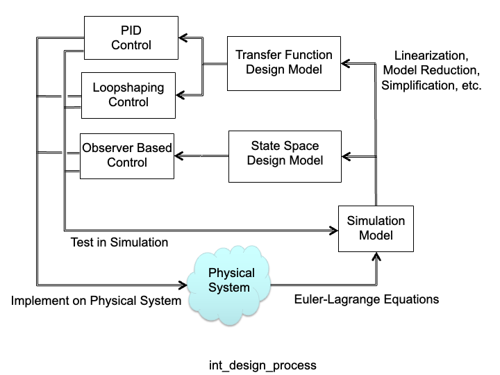
Figure 1.1. The design process. Using principles of
physics, the physical system is modeled mathematically, resulting in the
simulation model. The simulation model is simplified to create design
models that are used for the control design. The control design is then
tested and debugged in simulation and finally implemented on the
physical system.
1.1 Interactive Control
Workflow
Click Figure 1.1
The
diagram below is the same design-process figure, but the major regions
are clickable. Select a region to see how that part of the workflow will
be developed later in the book.
Disturbance experiment
Open-loop and
feedback response to a disturbance
Choose when the
disturbance appears and how large it is. The curves use a simple
first-order plant model: open loop has no current output measurement,
while feedback uses the measured output to drive the response back
toward the desired value. The role of integral action in removing
steady-state disturbance error is developed in Chapter 9, the PID
system-type section.
First-order disturbance comparison for dy/dt = -a
y + u + d. Open-loop operation cannot correct the offset caused by a
constant disturbance. The feedback curve includes the kind of
accumulated-error effect discussed later in Chapter 9, the PID
system-type section, so the output returns to the desired value after
the transient.
The simulation model is typically nonlinear and high order and is too
mathematically complex to be useful for control design. Therefore, to
facilitate design, the simulation model is simplified and usually
linearized to create lower-order design models. For any physical
system, there may be multiple design models that capture certain aspects
of the system that are important for a particular design. In this book
we will introduce the two most common design models used for control
systems analysis and design: transfer-function models and state-space
models. In both cases we will
linearize the system about a particular operating condition. The
advantage of transfer function models is that they capture the frequency
dependence of the input-output relationship in dynamic systems. The
advantage of state-space models is that they are more intuitive and are
better adapted to numerical implementation.
Part II of the book
shows how to linearize the equations of motion and how to create
transfer function and state-space design models.
The next three parts,
Part III–V, introduce
three different control design methods.
Part III shows how to design
Proportional-Integral-Derivative (PID) controllers for second-order
systems. The PID method is the most common control technique used in
industry. It can be understood from both a time-domain and
frequency-domain perspective. The advantage of PID is its simplicity in
design and implementation and the fact that it can be used to achieve
high performance for a surprising variety of systems. However, the
disadvantage of PID control is that stability and
performance can typically only be guaranteed for second-order systems.
Therefore, Part III is focused exclusively on
second-order systems.
In Part IV we
introduce the observer-based control method. Observer-based methods
can be thought of as a natural extension of PID controllers to
higher-order systems. However, observer-based methods are much more
general than PID and can be used to obtain higher performance. In
addition, most observer-based techniques extend to nonlinear and
time-varying systems. The disadvantages of observer-based methods are
that they require a higher level of mathematical sophistication to
understand and use, and they are primarily time-domain methods.
The final design technique, which is covered in
Part V, is the loop
shaping control design method. The loop shaping
method is a frequency domain technique that explicitly addresses
robustness of the system. The loop shaping method is also a natural
extension of PID control to higher-order systems. One of the advantages
of loop shaping techniques is that they can be used when only a
frequency response model of the system is available.
The book is organized around several design studies. For each new
concept that is introduced, we will apply that concept to three specific
design problems. The design problems are introduced in the following
three sections and include a single-link robot arm, a pendulum on a
cart, and a simple satellite attitude control problem. The homework
problems, which are provided in
Part VI, will
follow the same format with problems that are identical to those worked
in the book, but they will be applied to different physical systems. Our
hope is to illustrate the control design process with specific,
easy-to-understand problems. We note, however, that the concepts
introduced in this book are applicable to a much wider variety of
problems than those illustrated in the book. We focus on mechanical
systems, but a similar process (with the exception of the modeling
section) can be followed for any system that can be modeled using
ordinary differential equations. Examples include aerodynamic systems,
electrical systems, chemical processes, large structures like buildings
and bridges, biological feedback systems, economic systems, queuing
systems, and many more.
1.2 Design-Study Preview
Choose a system and identify what control
will need
These cards are a preview. At this point, focus
only on the physical system: what can be actuated, what can be measured,
and what limitation could matter later.
A. Single-link
arm
Likely actuator
Motor torque at
the joint.
Likely measurement
Arm angle and
possibly angular velocity.
Physical
limitation
Motor torque limits and gravity loading.
B. Pendulum on a
cart
Likely actuator
Horizontal
force on the cart.
Likely measurement
Cart
position and pendulum angle.
Physical
limitation
Limited track length and unstable pendulum
motion.
C. Satellite
attitude
Likely actuator
Applied
torque from thrusters or reaction wheels.
Likely
measurement
Attitude angle and angular rate.
Physical limitation
Flexible modes, actuator limits,
and fuel or energy use.
D. Mass-spring-damper
Likely
actuator
Applied force on the mass.
Likely
measurement
Position and possibly velocity.
Physical limitation
Oscillation, damping, and force
limits.
E. Block on
beam
Likely actuator
Beam angle or
torque applied to the beam.
Likely
measurement
Block position and beam angle.
Physical limitation
Beam angle limits and
rolling/sliding assumptions.
F. Planar VTOL
Likely
actuator
Left and right rotor thrusts.
Likely
measurement
Position, altitude, pitch angle, and
rates.
Physical limitation
Rotor saturation,
coupling between pitch and lateral motion, and gravity.
1.3 Design Studies
1.3.1 Design Study: Single Link
Robot Arm
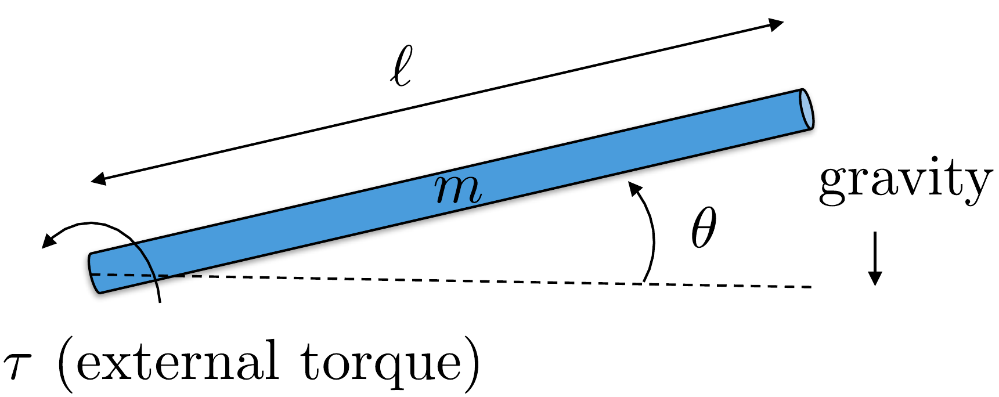
Figure 1.2 shows a
single-link robot arm system. The robot arm has mass \(m\) and length \(\ell\). The angle of the robot is given by
\(\theta\) as measured from horizontal
to the ground. The angular speed of the arm is \(\dot{\theta}\). There is an applied torque
\(\tau\) at the joint. There is also a
damping (or viscous friction) torque that opposes the rotation of the
joint and which can be modeled as \(-b\dot{\theta}\).
The actual physical parameters of the system are \(m=0.5\) kg, \(\ell=0.3\) m, \(g=9.8\) m/s\(^2\), \(b=0.01\) Nms. The torque is limited by
\(\left|\tau\right|\leq 1\) Nm.
Design
Study A orientation
Identify the robot-arm variables before
starting the design sequence
This check is not a worked
solution gate. It is a quick orientation to the coordinate, measured
output, actuator, and physical limitation that appear throughout the
single-link robot-arm design study.
Step 1. Configuration variable
Enter the generalized
coordinate used for the configuration.
Show solution for
Step 1
Answer: The configuration
variable is \(\theta\).
Step 2. Full state versus measured output
For later
state-space chapters, identify the two state variables and the measured
output used for this design study.
Show solution for Step
2
Answer: The state is \(x=(\theta,\dot{\theta})^T\), and the
measured output is \(y=\theta\).
Step 3. Actuation and limitation
Identify the actuator
input and one physical limitation that will matter during control
design.
Show solution
for Step 3
Answer: The actuator is
the applied joint torque \(\tau\).
A key limitation is the torque bound \(|\tau|\leq 1\) Nm; damping or viscous friction also
appears in the model.
Note: The notation identifies the design configuration and the
chapter in which it is used: Example A.4 refers to the
application of approximations in Chapter 4 to linearize design
configuration A. Similarly, Example A.P.6 refers to the
root locus assignment associated with Appendix A.P.6.
1.3.2 Design Study: Pendulum on a
Cart
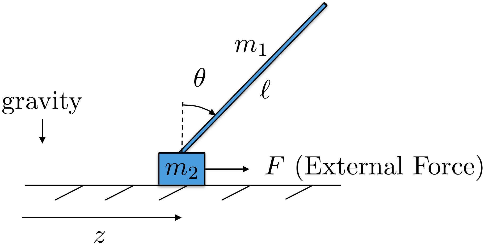
Figure 1.3 shows
the pendulum on a cart system, also called an inverted pendulum. The
position of the cart measured from the origin is \(z\) and the linear speed of the cart is
\(\dot{z}\). The angle of the pendulum
from straight up is given by \(\theta\), and the angular velocity is \(\dot{\theta}\). The rod is of length \(\ell\), and has mass \(m_1\), and is approximated as being
infinitely thin. The cart has mass \(m_2\). Gravity acts in the down direction.
The only applied force is \(F\), which
acts in the direction of \(z\). The
cart slides on a frictionless surface, but air friction produces a
damping force equal to \(-b\dot{z}\).
The physical constants are \(m_1=0.25\) kg, \(m_2=1.0\) kg, \(\ell=1.0\) m, \(g=9.8\) m/s\(^2\), \(b=0.05\) Ns. The force is limited by \(\left|F\right|\leq 5\) N.
Design
Study B orientation
Identify the pendulum variables before
starting the design sequence
This check is not a worked
solution gate. It is a quick orientation to the variables, measurements,
and limitations that appear throughout the pendulum-on-cart design
study.
Step 1. Configuration variables
Enter the two
generalized coordinates used for the configuration.
Show solution for
Step 1
Answer: The configuration
variables are z and θ.
Step 2. Full state versus measured output
For later
state-space chapters, identify the four state variables and the two
measured outputs described in the design study.
Show solution for
Step 2
Answer: The full state is
(z, θ, z, θ)T, while the
measured output used in later chapters is typically (z,
θ)T.
Step 3. Actuation and limitation
Identify the single
actuator and one physical limitation that will matter during control
design.
Show solution
for Step 3
Answer: The actuator is
the horizontal force F on the
cart. Later designs must respect the force limit, limited cart travel,
and the unstable upright pendulum motion.
Figure 1.4 shows a simplified version
of a satellite with flexible solar panels. We will model the flexible
panels using a rigid sheet with moment of inertia \(J_p\) connected to the main satellite body
by a torsional compliant element with spring constant \(k\) and damping constant \(b\). The moment of inertia of the satellite
is \(J_s\). The angle of the satellite
body from the inertial reference is \(\theta\) and the angle of the panel from
the inertial reference is denoted as \(\phi\). Thrusters are used to command an
external torque of \(\tau\) about the
axis of the satellite body.
The physical constants are \(J_s=5\) kg m\(^2\), \(J_p=1\) kg m\(^2\), \(k=0.1\) N m, \(b=0.05\) Nms. The torque is limited by
\(\left|\tau\right|\leq 5\) Nm.
Design
Study C guided orientation
Identify the satellite variables
before starting the worked examples
The satellite has a
rigid body and flexible panel. Before using the study in later chapters,
check that you can distinguish the body attitude, panel attitude,
relative panel deflection, and torque input.
Step 1:
Configuration variables
Identify the three variables that
fully describe the satellite and its deflection.
Show solution for Step
1
Answer: The configuration
variables are \(\theta\), \(\phi\), and \(\phi-\theta\).
Step
2. Identify what the actuator directly changes
Show solution for Step
2
Answer: The input is body torque
\(\tau\), applied directly to the
satellite body coordinate \(\theta\).
Step
3. Interpret no flexure
Show solution for Step
3
Answer: No panel flexure means
\(\phi-\theta=0\), so \(\theta=\phi\).
Use these quick checks to test the Chapter 1 workflow vocabulary before
moving on. The short-answer checks are intentionally limited to terms
that can be graded reliably.
Q1. Design
model
Which item best describes the
role of a design model?
Q2. Value of feedback
Why is feedback useful?
Q3. Implementation
Which item is
usually closest to implementation?
Q4. Disturbance response
A disturbance pushes the output away from the
desired behavior. What information does a feedback system need in order
to react?
Q5.
Vocabulary
What is the name for using
measured output to react to error?
Show
solution
Answer: Feedback. Feedback
uses measured output information to respond to
error.
Q6. Model
vocabulary
What kind of model is
simplified for controller design?
Show
solution
Answer: Design model. The
simulation model is simplified into one or more design
models.
Reflection
Prompt
In one or two sentences, explain why the book
separates modeling, design, implementation, and validation.
Show
guidance
Guidance: A strong answer
should mention that each step serves a different purpose and that
success in simulation does not guarantee success on the physical
system.
Q7.
Model roles
A team has a detailed
nonlinear simulator and a simpler linear model used to choose feedback
gains. Which artifact is the design model?
Q8. Feedback information
A wind gust pushes an aircraft away from the
commanded attitude. What information is essential for feedback to
correct the error?
Part I
Simulation Models
To design efficient feedback control systems, we use mathematical
models to understand the system, and then we design controllers that
achieve the desired specifications. Developing suitable mathematical
models is problem-specific and can be very complicated, requiring
specialized knowledge. However, there are some well-known techniques for
certain classes of systems. This book covers one general technique that
is useful for a large class of rigid-body mechanical systems. The
technique is known as the Euler-Lagrange method and requires a
mathematical description of the kinetic and potential energy of the
system, given its generalized position and velocity. The theory behind
the Euler-Lagrange method is deep and well beyond the scope of this
book. However, we will give a brief introduction that will enable the
reader to apply Euler-Lagrange methods to a surprisingly large class of
problems.
As motivation for the Euler-Lagrange equations, consider a particle
of mass \(m\) in a gravity field, as
shown in
Fig.1.5, where \(g\) is the force of gravity at sea level,
\(f_a\) is an externally applied force,
and the friction due to air resistance is modeled by a gain \(b\) times the velocity \(\dot{y}\).
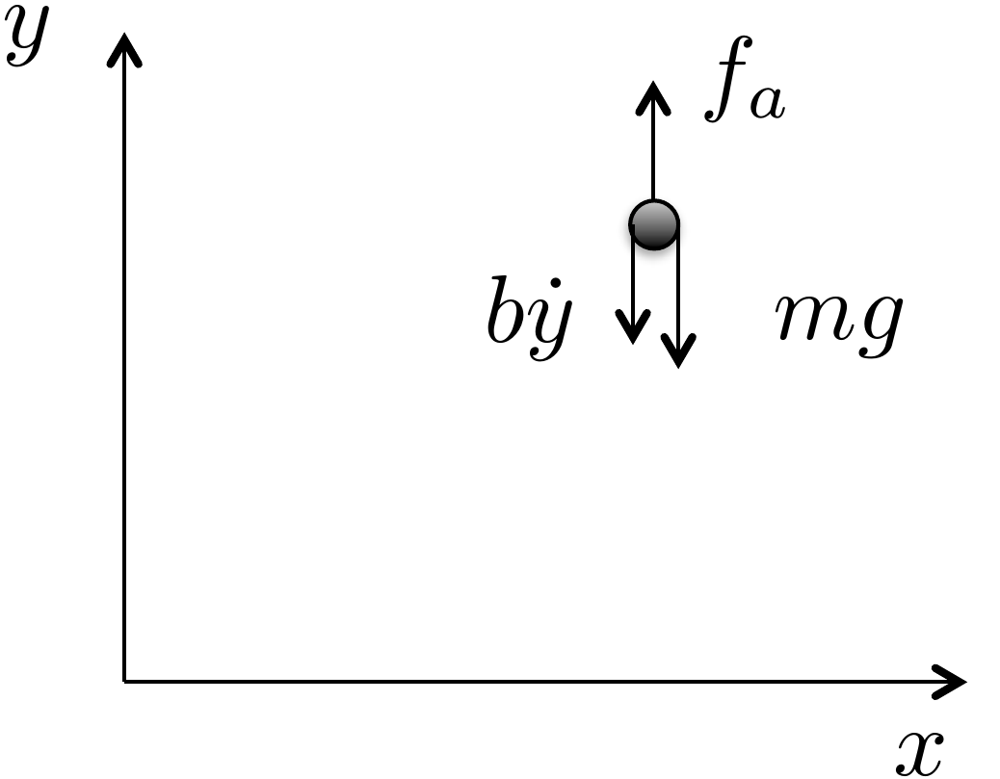
Figure 1.5. Point mass in a gravity
field.
Since all of the forces are in the vertical direction, the motion of
the vehicle can be completely described by the vertical position of
particle \(y(t)\). From Newton’s law,
the equations of motion are \[\label{eq:sim_particle_1}
m\ddot{y} = f_a-mg-b\dot{y},\] where dots over the variable will
be used throughout the book to denote differentiation with respect to
time, i.e., \(\dot{y}\stackrel{\triangle}{=}\frac{dy}{dt}\)
and \(\ddot{y}\stackrel{\triangle}{=}\frac{d^2y}{dt^2}\).
Rearranging 1.1 gives \[\label{eq:sim_particle_2}
m\ddot{y} + mg = f_a -b\dot{y}.\] The kinetic energy for the particle is
given by \(K(\dot{y})=\frac{1}{2}mv^2=\frac{1}{2}m\dot{y}^2\).
The potential energy, which is induced by
gravitational pull proportional to the distance from the center of the
earth, is given by \(P(y)=P_0+mgy\),
where \(P_0\) is the potential energy
of the particle when \(y=0\). Note that
if the velocity \(\dot{y}\) is thought
of as independent of \(y\), then \[\frac{\partial K(\dot{y})}{\partial \dot{y}} =
m\dot{y}\] and \[\frac{d}{dt}\left(\frac{\partial
K(\dot{y})}{\partial \dot{y}}\right) = m\ddot{y}.\] Also note
that \[\frac{\partial P(y)}{\partial y} =
mg.\] Therefore,
Equation 1.2 can be
written as \[\label{eq:sim_model_euler_lagrange_1}
\frac{d}{dt}\left(\frac{\partial K(\dot{y})}{\partial \dot{y}}\right) +
\frac{\partial P(y)}{\partial y} = f_a-b\dot{y}.\]
Equation 1.3
is a particular form of the so-called Euler-Lagrange equation. The
generalization to a more complicated system takes the form \[\label{eq:sim_model_euler_lagrange_2}
\frac{d}{dt}\left(\frac{\partial K(y,\dot{y})}{\partial
\dot{y}}-\frac{\partial P(y)}{\partial \dot{y}}\right) -
\left(\frac{\partial K(y,\dot{y})}{\partial y} - \frac{\partial
P(y)}{\partial y}\right) = f_a-b\dot{y},\] which reduces to
Equation 1.3
for our particular case since \(K\) is
only a function of \(\dot{y}\). To
simplify the notation, we define the so-called Lagrangian as
\[L(y,\dot{y})\stackrel{\triangle}{=}K(y,\dot{y})-P(y),\]
and write
Equation 1.4
as \[\label{eq:sim_model_euler_lagrange_3}
\frac{d}{dt}\left(\frac{\partial L(y,\dot{y})}{\partial \dot{y}}\right)
- \left(\frac{\partial L(y,\dot{y})}{\partial y}\right) =
f_a-b\dot{y}.\] The position of the system can be generalized to
both positions and angles, and the velocity can be generalized to both
linear and angular velocities. Throughout the book we will use the
notation \(\mathbf{q} = (q_1, q_2, \dots,
q_n)^\top\) to denote the general configuration of the mechanical
system that we are modeling. The vector \(\mathbf{q}\) is called the
generalized-coordinate vector. The kinetic energy of
the system is generally a function of both the generalized coordinates
\(\mathbf{q}\) and the generalized
velocity \(\dot{\mathbf{q}}\). Therefore, we denote
the kinetic energy as \(K(\mathbf{q},\dot{\mathbf{q}})\). On the
other hand, in this book we will only consider potential fields that are
conservative and depend only on the configuration variable \(\mathbf{q}\). Under these assumptions, the
general form of the Euler-Lagrange equations is given by \[\begin{aligned}
\frac{d}{dt}\left(\frac{\partial
L(\mathbf{q},\dot{\mathbf{q}})}{\partial \dot{q}_1}\right) -
\frac{\partial L(\mathbf{q},\dot{\mathbf{q}})}{\partial q_1} &=
\tau_1-b_{11} \dot{q}_1 - \cdots - b_{1n}\dot{q}_n \notag \\
\frac{d}{dt}\left(\frac{\partial
L(\mathbf{q},\dot{\mathbf{q}})}{\partial \dot{q}_2}\right) -
\frac{\partial L(\mathbf{q},\dot{\mathbf{q}})}{\partial q_2} &=
\tau_2-b_{21} \dot{q}_1 - \cdots - b_{2n}\dot{q}_n
\label{eq:sim_model_euler_lagrange} \\
\vdots \\
\frac{d}{dt}\left(\frac{\partial
L(\mathbf{q},\dot{\mathbf{q}})}{\partial \dot{q}_n}\right) -
\frac{\partial L(\mathbf{q},\dot{\mathbf{q}})}{\partial q_n} &=
\tau_n-b_{n1} \dot{q}_1 - \cdots - b_{nn}\dot{q}_n, \notag
\end{aligned}\] where \(\tau_i\)
are the generalized forces and torques that are applied to the system.
Or in vector form we can write \[\label{eq:sim_model_euler_lagrange-vector}
\frac{d}{dt}\left(\frac{\partial
L(\mathbf{q},\dot{\mathbf{q}})}{\partial \dot{\mathbf{q}}}\right) -
\frac{\partial L(\mathbf{q},\dot{\mathbf{q}})}{\partial \mathbf{q}} =
\boldsymbol{\tau} -B \dot{\mathbf{q}},\] where \(B\) is a matrix with positive elements and
\(\boldsymbol{\tau}=(\tau_1,\dots,\tau_n)^\top\)
are the generalized forces. The Euler-Lagrange
equation will be discussed in
more detail in
Chapter 6. However, before showing how
to use Equation 1.8
to derive the equations of motion for practical systems, we need to show
how to compute the kinetic and potential energy for general (holonomic)
rigid body systems.
2 Kinetic Energy of Mechanical
Systems
2.1 Theory
Consider a point mass with mass \(m\), traveling at velocity \(\mathbf{v}\), as shown in
Fig.2.1. If the velocity is
resolved with respect to a coordinate axis, then \(\mathbf{v}=(v_x, v_y, v_z)^\top\). The
kinetic energy of the point mass is
given by \[\begin{aligned}
K &= \frac{1}{2} m \left|\mathbf{v}\right|^2 \\
&= \frac{1}{2} m \mathbf{v}^\top \mathbf{v} \\
& = \frac{1}{2} m (v_x^2 + v_y^2 + v_z^2).
\end{aligned}\]
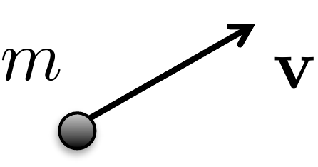
Figure 2.1. Point mass moving at velocity v.
Now consider two point masses as shown in
Fig.2.2.
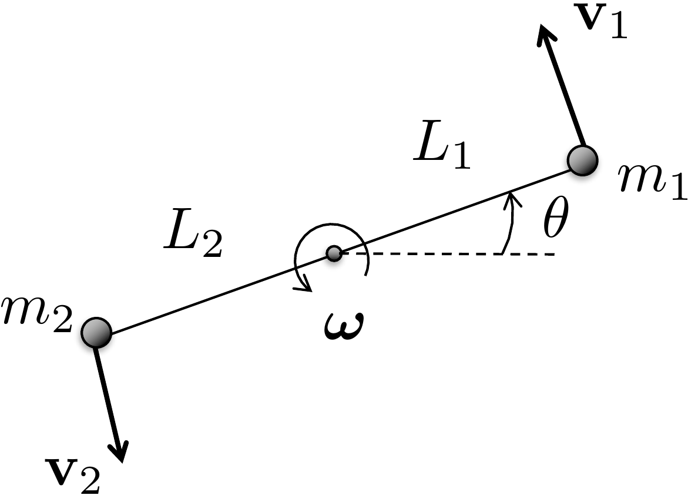
Figure 2.2. Two constrained point masses spinning
about a point on an adjoining axis.
The total kinetic energy of the system is given by summing the
kinetic energy of each of the point masses as \[\label{eq:kinetic_energy_two_masses}
K = \frac{1}{2} m_1 \mathbf{v}_1^\top \mathbf{v}_1 + \frac{1}{2} m_2
\mathbf{v}_2^\top \mathbf{v}_2.\] If the two masses are connected
by a massless rod and the particles are spinning about a point on the
rod, as shown in
Fig.2.2, where the angular velocity
vector \(\boldsymbol{\omega}\) points
out of the page, and the magnitude is given by \(\dot{\theta}\), i.e., \(\boldsymbol{\omega}=(0, 0,
\dot{\theta})^\top\), then from elementary physics, the velocity
of point \(i\) is given by \[\mathbf{v}_i =
\boldsymbol{\omega}\times\mathbf{p}_i,\] where in our case \(\mathbf{p}_1 = (L_1\cos\theta, L_1\sin\theta,
0)^\top\), and \(\mathbf{p}_2 =
(-L_2\cos\theta, -L_2\sin\theta, 0)^\top\). Therefore \[\begin{aligned}
\mathbf{v}_1 &= \begin{pmatrix} 0 \\ 0 \\
\dot{\theta}\end{pmatrix}\times\begin{pmatrix}L_1\cos\theta \\
L_1\sin\theta \\ 0\end{pmatrix} = \begin{pmatrix}
-L_1\dot{\theta}\sin\theta \\ L_1\dot{\theta}\cos\theta \\ 0
\end{pmatrix} \\
\mathbf{v}_2 &= \begin{pmatrix} 0 \\ 0 \\ \dot{\theta}
\end{pmatrix}\times\begin{pmatrix}-L_2\cos\theta \\ -L_2\sin\theta \\
0\end{pmatrix} = \begin{pmatrix} L_2\dot{\theta}\sin\theta \\
-L_2\dot{\theta}\cos\theta \\ 0 \end{pmatrix}.
\end{aligned}\] An alternative method for computing the
velocities \(\mathbf{v}_1\) and \(\mathbf{v}_2\) is to differentiate \(\mathbf{p}_1\) and \(\mathbf{p}_2\) with respect to time to
obtain \[\begin{aligned}
\mathbf{v}_1 &\stackrel{\triangle}{=}\dot{\mathbf{p}}_1
= \frac{d\mathbf{p}_1}{dt}
= \frac{d}{dt}(L_1\cos\theta, L_1\sin\theta, 0)^\top \\
&=
\begin{pmatrix}-L_1\left(\frac{d\theta}{dt}\right)\sin\theta, &
L_1\left(\frac{d\theta}{dt}\right)\cos\theta, & 0 \end{pmatrix}^\top
\\
&= \begin{pmatrix}-L_1\dot{\theta}\sin\theta, &
L_1\dot{\theta}\cos\theta, & 0 \end{pmatrix}^\top \\
\mathbf{v}_2 &\stackrel{\triangle}{=}\dot{\mathbf{p}}_2
= \frac{d\mathbf{p}_2}{dt}
= \frac{d}{dt}(-L_2\cos\theta, -L_2\sin\theta, 0)^\top \\
&=
\begin{pmatrix}L_2\left(\frac{d\theta}{dt}\right)\sin\theta, &
-L_2\left(\frac{d\theta}{dt}\right)\cos\theta, & 0
\end{pmatrix}^\top \\
&= \begin{pmatrix}L_2\dot{\theta}\sin\theta, &
-L_2\dot{\theta}\cos\theta, & 0 \end{pmatrix}^\top.
\end{aligned}\]
Now consider the case where there are \(N\) point masses spinning about a general
angular velocity vector \(\boldsymbol{\omega}\), where the position
of the \(i^{th}\) point mass, \(i=1,\dots,N\), in a specified coordinate
system is given by \(\mathbf{p}_i\), as
shown in
Fig.2.3.
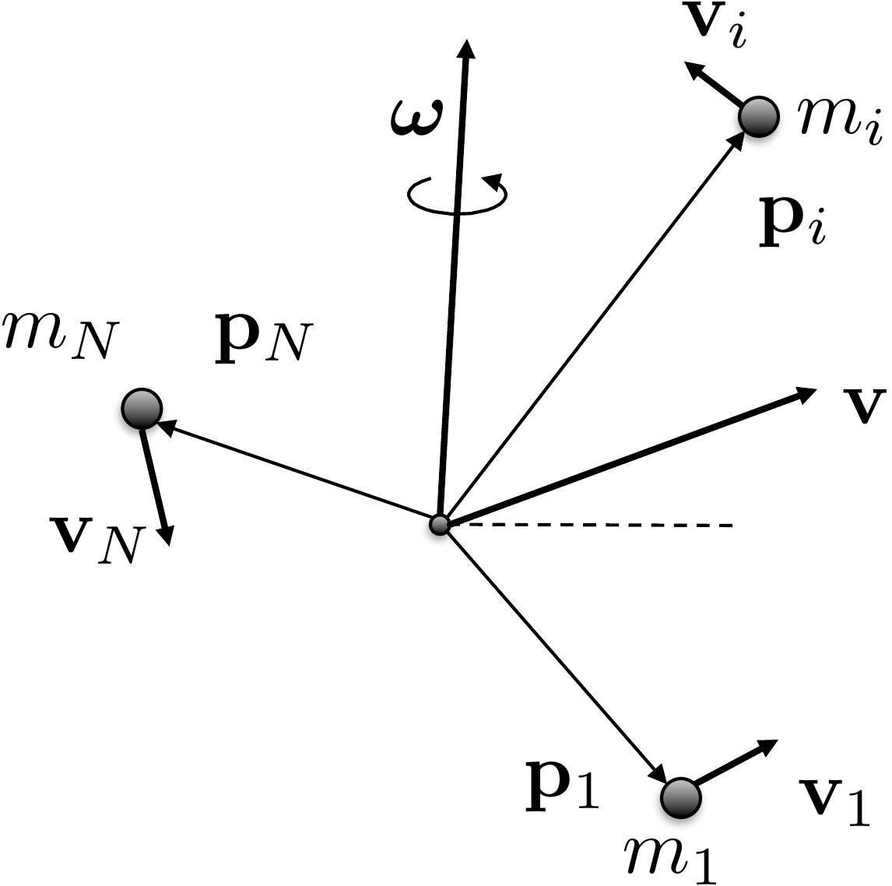
Figure 2.3. Many masses in a rigid body spinning
about a common axis and moving at velocity v.
We will see in the discussion below that it is most convenient to
pick the coordinate system to be at the center of mass. The kinetic
energy of the \(i^{th}\) particle is
\(K_i =
\frac{1}{2}m_i\mathbf{v}_i^\top\mathbf{v}_i\). Therefore, the
kinetic energy of the total system is given by \[K = \sum_{i=1}^N
\frac{1}{2}m_i\mathbf{v}_i^\top\mathbf{v}_i.\] Using the fact
that \(\mathbf{v}_i =
\boldsymbol{\omega}\times\mathbf{p}_i\) gives \[K = \sum_{i=1}^N
\frac{1}{2}m_i\left(\boldsymbol{\omega}\times\mathbf{p}_i\right)^\top\left(\boldsymbol{\omega}\times\mathbf{p}_i\right).\]
Recalling the cross product rule \[(\mathbf{a}\times\mathbf{b})^\top(\mathbf{c}\times\mathbf{d})
=
(\mathbf{a}^\top\mathbf{c})(\mathbf{b}^\top\mathbf{d})-(\mathbf{a}^\top\mathbf{d})(\mathbf{b}^\top\mathbf{c})\]
gives \[\begin{aligned}
K &= \frac{1}{2} \sum_{i=1}^N m_i \left[
(\boldsymbol{\omega}^\top\boldsymbol{\omega})(\mathbf{p}_i^\top\mathbf{p}_i)-(\boldsymbol{\omega}^\top\mathbf{p}_i)(\mathbf{p}_i^\top\boldsymbol{\omega})\right]
\\
&= \frac{1}{2} \sum_{i=1}^N m_i \boldsymbol{\omega}^\top \left[
(\mathbf{p}_i^\top\mathbf{p}_i) I_3 - \mathbf{p}_i \mathbf{p}_i^\top
\right] \boldsymbol{\omega} \\
&= \frac{1}{2} \boldsymbol{\omega}^\top \left[ \sum_{i=1}^N m_i
\left((\mathbf{p}_i^\top\mathbf{p}_i) I_3 - \mathbf{p}_i
\mathbf{p}_i^\top \right) \right] \boldsymbol{\omega} \\
&\stackrel{\triangle}{=}\frac{1}{2} \boldsymbol{\omega}^\top J
\boldsymbol{\omega}.
\end{aligned}\] where \(I_3\) is
the \(3 \times 3\) identity matrix. The
matrix \[J = \sum_{i=1}^N m_i
\left((\mathbf{p}_i^\top\mathbf{p}_i) I_3 - \mathbf{p}_i
\mathbf{p}_i^\top \right)\] is called the inertia matrix of the
mass system. If the mass system is solid then there is an infinite
number of particles, and the sum becomes an integral resulting in \[J = \int_{\mathbf{p}\in\text{body}}
\left((\mathbf{p}^\top\mathbf{p}) I_3 - \mathbf{p} \mathbf{p}^\top
\right)dm(\mathbf{p}),\] where \(dm(\mathbf{p})\) is the elemental mass
located at position \(\mathbf{p}\) and
the integral is over all elemental masses in the system.
Suppose that \(\mathbf{p}=(x, y,
z)^\top\) is expressed with respect to a coordinate system fixed
in a rigid body. Then \[\begin{aligned}
J &= \int_{(x,y,z)\in\text{body}} \Bigg[ \begin{pmatrix} x & y
& z \end{pmatrix}\begin{pmatrix} x \\ y \\ z \end{pmatrix}
\begin{pmatrix} 1 & 0 & 0 \\ 0 & 1 & 0 \\ 0 & 0
& 1 \end{pmatrix}
%
- \begin{pmatrix} x \\ y \\ z \end{pmatrix} \begin{pmatrix} x &
y & z \end{pmatrix} \Bigg] dm(x,y,z) \\
&= \int_{(x,y,z)\in\text{body}} \Bigg[ (x^2 + y^2 +
z^2)\begin{pmatrix} 1 & 0 & 0 \\ 0 & 1 & 0 \\ 0 & 0
& 1 \end{pmatrix}
%
- \begin{pmatrix} x^2 & xy & x z \\ yx & y^2 & yz \\
zx & zy & z^2 \end{pmatrix} \Bigg] dm(x,y,z) \\
&= \int_{(x,y,z)\in\text{body}} \begin{pmatrix} y^2 + z^2 & -xy
& -x z \\ -yx & x^2+z^2 & -yz \\ -zx & -zy & x^2+y^2
\end{pmatrix} dm(x,y,z).
\end{aligned}\]
As an example, to compute the inertia matrix of the thin rod of mass
\(m\) about its center of mass, as
shown in
Fig.2.4, the first step is to define a
coordinate system at the center of mass, as shown in
Fig.2.4, where \(\hat{i}\) and \(\hat{j}\) are orthogonal unit vectors
pointing parallel and perpendicular to the rod, respectively. The unit
vector \(\hat{k}\) forms a right-handed
coordinate system and points out of the page.
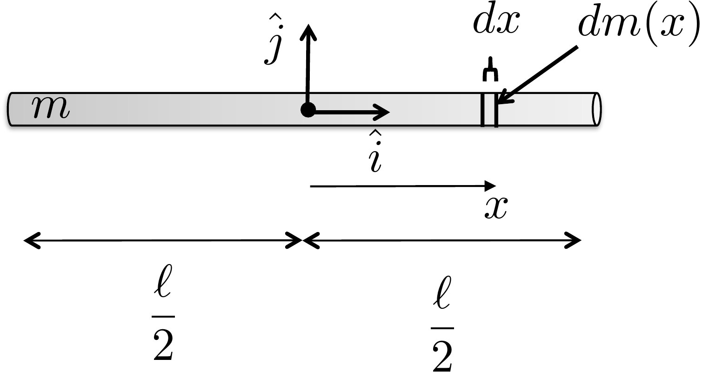
Figure 2.4. Computing the inertia of a thin
rod.
Assuming that the rod is infinitely thin and that the mass is evenly
distributed throughout the rod, then the elemental mass is given by
\[dm(x) = \frac{m}{\ell}dx.\] Since
the rod is infinitely thin in the \(\hat{j}\) and \(\hat{k}\) directions, the inertia matrix is
given by \[\begin{aligned}
J &= \int_{x=-\ell/2}^{\ell/2}\int_{y=0}^0\int_{z=0}^0
\begin{pmatrix} y^2 + z^2 & -xy & -x z \\ -yx & x^2+z^2
& -yz \\ -zx & -zy & x^2+y^2 \end{pmatrix} dz \, dy \,
\frac{m}{\ell}dx \notag\\
&= \frac{m}{\ell} \int_{x=-\ell/2}^{\ell/2} \begin{pmatrix} 0
& 0 & 0 \\ 0 & x^2 & 0 \\ 0 & 0 & x^2
\end{pmatrix} dx \notag\\
&= \frac{m}{\ell} \begin{pmatrix} 0 & 0 & 0 \\ 0 &
\frac{x^3}{3}\big|_{x=-\frac{\ell}{2}}^{\frac{\ell}{2}} & 0 \\ 0
& 0 & \frac{x^3}{3}\big|_{x=-\frac{\ell}{2}}^{\frac{\ell}{2}}
\end{pmatrix}
= \begin{pmatrix} 0 & 0 & 0 \\ 0 &
\frac{m\ell^2}{12} & 0 \\ 0 & 0 & \frac{m\ell^2}{12}
\end{pmatrix}. \label{eq:sm_inertia_thin_rod}
\end{aligned}\] Note that the infinitely thin rod assumption
implies that there is only inertia, or rotational mass, about the \(\hat{j}\) and \(\hat{k}\) axes.
As another example, to compute the inertia matrix of the thin plate
of mass \(m\) about its center of mass,
as shown in
Fig.2.5, the first step is to define
a coordinate system at the center of mass, as shown in
Fig.2.5, where \(\hat{i}\) and \(\hat{j}\) are orthogonal unit vectors
pointing along the length and width of the plate, respectively, and
\(\hat{k}\) forms a right-handed
coordinate system and points perpendicular to the plate.
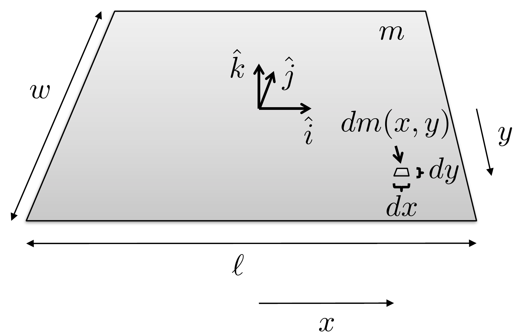
Figure 2.5. Computing the inertia of a thin
plate.
Assuming that the plate is infinitely thin, and that the mass is
evenly distributed throughout the plate, then the elemental mass is
given by \[dm(x,y) = \frac{m}{\ell
w}dx\,dy.\] Since the plate is infinitely thin in the \(\hat{k}\) direction, the inertia matrix is
given by \[\begin{aligned}
J &= \int_{x=-\ell/2}^{\ell/2}\int_{y=-w/2}^{w/2}\int_{z=0}^0
\begin{pmatrix} y^2 + z^2 & -xy & -x z \\ -yx & x^2+z^2
& -yz \\ -zx & -zy & x^2+y^2 \end{pmatrix} dz \, dy \,
\frac{m}{\ell w}\,dx \\
&= \frac{m}{\ell w} \int_{x=-\ell/2}^{\ell/2}
\int_{y=-w/2}^{w/2} \begin{pmatrix} y^2 & -xy & 0 \\ -yx &
x^2 & 0 \\ 0 & 0 & x^2 +y^2\end{pmatrix} dy\,dx \\
%
&= \frac{m}{\ell w} \int_{x=-\ell/2}^{\ell/2} \begin{pmatrix}
\frac{w^3}{12} & 0 & 0 \\ 0 & x^2 w & 0 \\ 0 & 0
& x^2 w +\frac{w^3}{12}\end{pmatrix} dx \\
%
&= \frac{m}{\ell w} \begin{pmatrix} \frac{w^3}{12}\ell & 0
& 0 \\ 0 & \frac{\ell^3}{12} w & 0 \\ 0 & 0 &
\frac{\ell^3}{12}w +\frac{w^3}{12}\ell\end{pmatrix}
= \begin{pmatrix} \frac{mw^2}{12} & 0 & 0 \\ 0 &
\frac{m\ell^2}{12} & 0 \\ 0 & 0 & \frac{m\ell^2}{12}
+\frac{mw^2}{12}\end{pmatrix}.
\end{aligned}\]
The diagonal elements of \(J\) are
called the moments of inertia and represent the
rotational mass about the \(\hat{i}\),
\(\hat{j}\), and \(\hat{k}\) axes respectively.
We have shown that if the motion of the system of \(N\) masses is caused purely by spinning
about the angular velocity vector \(\boldsymbol{\omega}\), then the kinetic
energy is given by \(K=\frac{1}{2}\boldsymbol{\omega}^\top J
\boldsymbol{\omega}\). If the system of masses is also
translating with velocity \(\mathbf{v}\), then the velocity of the
\(i^{th}\) particle is given by \(\mathbf{v}_i = \mathbf{v} +
\boldsymbol{\omega}\times\mathbf{p}_i.\) In that case, the
kinetic energy is given by \[\begin{aligned}
K &= \frac{1}{2}\sum_{i=1}^N m_i \mathbf{v}_i^\top\mathbf{v}_i
= \frac{1}{2}\sum_{i=1}^N m_i (\mathbf{v} +
\boldsymbol{\omega}\times\mathbf{p}_i)^\top(\mathbf{v} +
\boldsymbol{\omega}\times\mathbf{p}_i) \\
&= \frac{1}{2}\sum_{i=1}^N m_i \Big(\mathbf{v}^\top\mathbf{v} +
\mathbf{v}^\top(\boldsymbol{\omega}\times\mathbf{p}_i)+(\boldsymbol{\omega}\times\mathbf{p}_i)^\top\mathbf{v}
%
+
(\boldsymbol{\omega}\times\mathbf{p}_i)^\top(\boldsymbol{\omega}\times\mathbf{p}_i)
\Big) \\
&= \frac{1}{2}\left(\sum_{i=1}^N m_i\right)\mathbf{v}^\top\mathbf{v}
+ \frac{1}{2} \sum_{i=1}^N m_i
(\boldsymbol{\omega}\times\mathbf{p}_i)^\top(\boldsymbol{\omega}\times\mathbf{p}_i)
\\ &\qquad\qquad
+ \frac{1}{2}\sum_{i=1}^N
m_i\left[\mathbf{v}^\top(\boldsymbol{\omega}\times\mathbf{p}_i) +
(\boldsymbol{\omega}\times\mathbf{p}_i)^\top\mathbf{v}\right].
\end{aligned}\] Using the cross product property \[\mathbf{a}^\top(\mathbf{b}\times\mathbf{c}) =
\mathbf{b}^\top(\mathbf{c}\times\mathbf{a}) =
\mathbf{c}^\top(\mathbf{a}\times\mathbf{b})\] we get that \[\begin{gathered}
\sum_{i=1}^N
m_i\left[\mathbf{v}^\top(\boldsymbol{\omega}\times\mathbf{p}_i) +
(\boldsymbol{\omega}\times\mathbf{p}_i)^\top\mathbf{v}\right] =
\\
(\sum_{i=1}^N m_i\mathbf{p}_i)^\top(\mathbf{v}\times\boldsymbol{\omega})
+ (\sum_{i=1}^N
m_i\mathbf{p}_i)^\top(\mathbf{v}\times\boldsymbol{\omega}).
\end{gathered}\] If we choose the center of the coordinate system
to be the center of mass, then \(\sum_{i=1}^N
m_i\mathbf{p}_i=0\). Defining the total mass as \(m=\sum_{i=1}^N m_i\), the kinetic energy is
given by \[\begin{aligned}
K&= \frac{1}{2}\left(\sum_{i=1}^N
m_i\right)\mathbf{v}_{cm}^\top\mathbf{v}_{cm} + \frac{1}{2} \sum_{i=1}^N
m_i
(\boldsymbol{\omega}\times\mathbf{p}_i)^\top(\boldsymbol{\omega}\times\mathbf{p}_i) \notag
\\
&= \frac{1}{2}m\mathbf{v}_{cm}^\top\mathbf{v}_{cm}
+ \frac{1}{2} \boldsymbol{\omega}^\top J_{cm} \boldsymbol{\omega}.
\end{aligned}\]
Therefore, the kinetic energy of a rigid body moving with velocity
\(\mathbf{v}_{cm}\) and spinning at
angular velocity \(\boldsymbol{\omega}\) is \[\label{eq:sm_kinetic_energy_cm}
K=\frac{1}{2}m\mathbf{v}_{cm}^\top\mathbf{v}_{cm}
+ \frac{1}{2} \boldsymbol{\omega}^\top J_{cm}
\boldsymbol{\omega}.\] If the system consists of \(n\) rigid bodies, then the total kinetic
energy is computed by summing the kinetic energy for each body as \[K = \sum_{j=1}^n
\left[\frac{1}{2}m_j\mathbf{v}_{cm,j}^\top\mathbf{v}_{cm,j}
+ \frac{1}{2} \boldsymbol{\omega}_j^\top J_{cm,j}
\boldsymbol{\omega}_j\right].\]
2.1.1 Example: Mass Spring
System
As an example, consider the mass spring system shown in
Fig.2.6 where two masses are
moving along a surface and are connected by springs with constants \(k_1\) and \(k_2\) and dampers with constants \(b_1\) and \(b_2\). The kinetic energy of the system is
determined by the velocity of the two masses and is therefore given by
\[K = \frac{1}{2} m_1 \dot{z}_1^2 +
\frac{1}{2} m_2 \dot{z}_2^2.\]
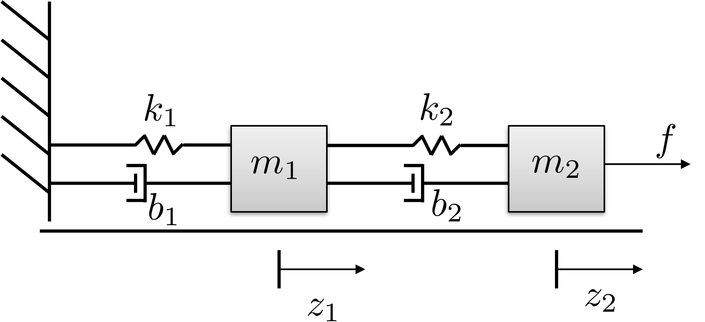
Figure 2.6. Mass spring system with two masses
connected by springs and dampers.
2.1.2 Example: Spinning
Dumbbell
As another simple example, consider the spinning dumbbell system
shown in
Fig.2.7, where two masses are
spinning about a point on the adjoining line between the masses. The
angular velocity vector is pointing out of the page with magnitude \(\dot{\theta}\) and the dumbbell system is
moving to the right at velocity \(\dot{z}\).
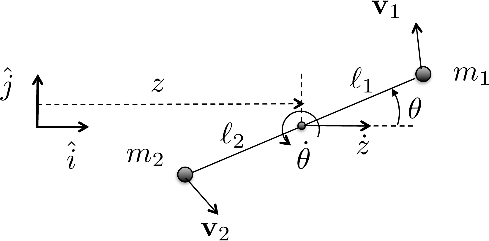
Figure 2.7. Spinning dumbbell. The system is spinning
about the axis pointing out of the page and moving to the right at
velocity ż.
The first step in computing the kinetic energy is to define an
inertial coordinate system as shown in
Fig.2.7 where \(\hat{i}\) is a unit vector along the
direction of travel, \(\hat{j}\) is
perpendicular to the direction of travel, and where \(\hat{k}\) forms a right-handed coordinate
system and points out of the page. In this coordinate system, the
position of the point of rotation is given by \(\mathbf{p}(t)=(z(t), 0, 0)^\top\).
Accordingly, the positions of \(m_1\)
and \(m_2\) are given by \[\begin{aligned}
\mathbf{p}_1(t) &= (z(t)+\ell_1\cos\theta(t), \ell_1\sin\theta(t),
0)^\top, \\
\mathbf{p}_2(t) &= (z(t)-\ell_2\cos\theta(t), -\ell_2\sin\theta(t),
0)^\top.
\end{aligned}\] Since \(z\) and
\(\theta\) are functions of time, using
the chain rule \[\frac{d}{dt}f(g(t)) =
\frac{\partial f}{\partial g}\frac{d g}{dt}\] and differentiating
with respect to time, we get the velocities of the masses as \[\begin{aligned}
\mathbf{v}_1 &= (\dot{z} - \ell_1\dot{\theta}\sin\theta,
\ell_1\dot{\theta}\cos\theta, 0)^\top,\\
\mathbf{v}_2 &= (\dot{z} + \ell_2\dot{\theta}\sin\theta,
-\ell_2\dot{\theta}\cos\theta, 0)^\top.
\end{aligned}\] The kinetic energy is therefore given by \[\begin{aligned}
K &= \frac{1}{2}m_1\mathbf{v}_1^\top \mathbf{v}_1 +
\frac{1}{2}m_2\mathbf{v}_2^\top \mathbf{v}_2 \\
&= \frac{1}{2}m_1 \left[(\dot{z} - \ell_1\dot{\theta}\sin\theta)^2 +
(\ell_1\dot{\theta}\cos\theta)^2 \right]
\\&\qquad
+ \frac{1}{2}m_2\left[(\dot{z} + \ell_2\dot{\theta}\sin\theta)^2 +
(-\ell_2\dot{\theta}\cos\theta)^2 \right] \\
&= \frac{1}{2}m_1 \left[\dot{z}^2 -
2\ell_1\dot{z}\dot{\theta}\sin\theta +
\ell_1^2\dot{\theta}^2\sin^2\theta+\ell_1^2\dot{\theta}^2\cos^2\theta
\right]
\\ &\quad
+ \frac{1}{2}m_2\left[\dot{z}^2 +
2\ell_2\dot{z}\dot{\theta}\sin\theta +
\ell_2^2\dot{\theta}^2\sin^2\theta+\ell_2^2\dot{\theta}^2\cos^2\theta
\right] \\
&= \frac{1}{2}(m_1+m_2)\dot{z}^2 + \frac{1}{2}
(m_1\ell_1^2+m_2\ell_2^2)\dot{\theta}^2 +
(m_2\ell_2-m_1\ell_1)\dot{z}\dot{\theta}\sin\theta.
\end{aligned}\] Note that if the pivot point is located at the
center of mass, then \(m_1\ell_1=m_2\ell_2\), and the kinetic
energy is simply given by \[K =
\frac{1}{2}(m_1+m_2)\dot{z}^2 + \frac{1}{2}
(m_1\ell_1^2+m_2\ell_2^2)\dot{\theta}^2,\] which is in the form
\[K =
\frac{1}{2}m\mathbf{v}_{cm}^\top\mathbf{v}_{cm} +
\frac{1}{2}\boldsymbol{\omega}^\top J \boldsymbol{\omega},\]
where the total mass is \(m=m_1+m_2\),
the velocity of the center of mass is \(\mathbf{v}_{cm}=(\dot{z}, 0, 0)^\top\), the
angular velocity vector is \(\boldsymbol{\omega} = (0, 0,
\dot{\theta})^\top\) and the \((3,3)\) element of \(J\) is given by \(J_z = m_1\ell_1^2 + m_2\ell_2^2\).
(a) Using the configuration variable \(\theta\), write an expression for the
kinetic energy of the system.
(b) Referring to Appendices P.1, P.2, and P.3, write
a Python or MATLAB class, or a MATLAB function that creates an animation
of the single-link robot arm. Simulate the animation to display a
sinusoidal variation on the configuration variable \(q=\theta\).
Design Study A guided exercise
Derive the arm kinetic energy
Work from the
center-of-mass motion and the rotational inertia of the slender
link.
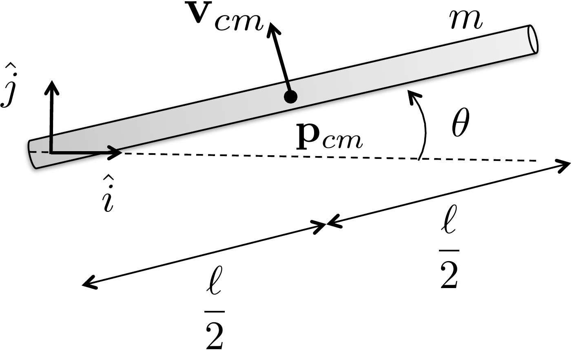
Use this geometry to identify the
center-of-mass position and the angular velocity before deriving kinetic
energy.
Step 1. Center-of-mass position
Enter the horizontal
and vertical components of \(p_{cm}\).
The complete solution includes an animation
class and a simulation script. Before opening it, outline each component
separately.
These prompts are
ungraded. They are intended to connect the derivation to the
implementation code in the complete solution.
Complete solution
Figure 2.8. Single link robot arm. Compute the
velocity of the center of mass and the angular velocity about the center
of mass.
The first step is to define an inertial coordinate system as shown in
Figure 2.8. If the pivot point
is the origin of the coordinate system as shown in Figure 2.8, then the position of
the center of mass is \[\mathbf{p}_{cm}(t) =
\begin{pmatrix} \frac{\ell}{2}\cos\theta(t) \\
\frac{\ell}{2}\sin\theta(t) \\ 0 \end{pmatrix}.\] Differentiating
to obtain the velocity we get \[\mathbf{v}_{cm} = \frac{\ell}{2}\dot{\theta}
\begin{pmatrix} -\sin\theta \\ \cos\theta \\ 0 \end{pmatrix}.\]
The angular velocity about the center of mass is given by \[\boldsymbol{\omega} = \begin{pmatrix} 0 \\ 0 \\
\dot{\theta} \end{pmatrix}.\] Observe that \[\boldsymbol{\omega}^\top J \boldsymbol{\omega} =
\begin{pmatrix} 0 & 0 & \dot{\theta}\end{pmatrix}
\begin{pmatrix} J_x & -J_{xy} & -J_{xz} \\ -J_{xy} & J_y
& -J_{yz} \\ -J_{xz} & -J_{yz} & J_z \end{pmatrix}
\begin{pmatrix} 0 \\ 0 \\ \dot{\theta} \end{pmatrix} = J_z
\dot{\theta}^2,\] therefore we only need the moment of inertia
about the \(\hat{k}\) axis \(J_z\). From the inertia matrix for a thin
rod given in Equation 2.2, we
have that \(J_z=\frac{m\ell^2}{12}\).
Therefore, the kinetic energy of the single-link robot arm is \[\begin{aligned}
K &= \frac{1}{2} m \mathbf{v}_{cm}^\top \mathbf{v}_{cm} +
\frac{1}{2}\boldsymbol{\omega}^\top J_{cm} \boldsymbol{\omega} \\
&= \frac{1}{2} m \frac{\ell^2}{4}\dot{\theta}^2(\sin^2\theta +
\cos^2\theta) + \frac{1}{2}\dot{\theta}^2\frac{m\ell^2}{12} \\
&=\frac{1}{2}\frac{m\ell^2}{3}\dot{\theta}^2.
\end{aligned}\]
Throughout the book, we will demonstrate how to simulate the single
link robot arm using Python object-oriented code. The Python class that
animates the single link robot arm is shown below.
# 3rd-partyimport numpy as np# local (controlbook)from ..common.animator import MatplotlibAxisAnimatorclass ArmAnimator(MatplotlibAxisAnimator):""" By inheriting from MatplotlibAxisAnimator, this class has access to the matplotlib axis object via `self.ax`. This class just needs to implement the `setup_background()`, `setup_changing_objects()`, and `update_changing_objects()` methods. """def setup_background(self):self.length =1.0 lim =self.length *1.25self.ax.axis((-lim, lim, -lim, lim))self.ax.set_aspect("equal", "box") (baseline,) =self.ax.plot([0, self.length], [0, 0], "k--")def setup_changing_objects(self, x0, r0): theta0 = x0[0] x, y =self.get_arm_endpoints(theta0) (self.arm_line,) =self.ax.plot(x, y, linewidth=5, color="blue")def update_changing_objects(self, x, r): theta = x[0] x, y =self.get_arm_endpoints(theta)self.arm_line.set_xdata(x)self.arm_line.set_ydata(y)return (self.arm_line,)def get_arm_endpoints(self, theta): x = np.array([0, self.length * np.cos(theta)]) y = np.array([0, self.length * np.sin(theta)])return x, y
The Python code that implements the animation is given below.
# 3rd-partyimport numpy as np# local (controlbook)import case_studies.A_arm.params as Pfrom case_studies.A_arm.visualizer import ArmVisualizerfrom case_studies.common.signal_generator import SignalGenerator# initialize signals for generating datatheta_gen = SignalGenerator(amplitude=np.pi, frequency=0.1)tau_gen = SignalGenerator(amplitude=5, frequency=0.5)# initialize data storagex0 = np.zeros(2)x_hist = [x0]u_hist = []# loop over timetime = np.arange(start=0, stop=20, step=P.ts, dtype=np.float64)for t in time[1:]:# generate fake state and input data x = np.empty(2) x[0] = theta_gen.sin(t) x[1] = theta_gen.random(t) # velocity info can be anything for animation# inputs can be anything for animation u = np.array([tau_gen.sawtooth(t)])# store data for visualization x_hist.append(x) u_hist.append(u)# convert data to numpy arraysx_hist = np.array(x_hist)u_hist = np.array(u_hist)# visualize generated dataviz = ArmVisualizer(time, x_hist, u_hist)viz.animate() # may need to play with arguments to achieve desired animation speed
Complete simulation code for MATLAB, Python, and Simulink can be
downloaded at http://controlbook.byu.edu.
(a) Using the configuration variables \(z\)
and \(\theta\), write an expression for
the kinetic energy of the system.
(b) Referring to Appendices P.1, P.2, and P.3, write
a Python or MATLAB class, or a MATLAB function that creates an animation
of the inverted pendulum. Simulate the animation to display sinusoidal
variations on the configuration variables \(q=(z, \theta)^\top\).
Design
Study B guided exercise
Build the pendulum kinetic
energy
Use the geometry to identify positions, velocities,
and energy terms for the cart and rod.
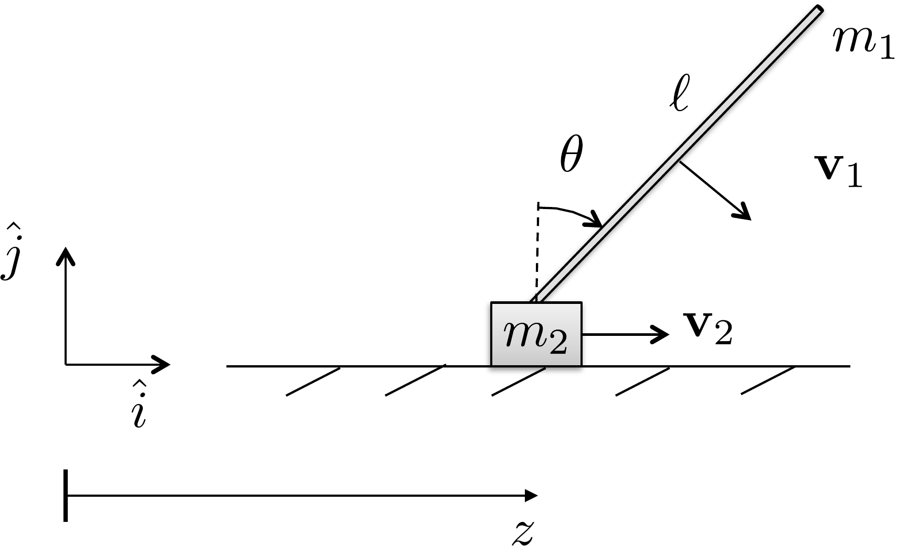
Use this geometry to identify the cart
position, rod center-of-mass position, and pendulum angular
velocity.
Step 1. Position variables
Show solution for Step
1
Answer: The rod center of mass
can be written as \(p_{cm}=(z+\ell/2\sin\theta,\;\ell/2\cos\theta)\); the
cart position is \(z\).
Step 2. Velocity variables
Show solution for Step
2
Answer: The rod velocity depends
on both cart translation and pendulum rotation; the cart velocity is
zdot.
Step 3.
Energy terms
Show solution for Step
3
Answer: The kinetic energy
combines cart translational energy, rod translational energy, and rod
rotational energy.
Pseudocode
The complete solution includes an animation
class and a simulation script. Before opening it, outline each component
separately.
These prompts are
ungraded. They are intended to connect the derivation to the
implementation code in the complete solution.
Complete solution
Figure 2.9. Pendulum on a cart. Compute the velocity
of the pendulum and of the cart.
Define the inertial coordinate frame as in Figure 2.9, with \(\hat{k}\) out of the page. The position of
the center of mass of the rod with mass \(m_1\) is given by \[\mathbf{p}_1 = \begin{pmatrix} z(t) +
\frac{\ell}{2} \sin\theta(t) \\ \frac{\ell}{2} \cos\theta(t) \\ 0
\end{pmatrix},\] and the horizontal position of the cart with
mass \(m_2\) is given by \[\mathbf{p}_2 = \begin{pmatrix} z(t) \\ 0 \\ 0
\end{pmatrix}.\] Differentiating to obtain the velocities of
\(m_1\) and \(m_2\) we obtain \[\begin{aligned}
\mathbf{v}_1 = \begin{pmatrix} \dot{z} +
\frac{\ell}{2}\dot{\theta}\cos\theta \\
-\frac{\ell}{2}\dot{\theta}\sin\theta \\ 0 \end{pmatrix}, \qquad\qquad
\mathbf{v}_2 = \begin{pmatrix} \dot{z} \\ 0 \\ 0 \end{pmatrix}.
\end{aligned}\] We are modeling the cart as a point mass and the
rod as being infinitely thin. Therefore, the kinetic energy of the rod
is the summation of its translational and rotational kinetic energy
about the center of mass. The total kinetic energy of the system is
given by \[\begin{aligned}
K &= \frac{1}{2} m_1 \mathbf{v}_1^\top \mathbf{v}_1 + \frac{1}{2}
\boldsymbol{\omega}^\top J_{rod,cm} \boldsymbol{\omega} +
\frac{1}{2}m_2\mathbf{v}_2^\top \mathbf{v}_2 \notag\\
&= \frac{1}{2} m_1 \left[ (\dot{z} +
\frac{\ell}{2}\dot{\theta}\cos\theta)^2 +
(-\frac{\ell}{2}\dot{\theta}\sin\theta)^2 \right]
+ \frac{1}{2}\dot{\theta}^2 \frac{m_1 \ell^2}{12}
+ \frac{1}{2}m_2\dot{z}^2 \notag\\
&= \frac{1}{2} m_1 \left[ \dot{z}^2 +
2\frac{\ell}{2}\dot{z}\dot{\theta}\cos\theta +
\frac{\ell^2}{4}\dot{\theta}^2\cos^2\theta +
\frac{\ell^2}{4}\dot{\theta}^2\sin^2\theta \right] \notag
\\&\qquad
+ \frac{1}{2}\dot{\theta}^2 \frac{m_1 \ell^2}{12} +
\frac{1}{2}m_2\dot{z}^2 \notag\\
&= \frac{1}{2}(m_1+m_2)\dot{z}^2 +
\frac{1}{2}m_1\frac{\ell^2}{3}\dot{\theta}^2 +
m_1\frac{\ell}{2}\dot{z}\dot{\theta}\cos\theta.
\label{eq:pendulum_kinetic_energy}
\end{aligned}\]
Throughout the book, we will demonstrate how to simulate the pendulum
on a cart using Python code. The Python class that animates the system
is shown below.
The Python code that implements the animation functionality is given
below.
# 3rd-partyimport numpy as np# local (controlbook)import case_studies.B_pendulum.params as Pfrom case_studies.B_pendulum.visualizer import CartPendulumVisualizerfrom case_studies.common.signal_generator import SignalGenerator# initialize signals for generating dataz_gen = SignalGenerator(amplitude=0.5, frequency=0.1)theta_gen = SignalGenerator(amplitude=np.radians(45), frequency=0.5)f_gen = SignalGenerator(amplitude=5.0, frequency=0.5)# initialize data storagex0 = np.array([P.z0, P.theta0, P.zdot0, P.thetadot0])x_hist = [x0]u_hist = []# loop over timetime = np.arange(start=0, stop=20, step=P.ts, dtype=np.float64)for t in time[1:]:# generate fake state and input data x = np.empty_like(x0) x[0] = z_gen.sin(t) x[1] = theta_gen.sin(t) x[2] = z_gen.sawtooth(t) # velocity info can be anything for animation x[3] = theta_gen.sawtooth(t) # velocity info can be anything for animation# inputs can be anything for animation u = np.array([f_gen.square(t)])# store data for visualization x_hist.append(x) u_hist.append(u)# convert data to numpy arraysx_hist = np.array(x_hist)u_hist = np.array(u_hist)# visualize generated dataviz = CartPendulumVisualizer(time, x_hist, u_hist)viz.animate() # may need to play with arguments to achieve desired animation speed
Complete simulation code for MATLAB, Python, and Simulink can be
downloaded at http://controlbook.byu.edu.
(a) Using the configuration variables \(\theta\) and \(\phi\), write an expression for the kinetic
energy of the system.
(b) Referring to Appendices P.1, P.2, and P.3, write
a Python or MATLAB class, or a MATLAB function that creates an animation
of the satellite. Simulate the animation to display sinusoidal
variations on the configuration variables \(q=(\theta, \phi)^\top\).
Design Study C guided exercise
Build the satellite kinetic energy
The satellite model
has two rotational inertias: the body inertia \(J_s\) associated with \(\theta\), and the panel inertia \(J_p\) associated with \(\phi\).
Use
inertial angular rates for kinetic energy. The relative deflection
\(\phi-\theta\) appears in spring
and damping terms later.
Step 1. Match inertias to coordinates
Show solution for Step
1
Answer:\(J_s\) multiplies \(\dot{\theta}^2\), and \(J_p\) multiplies \(\dot{\phi}^2\).
Step 2.
Identify the kinetic-energy terms
Show solution for Step
2
Answer: There are two rotational
kinetic-energy terms. The relative rate \(\dot{\phi}-\dot{\theta}\) is important for damping,
but it is not used as a replacement for the inertial panel kinetic
energy.
The complete solution includes satellite
animation code. Before opening it, outline how an animation should
update the body and panel orientations from \(\theta(t)\) and \(\phi(t)\).
This prompt
is ungraded. It connects the energy model to the animation code in the
complete solution.
Complete solution
Since the satellite consists of two rotational masses, the kinetic
energy is the sum of the rotational kinetic energy of each mass.
Therefore, the kinetic energy is given by \[\label{eq:satellite_kinetic_energy}
K = \frac{1}{2} J_s \dot{\theta}^2 + \frac{1}{2} J_p
\dot{\phi}^2.\]
Throughout the book, we will demonstrate how to simulate the
satellite using Python code. The code that animates the satellite and
implements the animation is given below.
# 3rd-partyimport numpy as npimport matplotlib.patches as mpatches# local (controlbook)from ..common.animator import MatplotlibAxisAnimatorclass SatelliteAnimator(MatplotlibAxisAnimator):def setup_background(self):self.length =1.0self.width =0.3 span =self.length *2 (horizontal_line,) =self.ax.plot([-span, span], [0, 0], "k--")self.ax.set_aspect("equal", "box")self.ax.set_xlim(-span, span)self.ax.set_ylim(-span, span)# define points for custom polygon shape for the satellite baseself.base_pts = np.array( [ [self.width /2.0, -self.width /2.0], [self.width /2.0, -self.width /6.0], [self.width /2.0+self.width /6.0, -self.width /6.0], [self.width /2.0+self.width /6.0, self.width /6.0], [self.width /2.0, self.width /6.0], [self.width /2.0, self.width /2.0], [-self.width /2.0, self.width /2.0], [-self.width /2.0, self.width /6.0], [-self.width /2.0-self.width /6.0, self.width /6.0], [-self.width /2.0-self.width /6.0, -self.width /6.0], [-self.width /2.0, -self.width /6.0], [-self.width /2.0, -self.width /2.0], ] ).T# define points for the satellite panelsself.panel_pts = np.array([[-self.length, self.length], [0.0, 0.0]])def setup_changing_objects(self, x0, r0): theta0, phi0 = x0[:2]# create the base of the satelliteself.base = mpatches.Polygon( xy=self.get_base_xy(theta0), facecolor="blue", edgecolor="black", )self.ax.add_patch(self.base)# create the satellite panels x, y =self.get_panel_data(phi0) (self.panel,) =self.ax.plot(x, y, lw=4, c="green")def update_changing_objects(self, x, r): theta, phi = x[:2]self.base.set_xy(self.get_base_xy(theta))self.panel.set_data(self.get_panel_data(phi))return (self.base, self.panel)def get_base_xy(self, theta):""" Return the base coordinates of the satellite in the rotated frame. """ R =self.get_rotation_matrix(theta) rotated_base_pts = R @self.base_ptsreturn rotated_base_pts.Tdef get_panel_data(self, phi):""" Return the panel coordinates of the satellite in the rotated frame. """ R =self.get_rotation_matrix(phi) rotated_panel_pts = R @self.panel_pts x, y = rotated_panel_ptsreturn x, ydef get_rotation_matrix(self, angle):""" Return the 2D rotation matrix for a given angle in radians. Note that the minus sign is used on the lower left sin term because theta and phi are defined as positive angles in the clockwise direction. """ c = np.cos(angle) s = np.sin(angle)return np.array([[c, s], [-s, c]])
The Python code that implements the animation is given below.
# 3rd-partyimport numpy as np# local (controlbook)import case_studies.C_satellite.params as Pfrom case_studies.C_satellite.visualizer import SatelliteVisualizerfrom case_studies.common.signal_generator import SignalGenerator# initialize signals for generating datatheta_gen = SignalGenerator(amplitude=np.pi, frequency=0.1)phi_gen = SignalGenerator(amplitude=np.radians(45), frequency=0.1)tau_gen = SignalGenerator(amplitude=5.0, frequency=0.5)# initialize data storagex0 = np.array([P.theta0, P.phi0, P.thetadot0, P.phidot0])x_hist = [x0]u_hist = []# loop over timetime = np.arange(start=0, stop=20, step=P.ts, dtype=np.float64)for t in time[1:]:# generate fake state and input data x = np.zeros_like(x0) x[0] = theta_gen.sin(t) x[1] = phi_gen.sin(t)# velocity info can be anything for animation x[2:] = [theta_gen.sawtooth(t), phi_gen.sawtooth(t)]# inputs can be anything for animation u = np.array([tau_gen.square(t)])# store data for visualization x_hist.append(x) u_hist.append(u)# convert data to numpy arraysx_hist = np.array(x_hist)u_hist = np.array(u_hist)# visualize generated dataviz = SatelliteVisualizer(time, x_hist, u_hist)viz.animate() # may need to play with arguments to achieve desired animation speed
Complete simulation code for MATLAB, Python, and Simulink can be
downloaded at http://controlbook.byu.edu.
2.5 Interactive Inertia Check
Chapter 2 activity
Mass distribution and kinetic energy
Move two equal point masses away from the rotation axis. The moment of
inertia and rotational kinetic energy increase even when the total mass
stays fixed.
Figure 1.1. The sliders control two point masses, their radius from
the center, the offset rotation axis, translational velocity, and
angular velocity.
Computed values
Each mass: kg;
radius: m;
offset: m
I = 2 m r2 =
kg m2
Ioffset = I + 2 m d2 =
kg m2
Ktrans = ½ (2m) v2 =
J
Krot = ½ Ioffset ω2 =
J
The parallel-axis theorem adds md2 for each point mass when
the axis is shifted by distance d.
2.6 Knowledge Check
Q1. Mass
distribution
Moving mass farther from
a rotation axis usually does what to moment of inertia?
Q2.
Translational energy
Translational
kinetic energy depends directly on:
Q3. Point-mass inertia
A point mass m = 2 kg is 1.414 m from an axis. Enter the inertia of this
point mass.
Show solution
Answer: Approximately 4 kg m2, since
2(1.414)2 is about 4.
Q4. Rotational kinetic energy
If I = 2 kg m2 and ω = 3 rad/s, enter the rotational kinetic
energy.
Show solution
Answer: 9 J because ½(2)(32) = 9.
Q5. Toy system: warehouse cart and flywheel
A 6 kg cart moves at 1.5 m/s while a flywheel with I = 0.8 kg
m2 spins at ω = 5 rad/s. Enter the total kinetic energy.
Compute the total kinetic energy, by computing both the cart’s
translational kinetic energy and the flywheel’s rotational kinetic
energy.
A 0.4 kg puck slides at 3 m/s while a small rotor sitting on top of the
puck spins at ω = 20 rad/s. The rotor has a moment of inertia of I =
0.05 kg m2. Enter the total kinetic energy.
The puck translates to the right, while the rotor spins about its own
vertical axle. Add the puck’s translational energy and the rotor’s
rotational energy.
Two equal point masses rotate with the same
angular velocity. Which change most directly increases rotational
kinetic energy?
Q8. Combined kinetic
energy
A cart of mass m translates at
speed v while a disk on the cart spins with inertia J and angular speed
ω. Which kinetic energy expression includes both effects?
Q9. Parallel-axis theorem
When is the parallel-axis theorem
needed?
Q10. Inertia matrix meaning
What does a diagonal entry of an inertia matrix
represent?
2.7 Notes and References
The inertia matrix in
Equation 2.3
is computed about the center of mass of the object. When an object is
composed of several connected rigid bodies and the inertia matrix is
known for each body, the parallel axis theorem provides a convenient
way to find the total inertia about the center of mass. The theorem
states that if \(J_{cm}\) is the
inertia matrix about the center of mass, then the inertia matrix about a
point located at vector \(\mathbf{r}\)
from the center of mass is \[J(\mathbf{r}) =
J_{cm} + m\left(\mathbf{r}^\top\mathbf{r} I_3 -
\mathbf{r}\mathbf{r}^\top\right).\] For the moment of inertia
about a single axis, where the axis is shifted from the center of mass
by distance \(d\), the parallel axis
theorem implies that \[I(d) = I_{cm} +
md^2.\]
3 The Euler-Lagrange Equations
3.1 Theory
In this chapter we show how to define the potential energy for simple
mechanical systems and how to define the generalized forces. The
Euler-Lagrange equations given in
Equation 1.8
can then be used to derive the equations of motion for the system.
3.1.1 Potential Energy
In this book we will be concerned with two sources of potential
energy: potential energy due
to gravity and potential energy due to springs.
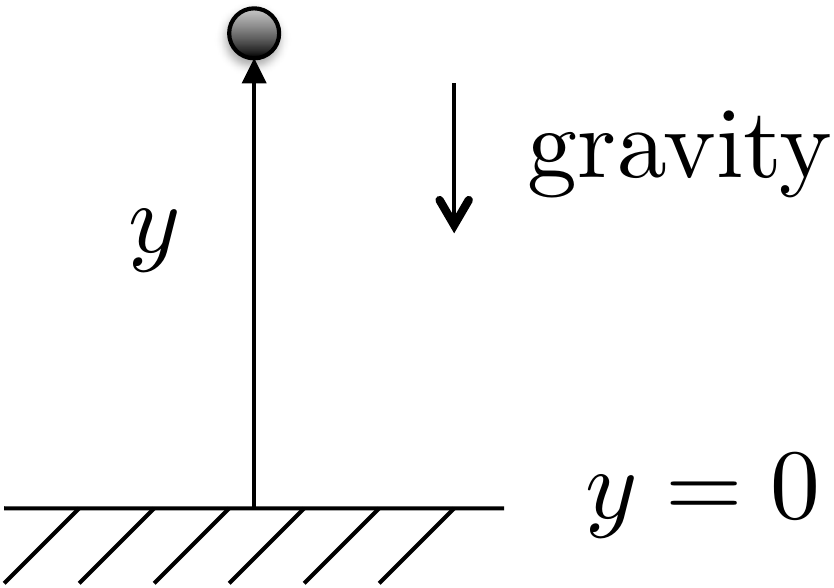
Figure 3.1. The potential energy of a unit mass m in gravity is given by P = mgy.
Consider a point mass \(m\) in a gravity field that is at position
\(y\) as shown in
Fig.3.1. The potential energy
is given by \[P = mgy + P_0,\] where
\(P_0\) is the potential energy when
\(y=0\). Typically, we desire an
expression for potential energy that is zero when the configuration
variables are zero.
The second source of potential energy is from translational and
rotational springs.
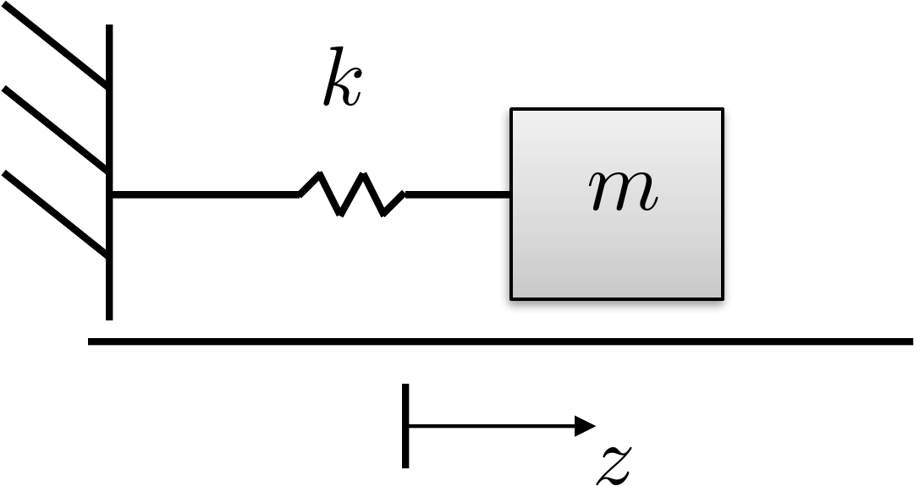
Figure 3.2. A spring stretched by distance z stores potential
energy.
The spring shown in
Fig.3.2 is stretched from rest
by a distance of \(z\). The potential
energy of a linear stretched/compressed spring is given by \[P = \frac{1}{2}k z^2,\] where \(k\) is the spring constant. Similarly, for
a rotational spring, the potential energy is given by \(P=\frac{1}{2}k \theta^2\), where \(\theta\) is the rotational angle and \(\theta=0\) is the angle at which the
rotational spring is at rest.
3.1.2 Generalized Coordinates and
Generalized Forces
The generalized coordinates are the minimum set of
configuration variables. For example, for the mass-spring-damper system
shown in
Fig.2.6, the generalized
coordinates are \(\mathbf{q}=(z_1,
z_2)^\top\). For the single-link robot arm shown in
Fig.2.8, the generalized
coordinate is \(\mathbf{q}=\theta\).
For the spinning dumbbell system shown in
Fig.2.7, and the pendulum on a
cart system shown in
Fig.2.9, the generalized
coordinates are \(\mathbf{q}=(z,
\theta)^\top\). Finally, for the satellite system shown in
Fig.1.4, the generalized
coordinates are \(\mathbf{q}=(\theta,\phi)^\top\).
The generalized forces are the
nonconservative forces and torques acting along each generalized
coordinate. In other words, they are the applied forces and torques on
the system. For example, for the mass-spring-damper system shown in
Fig.2.6, the generalized
force acting along \(z_1\) is zero and
the generalized force acting along \(z_2\) is the applied force \(F\). Therefore, the generalized force is
\(\boldsymbol{\tau} = (0,
F)^\top\).
3.1.3 Damping Forces and
Torques
Friction and applied dampers also exert forces on the system. Damping
forces are externally applied
forces that are proportional to the velocity or angular velocity of the
system. For example, in the mass-spring-damper system shown in
Fig.2.6, the damping force
acting along \(z_1\) is due to the
first damper and the damper between the two masses and is given by \(-b_1\dot{z}_1-b_2(\dot{z}_1-\dot{z}_2)\).
The damping acting along \(z_2\) is
given by \(-b_2(\dot{z}_2-\dot{z}_1)\).
Therefore, the damping force on the system is given by \[-B\dot{\mathbf{q}}
= -\begin{pmatrix} b_1+b_2 & -b_2 \\ -b_2 & b_2
\end{pmatrix} \begin{pmatrix} \dot{z}_1 \\ \dot{z}_2 \end{pmatrix}
= \begin{pmatrix} -b_1\dot{z}_1-b_2(\dot{z}_1-\dot{z}_2) \\
-b_2(\dot{z}_2-\dot{z}_1) \end{pmatrix}.\]
3.1.4 Euler-Lagrange Equations
The equations of motion are given by the Euler-Lagrange
equations. Let the
Lagrangian be given by \[L(\mathbf{q},\dot{\mathbf{q}}) =
K(\mathbf{q},\dot{\mathbf{q}}) - P(\mathbf{q}),\] where \(K(\mathbf{q},\dot{\mathbf{q}})\) is the
kinetic energy of the system and is, in general, a function of the
generalized coordinates and the generalized velocities, and \(P(\mathbf{q})\) is the potential energy
which is, in general, a function of the generalized coordinates. As
shown in Equation 1.8
the Euler-Lagrange equations are given in vector form as \[\frac{d}{dt}\left(\frac{\partial
L(\mathbf{q},\dot{\mathbf{q}})}{\partial \dot{\mathbf{q}}}\right) -
\frac{\partial L(\mathbf{q},\dot{\mathbf{q}})}{\partial \mathbf{q}} =
\boldsymbol{\tau}-B \dot{\mathbf{q}}.\]
Derive the equations of motion using the Euler-Lagrange
equations.
Referring to Appendices P.1, P.2, and P.3, write
a class or s-function that implements the equations of motion. Simulate
the system using a variable torque input. The output should connect to
the animation function developed in homework A.2.
Design Study A guided exercise
Build the arm equation of motion
Use the kinetic
energy from Chapter 2 and gravity potential energy for the center of
mass.
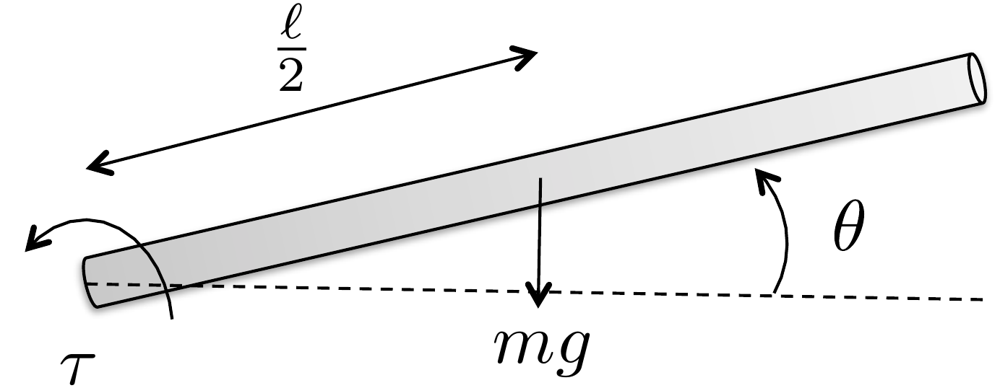
Use this geometry to relate the
center-of-mass height to \(\theta\)
before applying Euler-Lagrange.
Step 1. Potential energy
Show solution for Step
1
Answer:\(P=P_0+mg\ell\sin\theta/2\).
Step 2. Generalized coordinate and force
Show solution for
Step 2
Answer:\(q=\theta\), the applied torque is \(\tau\), and damping contributes \(-b\dot{\theta}\).
Step
3. Equation of motion
Enter the multiplier on \(\ddot{\theta}\) in the final
equation.
The complete solution includes a dynamics
class and a simulation script. Before opening it, outline each component
separately.
These prompts
are ungraded. They are intended to connect the Euler-Lagrange equation
to the implementation code in the complete solution.
Complete solution
Figure 3.3. Energy calculation for the single-link
robot arm
Let \(P_0\) be the potential when
\(\theta=0\). The height of the center
of mass is \(\ell/2 \sin\theta\), which
is zero when \(\theta=0\). Accordingly,
the potential energy is given by \[P = P_0 +
mg \frac{\ell}{2} \sin\theta.\] The generalized coordinate is
\[q_1= \theta.\] The generalized force
is \[\tau_1=\tau,\] and the
generalized damping is \[-B\dot{\mathbf{q}} =
- b\dot{\theta}.\] From Homework 3.1.2 we found
that the kinetic energy is given by \[K=\frac{1}{2}\left(\frac{m\ell^2}{3}\right)\dot{\theta}^2.\]
Therefore, the Lagrangian is \[L = K - P =
\frac{1}{2}\left(\frac{m\ell^2}{3}\right)\dot{\theta}^2 - P_0 -
mg\frac{\ell}{2} \sin\theta.\] For this case, the Euler-Lagrange
equation is given by \[\frac{d}{dt}\left(\frac{\partial L}{\partial
\dot{\theta}}\right) - \frac{\partial L}{\partial \theta} = \tau_1 -
b\dot{\theta}\] where \[\begin{aligned}
\frac{d}{dt}\left(\frac{\partial L}{\partial \dot{\theta}}\right) &=
\frac{d}{dt}\left(\frac{m\ell^2}{3}\dot{\theta}\right) =
\frac{m\ell^2}{3}\ddot{\theta} \\
\frac{\partial L}{\partial \theta} &= -mg\frac{\ell}{2}\cos\theta.
\end{aligned}\] Therefore, the Euler-Lagrange equation becomes
\[\label{eq:sm_arm_nonlinear_eom}
\frac{m\ell^2}{3}\ddot{\theta} + mg\frac{\ell}{2}\cos\theta = \tau -
b\dot{\theta}.\]
A Python class that implements the dynamics of the single link robot
arm is shown below.
# 3rd-partyimport numpy as np# local (controlbook)from . import params as Pfrom ..common.dynamics_base import DynamicsBaseclass ArmDynamics(DynamicsBase):def__init__(self, alpha=0.0):super().__init__(# Initial state conditions state0=np.array([P.theta0, P.thetadot0]),# Input torque limits u_max=P.tau_max, u_min=-P.tau_max,# Time step for integration dt=P.ts, )# see params.py/textbook for details on these parametersself.m =self.randomize_parameter(P.m, alpha)self.ell =self.randomize_parameter(P.ell, alpha)self.b =self.randomize_parameter(P.b, alpha)self.g = P.g # gravity constant is well known, so not randomizeddef f(self, x, u):# Return xdot = f(x,u), the system state update equations# re-label states for readability theta, thetadot = x.flatten() torque = u.flatten()[0] inertia =self.m *self.ell**2/3 friction =self.b * thetadot weight_moment =self.m *self.g *self.ell /2.0* np.cos(theta) thetaddot = (torque - friction - weight_moment) / inertia xdot = np.array([thetadot, thetaddot])return xdotdef h(self):# return the output equations# could also use input u if needed theta =self.state[0] y = np.array([theta])return y
Code that simulates the dynamics is given below.
# 3rd-partyimport numpy as np# local (controlbook)import case_studies.A_arm.params as Pfrom case_studies.A_arm.dynamics import ArmDynamicsfrom case_studies.A_arm.visualizer import ArmVisualizerfrom case_studies.common.signal_generator import SignalGenerator# initialize system and input generatorarm = ArmDynamics()torque_gen = SignalGenerator(amplitude=0.2, frequency=0.05)# initialize data storagex_hist = [arm.state]u_hist = []# loop over timetime = np.arange(start=0.0, stop=50.0, step=P.ts, dtype=np.float64)for t in time[1:]:# generate input signal u = np.array([torque_gen.square(t)])# simulate system response y = arm.update(u)# store data for visualization u_hist.append(u) x_hist.append(arm.state)# convert data to numpy arraysx_hist = np.array(x_hist)u_hist = np.array(u_hist)# visualizeviz = ArmVisualizer(time, x_hist, u_hist)viz.animate() # could also just call viz.plot()
Complete simulation code for MATLAB, Python, and Simulink can be
downloaded at http://controlbook.byu.edu.
Derive the equations of motion using the Euler-Lagrange
equations.
Referring to Appendices P.1, P.2, and P.3, write
a class for s-function that implements the equations of motion. Simulate
the system using a variable force on the cart as an input. The output
should connect to the animation function developed in homework B.2.
Design
Study B guided exercise
Assemble the pendulum equations of
motion
Use energy, generalized coordinates, and generalized
forces to form the coupled nonlinear equations.
Use this
setup to connect gravity, force, cart motion, and pendulum angle before
applying Euler-Lagrange.
Step 1. Potential energy
Show solution for Step
1
Answer: The rod center of mass
height gives P = P0 + m1 g ell/2 (cos(theta)-1).
Step 2. Generalized coordinates
Show solution for
Step 2
Answer: The generalized
coordinates are z and theta, with generalized force (F,
0)\^T.
Step 3.
Coupled dynamics structure
Show
solution for Step 3
Answer: The
result is a 2 by 2 coupled mass-matrix equation; damping acts in the z
direction.
Pseudocode
The complete solution includes a dynamics
class and a simulation script. Before opening it, outline each component
separately.
These
prompts are ungraded. They are intended to connect the derivation to the
implementation code in the complete solution.
Complete solution
Figure 3.4. Pendulum on a cart.
Let \(P_0\) be the potential energy
when \(\theta=0\) and \(z=0\). Then the potential energy of the
pendulum system is given by \[P = P_0 + m_1 g
\frac{\ell}{2} (\cos\theta-1),\] where \(\frac{\ell}{2}\cos\theta\) is the height of
the center of mass of the rod. Note that the potential energy decreases
as \(\theta\) increases.
The generalized coordinates for the system are the horizontal
position \(z\) and the angle \(\theta\). Therefore, let \(\mathbf{q} = (z, \theta)^\top\).
The external force acting in the direction of \(z\) is \(\tau_1 =
F\), and the external torque acting in the direction of \(\theta\) is \(\tau_2=0\). Therefore, the generalized
forces are \(\boldsymbol{\tau}=(F,
0)^\top\). A damping term acts in the direction of \(z\), which implies that \(-B\dot{\mathbf{q}} = (-b\dot{z},
0)^\top\).
Using Equation 2.4,
the kinetic energy can be written in terms of the generalized
coordinates as \[\begin{aligned}
K(\mathbf{q},\dot{\mathbf{q}}) &= \frac{1}{2}(m_1+m_2)\dot{z}^2 +
\frac{1}{2}m_1\frac{\ell^2}{3}\dot{\theta}^2 +
m_1\frac{\ell}{2}\dot{z}\dot{\theta}\cos\theta \\
&= \frac{1}{2}(m_1+m_2)\dot{q}_1^2 +
\frac{1}{2}m_1\frac{\ell^2}{3}\dot{q}_2^2 +
m_1\frac{\ell}{2}\dot{q}_1\dot{q}_2\cos q_2,
\end{aligned}\] and the potential energy can be written as \[\begin{aligned}
P(\mathbf{q}) &= P_0 + m_1 g \frac{\ell}{2}(\cos\theta-1)\\
&= P_0 + m_1 g \frac{\ell}{2}(\cos q_2-1).
\end{aligned}\] The Lagrangian is therefore given by \[L(\mathbf{q},\dot{\mathbf{q}}) =
\frac{1}{2}(m_1+m_2)\dot{q}_1^2 +
\frac{1}{2}m_1\frac{\ell^2}{3}\dot{q}_2^2 +
m_1\frac{\ell}{2}\dot{q}_1\dot{q}_2\cos q_2- P_0 - m_1 g
\frac{\ell}{2}(\cos q_2-1).\] Therefore \[\begin{aligned}
\frac{\partial L}{\partial\dot{\mathbf{q}}} &= \begin{pmatrix}
(m_1+m_2)\dot{z} + m_1\frac{\ell}{2}\dot{\theta}\cos\theta \\
m_1\frac{\ell^2}{3}\dot{\theta} + m_1\frac{\ell}{2}\dot{z}\cos\theta
\end{pmatrix} \\
\frac{\partial L}{\partial\mathbf{q}} &= \begin{pmatrix}
0 \\ -m_1\frac{\ell}{2}\dot{z}\dot{\theta}\sin\theta + m_1 g
\frac{\ell}{2} \sin\theta
\end{pmatrix}.
\end{aligned}\] Differentiating \(\frac{\partial L}{\partial
\dot{\mathbf{q}}}\) with respect to time gives \[\frac{d}{dt}\left(\frac{\partial L}{\partial
\dot{\mathbf{q}}}\right) = \begin{pmatrix}
(m_1+m_2)\ddot{z} + m_1 \frac{\ell}{2} \ddot{\theta}\cos\theta - m_1
\frac{\ell}{2} \dot{\theta}^2\sin\theta \\
m_1 \frac{\ell^2}{3} \ddot{\theta} + m_1 \frac{\ell}{2}
\ddot{z}\cos\theta - m_1 \frac{\ell}{2} \dot{z}\dot{\theta}\sin\theta
\end{pmatrix}.\] Therefore, the Euler-Lagrange equation \[\frac{d}{dt}\left(\frac{\partial
L}{\partial\dot{\mathbf{q}}} \right) - \frac{\partial L}{\partial
\mathbf{q}} = \boldsymbol{\tau}-B\dot{\mathbf{q}}\] gives \[\begin{aligned}
(m_1+m_2)\ddot{z} + m_1 \frac{\ell}{2} \ddot{\theta}\cos\theta - m_1
\frac{\ell}{2} \dot{\theta}^2\sin\theta &= F - b\dot{z} \\
m_1 \frac{\ell^2}{3} \ddot{\theta} + m_1 \frac{\ell}{2}
\ddot{z}\cos\theta - m_1 \frac{\ell}{2} \dot{z}\dot{\theta}\sin\theta +
m_1\frac{\ell}{2}\dot{z}\dot{\theta}\sin\theta - m_1 g \frac{\ell}{2}
\sin\theta &= 0.
\end{aligned}\] Simplifying and moving all second-order
derivatives to the left-hand side, and all other terms to the right-hand
side gives \[\begin{pmatrix}
(m_1+m_2)\ddot{z} + m_1 \frac{\ell}{2} \ddot{\theta}\cos\theta \\
m_1 \frac{\ell^2}{3} \ddot{\theta} + m_1 \frac{\ell}{2}
\ddot{z}\cos\theta
\end{pmatrix}
= \begin{pmatrix} m_1 \frac{\ell}{2} \dot{\theta}^2\sin\theta + F
-b\dot{z} \\ m_1 g \frac{\ell}{2} \sin\theta \end{pmatrix}.\]
Using matrix notation, this equation can be rearranged to isolate the
second-order derivatives on the left-hand side as \[\label{eq:pendulum_sim_model}
\begin{pmatrix}
(m_1+m_2) & m_1 \frac{\ell}{2} \cos\theta \\
m_1 \frac{\ell}{2} \cos\theta & m_1 \frac{\ell^2}{3}
\end{pmatrix} \begin{pmatrix}\ddot{z} \\ \ddot{\theta} \end{pmatrix}
= \begin{pmatrix} m_1 \frac{\ell}{2} \dot{\theta}^2\sin\theta + F
-b\dot{z} \\ m_1 g \frac{\ell}{2} \sin\theta \end{pmatrix}.\]
Equation 3.2
represents the simulation model for the pendulum on a cart system.
A Python class that implements the dynamics of the pendulum is shown
below
# 3rd-partyimport numpy as np# local (controlbook)from . import params as Pfrom ..common.dynamics_base import DynamicsBaseclass CartPendulumDynamics(DynamicsBase):def__init__(self, alpha=0.0):super().__init__(# Initial state conditions state0=np.array([P.z0, P.theta0, P.zdot0, P.thetadot0]),# Input force limits u_max=P.force_max, u_min=-P.force_max,# Time step for integration dt=P.ts, )# see params.py/textbook for details on these parameters# parameter randomization is used after Chapter TODO:# you do not need to include it before thenself.m1 =self.randomize_parameter(P.m1, alpha) # pendulumself.m2 =self.randomize_parameter(P.m2, alpha) # cartself.ell =self.randomize_parameter(P.ell, alpha)self.b =self.randomize_parameter(P.b, alpha)self.g = P.g # gravity constant is well known, so not randomizeddef f(self, x, u):""" Return xdot = f(x,u). """# re-label states and inputs for readability z, theta, zdot, thetadot = x.flatten() force = u.flatten()[0]# TODO: decide whether to label terms like this moment_arm =self.m1 *self.ell /2.0 mass =self.m1 +self.m2 rotational_inertia =self.m1 *self.ell**2/3 M12 = moment_arm * np.cos(theta) M = np.array([[mass, M12], # fmt: skip [M12, rotational_inertia]]) # fmt: skip friction =self.b * zdot weight_moment = moment_arm *self.g * np.sin(theta) tmp = moment_arm * thetadot**2* np.sin(theta) c = np.array([tmp + force - friction, weight_moment]) zddot, thetaddot = np.linalg.solve(M, c) xdot = np.array([zdot, thetadot, zddot, thetaddot])return xdotdef h(self):""" Return the output y = h(x). """# y = P.Cm @ self.state y =self.state[:2].copy() # measure position states onlyreturn y
The Python code that simulates the dynamics is given below.
# 3rd-partyimport numpy as np# local (controlbook)import case_studies.B_pendulum.params as Pfrom case_studies.B_pendulum.dynamics import CartPendulumDynamicsfrom case_studies.B_pendulum.visualizer import CartPendulumVisualizerfrom case_studies.common.signal_generator import SignalGenerator# initialize system and input generatorpendulum = CartPendulumDynamics()force_gen = SignalGenerator(amplitude=1.0, frequency=1.0)# initialize data storagex_hist = [pendulum.state]u_hist = []# loop over timetime = np.arange(start=0.0, stop=15.0, step=P.ts, dtype=np.float64)for t in time[1:]:# generate input signal u = np.array([force_gen.sin(t)])# simulate system response y = pendulum.update(u)# store data for visualization u_hist.append(u) x_hist.append(pendulum.state)# convert data to numpy arraysx_hist = np.array(x_hist)u_hist = np.array(u_hist)# visualizeviz = CartPendulumVisualizer(time, x_hist, u_hist)viz.animate() # could also just call viz.plot()
Complete simulation code for MATLAB, Python, and Simulink can be
downloaded at http://controlbook.byu.edu.
Derive the equations of motion using the Euler-Lagrange
equations.
Referring to Appendices P.1, P.2, and P.3, write
a class or s-function that implements the equations of motion. Simulate
the system using a variable torque on the body as an input. The output
should connect to the animation function developed in homework C.2.
Design Study C guided exercise
Assemble the satellite equations of motion
Use the
torsional spring, relative damping, body torque, and two angular
coordinates to form the coupled satellite-panel equations.
The
spring and damper act on relative motion between the body and panel,
while the actuator torque is applied only to the body.
Step 1.
Potential energy
Show solution for Step
1
Answer:\(P=\frac{1}{2}k(\phi-\theta)^2\). The squared term
means \(\theta-\phi\) gives the
same stored energy.
Step 2. Generalized coordinates and input
Show solution for
Step 2
Answer:\(q=(\theta,\phi)^T\), and the generalized force is
\((\tau,0)^T\).
Step
3. Relative damping
Show solution for Step
3
Answer: The body equation
contains \(-b(\dot{\theta}-\dot{\phi})\), and the panel equation
contains \(-b(\dot{\phi}-\dot{\theta})\).
Step 4.
Coupled equation structure
Show
solution for Step 4
Answer: The
equations form a 2 by 2 second-order model. Torque appears directly in
the \(\theta\) equation; the panel
moves through spring and damping coupling.
Pseudocode
The complete solution includes dynamics
code. Before opening it, outline how the code should compute \(\ddot{\theta}\) and \(\ddot{\phi}\) from state and torque.
This
prompt is ungraded. It connects the Euler-Lagrange equations to the
implementation code in the complete solution.
Complete solution
Figure 3.5. Satellite with flexible solar
panels.
The generalized coordinates for the satellite attitude control
problem are the angles \(\theta\) and
\(\phi\). Therefore, we define the
generalized coordinates as \(\mathbf{q}=(\theta, \phi)^\top\). We will
assume the ability to apply torque on the main body (\(\theta\)) of the satellite, but not on the
solar panel. Therefore, the generalized force is \(\boldsymbol{\tau} = (\tau, 0)^\top\). We
will model the dissipation (friction) forces as proportional to the
relative motion between the main body and the solar panel. Therefore,
the damping term is given by \[-B\dot{\mathbf{q}} =
\begin{pmatrix}-b(\dot{\theta}-\dot{\phi}) \\
-b(\dot{\phi}-\dot{\theta}) \end{pmatrix} = -\begin{pmatrix} b & -b
\\ -b & b \end{pmatrix}\begin{pmatrix}\dot{\theta} \\
\dot{\phi}\end{pmatrix}.\]
Using Equation 2.5,
the kinetic energy can be written in terms of the generalized
coordinates as \[\begin{aligned}
K(\mathbf{q},\dot{\mathbf{q}}) &= \frac{1}{2} J_s \dot{\theta}^2 +
\frac{1}{2} J_p \dot{\phi}^2 \\
&= \frac{1}{2} J_s \dot{q}_1^2 + \frac{1}{2} J_p \dot{q}_2^2.
\end{aligned}\] The potential energy of the system is due to the
spring force between the base and the solar panel, and is given by \[\begin{aligned}
P(\mathbf{q}) &= \frac{1}{2} k (\phi-\theta)^2 \\
&= \frac{1}{2} k (q_2-q_1)^2,
\end{aligned}\] where \(k\) is
the spring constant. The Lagrangian is therefore given by \[L(\mathbf{q},\dot{\mathbf{q}}) = \frac{1}{2} J_s
\dot{q}_1^2 + \frac{1}{2} J_p \dot{q}_2^2 - \frac{1}{2} k
(q_2-q_1)^2.\] Therefore \[\begin{aligned}
\frac{\partial L}{\partial\dot{\mathbf{q}}} &= \begin{pmatrix}
J_s\dot{\theta} \\
J_p\dot{\phi}
\end{pmatrix} \\
\frac{\partial L}{\partial\mathbf{q}} &= \begin{pmatrix}
k(\phi-\theta) \\
-k(\phi-\theta)
\end{pmatrix}.
\end{aligned}\] Differentiating \(\frac{\partial L}{\partial
\dot{\mathbf{q}}}\) with respect to time gives \[\frac{d}{dt}\left(\frac{\partial L}{\partial
\dot{\mathbf{q}}}\right) = \begin{pmatrix}
J_s\ddot{\theta} \\
J_p\ddot{\phi}
\end{pmatrix}.\] Therefore, the Euler-Lagrange equation \[\frac{d}{dt}\left(\frac{\partial
L}{\partial\dot{\mathbf{q}}} \right) - \frac{\partial L}{\partial
\mathbf{q}} = \boldsymbol{\tau} -B\dot{\mathbf{q}}\] gives \[\begin{pmatrix}
J_s\ddot{\theta} - k(\phi-\theta) \\
J_p\ddot{\phi} + k(\phi-\theta)
\end{pmatrix}
= \begin{pmatrix} \tau \\ 0 \end{pmatrix} + \begin{pmatrix}
-b(\dot{\theta}-\dot{\phi}) \\ -b(\dot{\phi}-\dot{\theta})
\end{pmatrix}.\] Simplifying and moving all second-order
derivatives to the left-hand side, and all other terms to the right-hand
side gives \[\begin{pmatrix}
J_s\ddot{\theta} \\
J_p\ddot{\phi}
\end{pmatrix}
= \begin{pmatrix} \tau -b(\dot{\theta}-\dot{\phi})-k(\theta-\phi) \\
-b(\dot{\phi}-\dot{\theta}) - k(\phi-\theta) \end{pmatrix}.\]
Using matrix notation, this equation can be rearranged to isolate the
second-order derivatives on the left-hand side as \[\label{eq:satellite_sim_model}
\begin{pmatrix}
J_s & 0 \\
0 & J_p
\end{pmatrix} \begin{pmatrix}\ddot{\theta} \\ \ddot{\phi} \end{pmatrix}
= \begin{pmatrix} \tau-b(\dot{\theta}-\dot{\phi})-k(\theta-\phi) \\
-b(\dot{\phi}-\dot{\theta}) - k(\phi-\theta) \end{pmatrix}.\]
Equation 3.3
represents the simulation model for the simplified satellite system.
A Python class that implements the dynamics of the satellite is shown
below
# 3rd-partyimport numpy as np# local (controlbook)from . import params as Pfrom ..common.dynamics_base import DynamicsBaseclass SatelliteDynamics(DynamicsBase):def__init__(self, alpha=0.0):super().__init__(# Initial state conditions state0=np.array([P.theta0, P.phi0, P.thetadot0, P.phidot0]),# Input limits u_max=P.torque_max, u_min=-P.torque_max,# Time step for integration dt=P.ts, )# see params.py/textbook for details on these parameters# parameter randomization is used after Chapter TODO:# you do not need to include it before thenself.Js =self.randomize_parameter(P.Js, alpha)self.Jp =self.randomize_parameter(P.Jp, alpha)self.k =self.randomize_parameter(P.k, alpha)self.b =self.randomize_parameter(P.b, alpha)def f(self, x, u):""" Return xdot = f(x,u). """# re-label states and inputs for readability theta, phi, thetadot, phidot = x.flatten() tau = u.flatten()[0] friction =self.b * (thetadot - phidot) spring_torque =self.k * (theta - phi) M = np.diag([self.Js, self.Jp]) c = np.array([tau - friction - spring_torque, friction + spring_torque]) thetaddot, phiddot = np.linalg.solve(M, c) xdot = np.array([thetadot, phidot, thetaddot, phiddot])return xdotdef h(self):""" Return the output y = h(x). """ theta, phi =self.state[:2] y = np.array([theta, phi]) # measure position states onlyreturn y
Code that simulates the dynamics is given below.
# 3rd-partyimport numpy as np# local (controlbook)import case_studies.C_satellite.params as Pfrom case_studies.C_satellite.dynamics import SatelliteDynamicsfrom case_studies.C_satellite.visualizer import SatelliteVisualizerfrom case_studies.common.signal_generator import SignalGenerator# initialize system and input generatorsatellite = SatelliteDynamics()torque_gen = SignalGenerator(amplitude=0.1, frequency=0.1)# initialize data storagex_hist = [satellite.state]u_hist = []# loop over timetime = np.arange(start=0.0, stop=25.0, step=P.ts, dtype=np.float64)for t in time[1:]:# generate input signal u = np.array([torque_gen.sin(t)])# simulate system y = satellite.update(u)# store data for visualization u_hist.append(u) x_hist.append(satellite.state)# convert data to numpy arraysx_hist = np.array(x_hist)u_hist = np.array(u_hist)# visualizeviz = SatelliteVisualizer(time, x_hist, u_hist)viz.animate() # could also just call viz.plot()
Complete simulation code for MATLAB, Python, and Simulink can be
downloaded at http://controlbook.byu.edu.
3.5 Interactive Euler-Lagrange
Check
Chapter 3 activity
From energy to Lagrangian terms
Use a one-coordinate mass-spring example to connect kinetic energy,
potential energy, the Lagrangian L = K - P, and the spring force term.
Figure 1.2.
A one-coordinate mass-spring system with generalized coordinate q and
generalized velocity q.
Live equations
P(q) = ½ k q2 =
½()()2
= J
K(q) = ½ m
q2 =
½()()2
= J
L(q,q) = K - P =
J
dP⁄dq = k q =
N
3.6 Knowledge Check
Q1.
Lagrangian definition
The Lagrangian
is:
Q2. Generalized
coordinates
Generalized coordinates
should be:
Q3. Spring potential
For k = 4 and displacement q = 2, enter the potential energy P.
Show solution
Answer: 8 because P = ½kq2 =
½(4)(22) = 8.
Q4. Potential derivative
For P = ½kq2, with k = 3 and q = 2, enter
dP⁄dq.
Show solution
Answer: 6 because
dP⁄dq = kq =
(3)(2).
Q5. Toy system: warehouse cart and flywheel
Consider the warehouse cart and flywheel system from
Chapter 2 Q5. The cart
translates horizontally, and the flywheel rotates relative to the cart.
For this Chapter 3 version, assume the cart is attached to a linear
spring with displacement z from its relaxed position, and the flywheel
is attached to a torsional spring with angle θ from its relaxed angle.
Which potential energy expression is correct?
Q6. Toy system: puck and
rotor
Consider the puck-and-rotor
system from Chapter 2
Q6. The puck slides along a horizontal surface, and the rotor
spins on top of the puck. To describe the configuration, use x for the
puck's horizontal position and θ for the rotor's angular position.
Which set is the best choice of generalized coordinates?
Q7. Toy system:
Lagrangian form
For either toy system
with translation and rotation, which Lagrangian form is correct?
Q8.
Coordinate choice
A slider moves
horizontally while a rigid link rotates relative to the slider. Which
generalized coordinates are most appropriate?
Q9. Potential energy structure
A point mass has height y and stretches a spring
by x from its relaxed length. Which potential-energy structure is
correct?
Q10. Generalized force
For q = (θ, x), a positive torque τ is
applied directly in the positive θ direction and no direct force
is applied in x. What generalized-force vector is consistent with this
description?
Q11. Euler-Lagrange
term
Which term most directly comes
from d/dt(partial L / partial qdot) in a one-coordinate mass-spring
model?
Q12. Coupled motion
Why can
products such as xdot times thetadot appear in Euler-Lagrange equations
for a multi-coordinate mechanical system?
3.7 Notes and References
Derivations of the Euler-Lagrange equations can be found in many
sources, including [1, 2]. A simple derivation using only calculus can
be found in [3].
Part II
Design Models
The equations of motion that we derived in the previous section are
often too complicated to facilitate effective engineering design.
Accordingly, the standard approach is to simplify the models into
so-called design models that capture the
essential features of the system. The design techniques studied in this
class will require that the design models are linear and time-invariant.
In addition, the PID method described in
Part III will require that the design
models are second-order systems.
Our approach to developing linear time-invariant design models will
be to linearize the simulation models developed in
Part I and
then to convert the linearized models into two standard forms,
namely
Transfer function models and
State-space models.
Both forms will have advantages and disadvantages that will be
explained throughout the remaining parts of the book. In
Chapter 7 we will define the important
concept of equilibrium and show how the equations of motion can be
linearized about the equilibrium.
Chapter 8 will show how to
transform the linearized equations of motion into transfer function
models, and
Chapter 9 will show how to put the
equations of motion in state-space form.
The remaining parts of the book will use the design models to develop
feedback controllers for the system of interest. In
Part III we will describe the
Proportional-Integral-Derivative (PID) controllers based on second-order
transfer function models.
Part IV derives
observer-based controllers using state-space models. Finally,
Part V describes
loopshaping design strategies using general transfer function
models.
4 Equilibria and Linearization
4.1 Theory
In this chapter we will describe two methods for linearizing the
system, namely Jacobian linearization and feedback
linearization. Jacobian
linearization is based on the idea of approximating the nonlinear terms
in the equations of motion by the first two terms in their Taylor series
expansion. Feedback linearization is based on the idea of using the
input signal to artificially remove the nonlinear terms.
4.1.1 Jacobian Linearization
If the function \(g:\mathbb{R}\to\mathbb{R}\) is a nonlinear
function that can be differentiated an infinite number of times, then
its Taylor series expansion about the
point \(w_0\) is given by \[g(w) = g(w_0) + \left.\frac{\partial g}{\partial
w}\right|_{w_0} (w-w_0) + \frac{1}{2!}\left.\frac{\partial^2 g}{\partial
w^2}\right|_{w_0}(w-w_0)^2 + \cdots.\] A pictorial representation
of Taylor series expansion is shown in
Fig.4.1,
where it can be seen that in a small neighborhood around \(w=w_0\), the function \(g(w)\) is well approximated by the first
two terms in the Taylor series expansion, namely \[g(w)\approx g(w_0) + \left.\frac{\partial
g}{\partial w}\right|_{w_0} (w-w_0).\]
Interactive Figure 4.1
Taylor
series expansion about ω0
Choose a
nonlinear function, move the expansion point, and change the Taylor
polynomial degree. Degree 1 is the linearized model used in Jacobian
linearization.
Figure 4.1. The blue curve is the nonlinear function. The orange curve
is the selected Taylor polynomial about ω0. The
dashed black line shows the first-order term used for
linearization.
Taylor representation
Status:
Symbolic:
Numerical:
Point value:
If \(g\) is a scalar function of
several variables, then the Taylor series about \(w_1=w_{10}, w_2=w_{20}, \cdots,
w_m=w_{m0}\) is given by \[\begin{gathered}
g(w_1,w_2,\dots,w_m) = g(w_{10}, w_{20}, \dots, w_{m0}) +
\left.\frac{\partial g}{\partial
w_1}\right|_{w_{10},w_{20},\dots,w_{m0}} (w_1-w_{10}) \\ +
\left.\frac{\partial g}{\partial
w_2}\right|_{w_{10},w_{20},\dots,w_{m0}} (w_2-w_{20}) + \cdots +
\left.\frac{\partial g}{\partial
w_m}\right|_{w_{10},w_{20},\dots,w_{m0}} (w_m-w_{m0}) + \cdots.
\end{gathered}\] For example, given the function \(g(v,w)=v\cos w\), the constant and linear
terms in the Taylor series, expanded around \(v_0\) and \(w_0\) are \[\begin{aligned}
g(v,w) &\approx g(v_0, w_0)
+ \left.\frac{\partial g}{\partial
v}\right|_{v_{0},w_{0}}(v-v_{0})
+ \left.\frac{\partial g}{\partial
w}\right|_{v_{0},w_{0}}(w-w_{0}) \\
&= v_0\cos w_0 + \left.\left(\cos w
\right)\right|_{v_0,w_0}(v-v_0)
%
+ \left.\left(-v\sin w\right)\right|_{v_0,w_0}(w-w_0) \\
&= v_0\cos w_0 + (\cos w_0)(v-v_0)
- (v_0\sin w_0)(w-w_0).
\end{aligned}\]
Since approximating a nonlinear function by the first two terms in
its Taylor series is only a good approximation in a small neighborhood
of \(w_0\), it is important to select
\(w_0\) judiciously. In particular, we
will be interested in linearizing about equilibrium points of
differential equations.
Given the differential equation \(\dot{x} =
f(x,u)\), the pair \((x_e,u_e)\)
is an equilibrium point if \[f(x_e,u_e)=0.\] In other words, an
equilibrium point is a state-input pair where there is not any motion in
the system.
For example, suppose that the nonlinear differential equation of a
second-order system is given by \[\label{eq:dm_example_system}
\ddot{y} + a\dot{y} + by + g(y,\dot{y}) = u,\] where \(a\) and \(b\) are constants and \(g(y,\dot{y})\) is a known nonlinear
function of \(y\) and \(\dot{y}\), and \(u\) is the input signal. Defining \(x=(y,\dot{y})^\top\), we get \[\dot{x} = \begin{pmatrix} \dot{y} \\ \ddot{y}
\end{pmatrix}
= \begin{pmatrix} \dot{y} \\ u - a\dot{y} - by - g(y,\dot{y})
\end{pmatrix} \stackrel{\triangle}{=}f(x,u).\] The equilibrium is
when \(f(x_e,u_e)=0\) or in other
words, when \[y_e = \text{~anything~}, \qquad
\dot{y}_e=0, \qquad u_e=by_e+g(y_e,0).\] Equivalently, at
equilibrium there is no motion in the system, which implies that \(\ddot{y}_e=\dot{y}_e=0\), which from
Equation 4.2 implies
that \(u_e = by_e+g(y_e,0)\).
Jacobian linearization then proceeds by
replacing each term in the nonlinear differential equations describing
the system by the first two terms in the Taylor series expansion about
the equilibrium point.
For example, since the first term in
Equation 4.2 is
already linear, it can be expanded exactly as \[\ddot{y} = \ddot{y}_e + \frac{\partial
\ddot{y}}{\partial \ddot{y}}\Big|_e (\ddot{y}-\ddot{y}_e) =
\ddot{\tilde{y}},\] where we have defined the linearized quantity
\(\tilde{y}\stackrel{\triangle}{=}y-y_e\),
and we have used the fact that \(\ddot{y}_e=0\). Similarly, the remaining
terms in
Equation 4.2 are
linearized as \[\begin{aligned}
a\dot{y} &= a\dot{y}_e + a\frac{\partial \dot{y}}{\partial
\dot{y}}\Big|_e (\dot{y}-\dot{y}_e) = a\dot{\tilde{y}} \\
by &= by_e + b\frac{\partial y}{\partial y}\Big|_e (y-y_e) = by_e +
b\tilde{y} \\
g(y,\dot{y}) &\approx g(y_e,\dot{y}_e) + \frac{\partial g}{\partial
y}\Big|_e(y-y_e) + \frac{\partial g}{\partial
\dot{y}}\Big|_e(\dot{y}-\dot{y}_e) \\
&= g(y_e,0) + \frac{\partial g}{\partial y}\Big|_e\tilde{y} +
\frac{\partial g}{\partial \dot{y}}\Big|_e\dot{\tilde{y}} \\
u &= u_e + \frac{\partial u}{\partial u}\Big|_e (u-u_e) = u_e +
\tilde{u}.
\end{aligned}\] Substituting these expressions into
Equation 4.2 the
resulting linearized equations of motion are \[[\ddot{\tilde{y}}] + [a\dot{\tilde{y}}] + [by_e +
b\tilde{y}] + \left[g(y_e,0) + \frac{\partial g}{\partial
y}\Big|_e\tilde{y} + \frac{\partial g}{\partial
\dot{y}}\Big|_e\dot{\tilde{y}}\right] = [u_e + \tilde{u}]\] Using
the equilibrium \(u_e=by_e+g(y_e,0)\)
gives \[\ddot{\tilde{y}} +
\left(a+\frac{\partial g}{\partial \dot{y}}\Big|_e\right)\dot{\tilde{y}}
+ \left(b+\frac{\partial g}{\partial y}\Big|_e\right)\tilde{y} =
\tilde{u}.\] A block diagram that shows the design model for
Equation 4.2 using
Jacobian linearization is shown in
Fig.4.2.
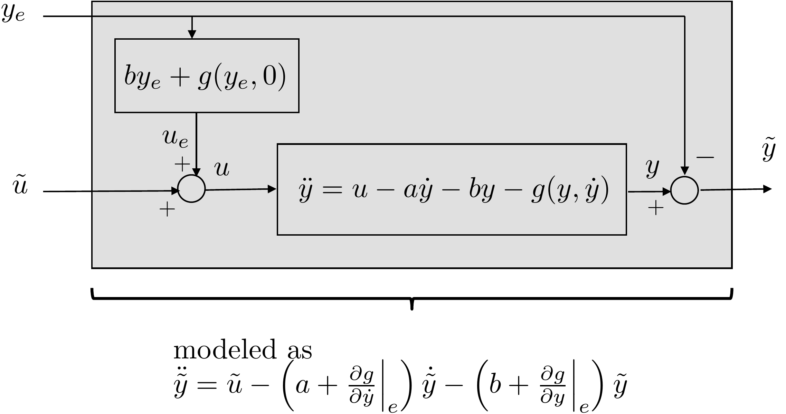
Figure 4.2. Linear model using Jacobian
linearization.
4.1.2 Feedback Linearization
It is often the case that the nonlinearities in the system can be
directly canceled by a judicious choice for the input variable. Consider
again the nonlinear equations of motion in
Equation 4.2. If
\(u\) is selected as \[u = g(y,\dot{y}) + \tilde{u}\] then the
resulting equation of motion is \[\ddot{y} +
a\dot{y} + by = \tilde{u},\] which is linear. This technique is
called feedback linearization because the feedback
signal \(u\) has been used to linearize
the system by directly canceling the nonlinearities. The advantage of
this method is that the equations of motion are still globally defined
and are not restricted to a small neighborhood of an equilibrium point.
The disadvantage is that \(g(y,\dot{y})\) may not be precisely known,
and therefore may not be completely canceled by \(u\). A block diagram that shows the design
model for
Equation 4.2 using
feedback linearization is shown in
Fig.4.3.
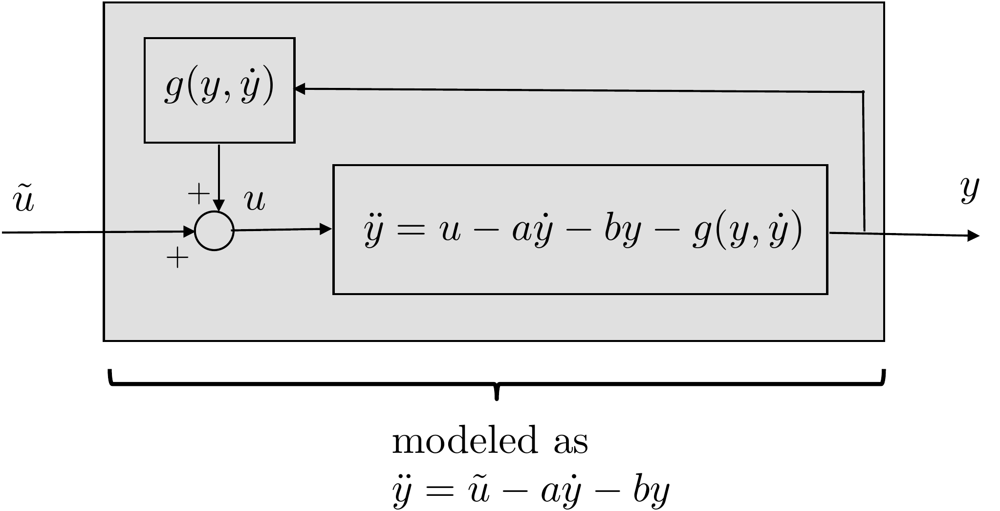
Figure 4.3. Linear model using feedback
linearization.
(b) Linearize the system about the equilibria using Jacobian
linearization.
(c) Linearize the system using feedback linearization.
Design Study A guided exercise
Linearize the arm model
Use the nonlinear arm equation
from Chapter 3 and compare Jacobian linearization with feedback
linearization.
Step 1. Equilibrium conditions
Show solution for
Step 1
Answer:\(\dot{\theta}_e=0\) and \(\tau_e=mg\ell\cos\theta_e/2\).
Step
2. Linearized gravity term
Enter the coefficient multiplying
\(\tilde{\theta}\) after
linearizing the gravity torque.
Show solution for Step
2
Answer: The tangent term is
\(-(mg\ell/2)\sin(\theta_e)\tilde{\theta}\).
Step 3.
Feedback-linearizing torque
Show
solution for Step 3
Answer: Use
\(\tau=mg\ell\cos\theta/2+\tilde{\tau}\) so the gravity
term is canceled by the actual angle, not just by the equilibrium
angle.
Complete solution
The differential equation describing the single-link robot arm
derived in HW 3.1.3 is \[\label{eq:dm_diff_eq_robot_arm_1}
\frac{m\ell^2}{3}\ddot{\theta} + \frac{mg\ell}{2}\cos\theta = \tau -
b\dot{\theta}.\] Defining \(x=(\theta,
\dot{\theta})\), and \(u=\tau\)
we get \[\begin{aligned}
\dot{x} = \begin{pmatrix} \dot{\theta} \\ \ddot{\theta}\end{pmatrix}
= \begin{pmatrix} \dot{\theta} \\ \frac{3}{m\ell^2}\tau -
\frac{3b}{m\ell^2}\dot{\theta} - \frac{3g}{2\ell}\cos\theta
\end{pmatrix} \stackrel{\triangle}{=}f(x,u).
\end{aligned}\] The equilibrium is when \(f(x_e,u_e)=0\), or in other words, when
\[\label{dm:arm_equilibrium}
\theta_e = \text{~anything~}, \qquad \dot{\theta}_e =0, \qquad \tau_e =
\frac{mg\ell}{2}\cos\theta_e.\] Equivalently, at equilibrium
there is no motion in the system, which implies that \(\ddot{\theta}_e = \dot{\theta}_e=0\), which
from Equation 4.3
implies that \(\tau_e =
\frac{mg\ell}{2}\cos\theta_e\).
Therefore, any pair \((\theta_e,
\tau_e)\) satisfying Equation [dm:arm_equilibrium] is an
equilibrium. Jacobian linearization then proceeds by replacing each term
in the nonlinear differential equations describing the system by the
first two terms in the Taylor’s series expansion about the equilibrium
point. Using some of the relationships from Equation [dm:arm_equilibrium], (such as
\(\dot{\theta}_e = 0\)), then by
defining \(\tilde{\theta}\stackrel{\triangle}{=}\theta-\theta_e\),
\(\dot{\tilde{\theta}}\stackrel{\triangle}{=}\dot{\theta}-\dot{\theta}_e=\dot{\theta}\),
\(\ddot{\tilde{\theta}}=\ddot{\theta}-\ddot{\theta}_e=\ddot{\theta}\),
and \(\tilde{\tau}=\tau-\tau_e\), each
term in Equation 4.3
can be expanded about the equilibrium as follows: \[\begin{aligned}
\frac{m\ell^2}{3}\ddot{\theta} &= \frac{m\ell^2}{3}\ddot{\theta}_e +
\frac{m\ell^2}{3}\left.\frac{\partial \ddot{\theta}}{\partial
\ddot{\theta}}\right|_e (\ddot{\theta}-\ddot{\theta}_e) =
\frac{m\ell^2}{3} \ddot{\tilde{\theta}}, \\
\frac{mg\ell}{2}\cos\theta &\approx \frac{mg\ell}{2} \cos\theta_e +
\frac{mg\ell}{2}\frac{\partial}{\partial \theta}
(\cos\theta)\Big|_{\theta_e}
(\theta-\theta_e) \\
&= \frac{mg\ell}{2}\cos\theta_e - \frac{mg\ell}{2}\sin\theta_e
\tilde{\theta} \\
\tau &= \tau_e + \frac{\partial \tau}{\partial \tau}\Big|_e
(\tau-\tau_e)
= \tau_e + \tilde{\tau} \\
b\dot{\theta} &= b\dot{\theta}_e + b\frac{\partial
\dot{\theta}}{\partial \dot{\theta}}\Big|_e
(\dot{\theta}-\dot{\theta}_e) = b\dot{\tilde{\theta}}.
\end{aligned}\] Substituting into Equation 4.3
gives \[\frac{m\ell^2}{3}\left[\ddot{\theta}_e +
\ddot{\tilde{\theta}}\right] + \frac{mg\ell}{2}\left[\cos\theta_e -
\sin\theta_e\tilde{\theta}\right] = \left[\tau_e+\tilde{\tau}\right] -
b\left[\dot{\theta}_e +\dot{\tilde{\theta}}\right].\] Simplifying
this expression using Equation [dm:arm_equilibrium] gives \[\label{eq:arm_linearized_eom_jacobian}
\frac{m\ell^2}{3}\ddot{\tilde{\theta}} -
\frac{mg\ell}{2}(\sin\theta_e)\tilde{\theta} = \tilde{\tau} -
b\dot{\tilde{\theta}},\] which are the linearized equations of
motion using Jacobian linearization.
Feedback linearization proceeds by using the feedback linearizing
control \[\label{eq:arm_feedback_linarization_control}
\tau = \frac{mg\ell}{2}\cos\theta + \tilde{\tau}\] in Equation 4.3
to obtain the feedback linearized equations of motion \[\label{eq:arm_linearized_eom_feedback_linarization}
\frac{m\ell^2}{3}\ddot{\theta} = \tilde{\tau} - b\dot{\theta},\]
where we emphasize that the equations of motion are valid for any \(\theta\) and \(\dot{\theta}\) and not just in a small
region about an equilibrium. It is interesting to compare Equation 4.6
to the control signal using Jacobian linearization which is \[\label{eq:arm_jacobian_linarization_control}
\tau = \tau_e+\tilde{\tau} = \frac{mg\ell}{2}\cos\theta_e +
\tilde{\tau}.\] The control signal in 4.8
uses the equilibrium angle \(\theta_e\)
whereas the control signal in 4.6
uses the actual angle \(\theta\). For
the single-link robot arm we will use the design model obtained using
feedback linearization.
(b) Linearize the system about the equilibria using Jacobian
linearization.
Note that for the inverted pendulum, since the nonlinearities are not
all contained in the same channel as the control force \(F\), the system cannot be feedback
linearized.
Design
Study B guided exercise
Find equilibria and linearization
facts
Check the equilibrium conditions and the key
upright-linearization structure.
Step 1. Equilibrium
conditions
Show solution for Step
1
Answer: At equilibrium F_e = 0
and theta_e = k pi; z_e can be any cart position.
Step
2. Upright linearization
Show solution for Step
2
Answer: For the upright
equilibrium, sin(theta) linearizes to the perturbation
angle.
Step 3. Feedback
linearization
Show solution for Step
3
Answer: The nonlinearities are
not all in the same channel as the cart force, so feedback linearization
is not available in this form.
Complete solution
The differential equations describing the inverted pendulum derived
in HW 3.2.3 are \[\begin{aligned}
(m_1+m_2)\ddot{z} + m_1 \frac{\ell}{2} \ddot{\theta} \cos\theta &=
m_1 \frac{\ell}{2} \dot{\theta}^2\sin\theta -b\dot{z} + F
\label{eq:dm_pendulum_nonlinear_eq} \\
m_1 \frac{\ell}{2} \ddot{z} \cos\theta + m_1 \frac{\ell^2}{3}
\ddot{\theta} &=
m_1 g \frac{\ell}{2} \sin\theta. \notag
\end{aligned}\] The equilibrium values \((z_e,\theta_e,F_e)\) are found by setting
\(\dot{z}=\ddot{z}=\dot{\theta}=\ddot{\theta}=0\)
in Equation 4.9
to obtain \[\begin{aligned}
F_e &= 0 \label{eq:dm_pendulum_equilibria_1} \\
m_1g\frac{\ell}{2}\sin\theta_e &=
0.\label{eq:dm_pendulum_equilibria_2}
\end{aligned}\] Therefore, any triple \((z_e, \theta_e, F_e)\) satisfying
Equations 4.10
and 4.11
is an equilibrium. In other words, \(z_e\) can be any value, \(F_e=0\), and \(\theta_e = k\pi\), where \(k\) is an integer.
To linearize around \((z_e, \theta_e,
F_e)\) where \(k\) is an even
integer, note that \[\begin{aligned}
\ddot{\theta}\cos\theta &\approx
\ddot{\theta}_e\cos\theta_e
+
\frac{\partial}{\partial\theta}(\ddot{\theta}\cos\theta)\Big|_{(\ddot{\theta}_e,\theta_e)}(\theta-\theta_e)
%
+
\frac{\partial}{\partial\ddot{\theta}}(\ddot{\theta}\cos\theta)\Big|_{(\ddot{\theta}_e,\theta_e)}(\ddot{\theta}-\ddot{\theta}_e)
\\
&= \ddot{\theta}_e\cos\theta_e
- (\ddot{\theta}_e\sin\theta_e)\tilde{\theta}
+ (\cos\theta_e)\ddot{\tilde{\theta}} \\
&= \ddot{\tilde{\theta}} \\
%
\dot{\theta}^2\sin\theta &\approx \dot{\theta}_e^2\sin\theta_e +
\frac{\partial}{\partial\theta}(\dot{\theta}^2\sin\theta)\Big|_{(\theta_e,\dot{\theta}_e)}(\theta-\theta_e)
%
+
\frac{\partial}{\partial\dot{\theta}}(\dot{\theta^2}\sin\theta)\Big|_{(\theta_e,\dot{\theta}_e)}(\dot{\theta}-\dot{\theta}_e)
\\
&= \dot{\theta}_e^2\sin\theta_e +
\dot{\theta}_e^2\cos\theta_e\tilde{\theta} +
2\dot{\theta}_e\sin\theta_e\dot{\tilde{\theta}} \\
&= 0, \\
%
\ddot{z}\cos\theta &\approx
\ddot{z}_e\cos\theta_e
+
\frac{\partial}{\partial\theta}(\ddot{z}\cos\theta)\Big|_{(\ddot{z}_e,\theta_e)}(\theta-\theta_e)
%
+
\frac{\partial}{\partial\ddot{z}}(\ddot{z}\cos\theta)\Big|_{(\ddot{z}_e,\theta_e)}(\ddot{z}-\ddot{z}_e)
\\
&= \ddot{z}_e\cos\theta_e
- (\ddot{z}_e\sin\theta_e)\tilde{\theta}
+ (\cos\theta_e)\ddot{\tilde{z}} \\
&= \ddot{\tilde{z}} \\
%
\sin\theta &\approx \sin\theta_e + \frac{\partial}{\partial \theta}
(\sin\theta)\Big|_{\theta_e}
(\theta-\theta_e) \\
&= \sin\theta_e + (\cos\theta_e) \tilde{\theta} \\
&= \tilde{\theta},
\end{aligned}\] where we have defined \(\tilde{\theta}\stackrel{\triangle}{=}\theta-\theta_e\)
and \(\tilde{z}\stackrel{\triangle}{=}z-z_e\).
Also defining \(\tilde{F}\stackrel{\triangle}{=}F-F_e\),
and noting that \[\begin{aligned}
\theta &= \theta_e + \tilde{\theta} = \tilde{\theta} \\
\dot{\theta} &= \dot{\theta}_e + \dot{\tilde{\theta}} =
\dot{\tilde{\theta}} \\
z &= z_e + \tilde{z} \\
\dot{z} &= \dot{z}_e + \dot{\tilde{z}} = \dot{\tilde{z}} \\
\ddot{z} &= \ddot{z}_e + \ddot{\tilde{z}} = \ddot{\tilde{z}} \\
F &= F_e + \tilde{F} = \tilde{F},
\end{aligned}\] we can write Equation 4.9
in its linearized form as \[\begin{aligned}
(m_1+m_2)[\ddot{z}_e+\ddot{\tilde{z}}] + m_1 \frac{\ell}{2}
[\ddot{\tilde{\theta}}] &=
m_1 \frac{\ell}{2} [ 0 ] -b[\dot{z}_e+\dot{\tilde{z}}] +
[F_e+\tilde{F}]
\\
m_1 \frac{\ell}{2} [ \ddot{\tilde{z}}] + m_1 \frac{\ell^2}{3}
[\ddot{\theta}_e+\ddot{\tilde{\theta}}] &=
m_1 g \frac{\ell}{2} [\tilde{\theta}],
\end{aligned}\] which simplifies to \[\label{eq:pendulum_linearized_eom}
\begin{pmatrix} (m_1+m_2) & m_1 \frac{\ell}{2} \\
m_1 \frac{\ell}{2} & m_1 \frac{\ell^2}{3}
\end{pmatrix}\begin{pmatrix}
\ddot{\tilde{z}} \\ \ddot{\tilde{\theta}} \end{pmatrix} =
\begin{pmatrix} -b\dot{\tilde{z}} + \tilde{F}
\\
m_1 g \frac{\ell}{2} \tilde{\theta} \end{pmatrix},\] which
are the linearized equations of motion.
Defining \(x=(\theta, \phi, \dot{\theta},
\dot{\phi})\), and \(u=\tau\) we
get \[\begin{aligned}
\dot{x} = \begin{pmatrix} \dot{\theta} \\ \dot{\phi} \\ \ddot{\theta} \\
\ddot{\phi}\end{pmatrix}
= \begin{pmatrix} \dot{\theta} \\ \dot{\phi} \\
-\frac{b}{J_s}(\dot{\theta}-\dot{\phi})
-\frac{k}{J_s}(\theta-\phi)+\frac{1}{J_s}\tau \\ -
\frac{b}{J_p}(\dot{\phi}-\dot{\theta})-\frac{k}{J_p}(\phi-\theta)
\end{pmatrix} \stackrel{\triangle}{=}f(x,u).
\end{aligned}\] The equilibrium is when \(f(x_e,u_e)=0\), or in other words when
\[\label{dm:satellite_equilibrium}
\theta_e = \phi_e = \text{~anything~}, \qquad \dot{\theta}_e =
\dot{\phi}_e =0, \qquad \tau_e = 0.\]
The equations of motion for this system are linear and do not require
linearization. With that said, the information about the system
equilibria can be helpful for designing the control system. In this
case, understanding that the commanded angular position of the satellite
and the panel should be the same to keep the system in equilibrium will
influence our control design.
4.5 Interactive Linearization
Check
Chapter 4 activity
Local linear model of a nonlinear equation
Use f(x,u)=x2+u to compare the nonlinear surface, the
selected operating point, the tangent-plane linearization, and the
approximation error.
Interactive Figure 4.I2. The blue mesh is the nonlinear surface f(x,u).
The orange mesh is the tangent plane at (x0, u0).
Interactive Figure 4.I3. Heat map of approximation error
f(x,u)-flin(x,u). Darker cells indicate larger local
linearization error.
\(f_{\mathrm{lin}}(x,u)\) at the nearby
point = ; true \(f(x,u)\) =
; error =
Notice that the error is small near \(x_0\) and grows as the nearby point moves away from the
linearization point.
A linearized perturbation model is most meaningful when the operating
point is an equilibrium and the perturbation stays near that point.
4.6 Knowledge Check
Q1. Valid region
When is a Jacobian linearization usually the best
approximation?
Q2. Equilibrium condition
For xdot=f(x,u), what condition defines an
equilibrium point?
Q3. Jacobian entry
For f(x,u)=x2+u, enter A =
∂f⁄∂x evaluated
at xe=2.
Show solution
Answer: 4, because
∂f⁄∂x = 2x and
2(2)=4.
Q4. Equilibrium input
For f(x,u)=x2+u and xe=3, enter the input
ue that makes f(xe,ue) = 0.
Show solution
Answer: -9, because 32+ue=0.
Q5. Perturbation variables
In words, what do variables like x-xe represent in a
linearized model?
Show solution
Answer: They are deviations, or perturbations, from the
equilibrium value.
Q6. Equilibrium pair
For the
scalar model xdot = f(x,u) = x2 + u, which pair is an
equilibrium?
Q7. Jacobian entry
For
f2(x,u)=x22+u, what is
A22 = partial f2/partial x2
at x2e = -1?
Q8. Perturbation variable
In a linearized model, what does x -
xe represent?
Q9. Local approximation
Which statement about a Jacobian linearization is
most accurate?
4.7 Notes and References
Jacobian linearization is a standard technique that is well
documented in most introductory textbooks on control. For example,
see [4–7]. Feedback linearization is a much deeper topic
than can be covered in an introductory textbook on control. A discussion
that is similar to ours, that assumes that the nonlinearity is in the
input channel, is contained in [5]. Feedback linearization is a fairly
standard technique for fully actuated mechanical systems modeled by
Euler-Lagrange equations, where the model of the system can be reduced
to \[M(q)\ddot{q} + c(q,\dot{q})\dot{q}+g(q)
= \tau,\] where \(q\in\mathbb{R}^m\) is the generalized
coordinate and \(\tau\in\mathbb{R}^m\)
is the generalized force, and where \(M(q)\) is an invertible matrix. In that
case we can write \[\ddot{q} =
M^{-1}(q)\left(\tau - c(q,\dot{q})\dot{q} - g(q)\right).\]
Selecting \(\tau\) as \[\label{eq:feedback_linearization_general}
\tau = c(q,\dot{q})\dot{q} + g(q) + M(q)\nu,\] results in the
linear system \[\ddot{q} = \nu,\]
where the new control variable \(\nu\)
can be designed to stabilize the system. The control law in
Equation 4.16
is the feedback linearizing control. This is a standard technique for
robot manipulators and is often called the method of computed
torque [8–10].
When the nonlinearity is not in the input channel, the system can
still often be feedback linearized through a suitable change of
variables. A good introduction to the topic is contained in [11]. More
advanced coverage of the topic can be found in [12–15].
5 Transfer Function Models
5.1 Theory
The (one-sided) Laplace transform of a time domain
signal \(y(t)\) is defined as \[\mathcal{L}\{y(t)\} \stackrel{\triangle}{=}Y(s) =
\int_0^\infty y(t) e^{-st}\,dt.\] In essence, the Laplace
transform indicates the content of the complex signal \(e^{-st}\) that is contained in \(y(t)\). The Laplace transform of the time
derivative of \(y(t)\) is given by
\[\mathcal{L}\{\dot{y}\} = \int_0^\infty
\dot{y} e^{-st}\,dt.\] Using integration by parts \(\int udv = uv-\int vdu\), where \(u=e^{-st}\) and \(dv = \dot{y}dt\), and assuming that \(\lim_{t\to\infty}y(t)e^{-st}=0\), or that
\(s\) is in the region of convergence
of the Laplace transform, we get \[\begin{aligned}
\mathcal{L}\{\dot{y}\} &= \int_0^\infty \dot{y} e^{-st}\,dt \\
&= y(t)e^{-st}\Big|_0^\infty - \int_0^\infty
y(t)\left(-se^{-st}dt\right) \\
&= \lim_{t\to\infty}y(t)e^{-st} - y(0) + s\int_0^\infty
y(t)e^{-st}\,dt \\
&= sY(s) - y(0).
\end{aligned}\] Similarly, the Laplace transform of the second
derivative of \(y(t)\) is given by
\[\begin{aligned}
\mathcal{L}\{\ddot{y}\} &= s\mathcal{L}\{\dot{y}\} - \dot{y}(0) \\
&= s\left(sY(s)-y(0)\right) - \dot{y}(0) \\
&= s^2 Y(s) - sy(0) - \dot{y}(0).
\end{aligned}\]
The transfer function is typically defined
as the relationship between the input and the output of the system. In
that setting the transfer function is found when all initial conditions
are set to zero. This is important to remember in the context of
modeling. We will see that state-space models explicitly account for
initial conditions, but that transfer functions do not.
Given the \(n^{th}\) order
differential equation \[\begin{gathered}
y^{(n)} + a_{n-1}y^{(n-1)} + \cdots+ a_1 \dot{y} + a_0 y \\ = b_mu^{(m)}
+ b_{m-1}u^{(m-1)}+\cdots+b_1\dot{u} + b_0 u,
\end{gathered}\] the transfer function from \(u\) to \(y\) is found by taking the Laplace
transform of both sides of the equation and setting all initial
conditions to zero to obtain \[\begin{gathered}
s^nY(s) + a_{n-1}s^{n-1}Y(s) + \cdots+ a_1 sY(s) + a_0 Y(s) \\ =
b_ms^{m}U(s) + b_{m-1}s^{m-1}U(s)+\cdots+b_1sU(s) + b_0U(s).
\end{gathered}\] Factoring \(Y(s)\) and \(U(s)\) we get \[\begin{gathered}
\left(s^n + a_{n-1}s^{n-1} + \cdots+ a_1 s + a_0\right) Y(s) \\ =
\left(b_ms^{m}+b_{m-1}s^{m-1}+\cdots+b_1s+b_0\right)U(s).
\end{gathered}\] Solving for \(Y(s)\) gives \[Y(s) = \left(\frac{b_ms^{m} +
b_{m-1}s^{m-1}+\cdots+b_1s + b_0}{s^n + a_{n-1}s^{n-1} + \cdots+ a_1 s +
a_0}\right)U(s),\] where \[H(s)=
\frac{b_ms^{m} + b_{m-1}s^{m-1}+\cdots+b_1s + b_0}{s^n + a_{n-1}s^{n-1}
+ \cdots+ a_1 s + a_0}\] is the transfer function from \(u\) to \(y\).
Given the transfer function \(H(s)\), the poles of the transfer
function are the roots of the denominator polynomial \[s^n + a_{n-1}s^{n-1} + \cdots+ a_1 s + a_0 =
0.\] Similarly, the zeros of the transfer
function are the roots of the numerator polynomial \[b_ms^{m} + b_{m-1}s^{m-1}+\cdots+b_1s + b_0 =
0.\]
As a concrete example, consider the differential equation given by
\[y^{(3)} + 2\ddot{y} + 3\dot{y} + 4y =
5\dot{u} + 6u.\] Taking the Laplace transform of both sides,
setting the initial conditions to zero, and factoring \(Y(s)\) and \(U(s)\) gives \[(s^3 + 2s^2 + 3s + 4)Y(s) = (5s+6)U(s).\]
Solving for \(Y(s)\) gives \[Y(s) = \frac{5s+6}{s^3+2s^2+3s+4} U(s).\]
The transfer function from \(u\) to
\(y\) is therefore \[H(s) = \frac{5s+6}{s^3+2s^2+3s+4}.\] The
poles of the transfer function are the roots of \(s^3+2s^2+3s+4=0\) or \(p_1=-1.6506\), \(p_2=-0.1747+j1.5469\), and \(p_3=-0.1747-j1.5469\). The zeros of the
transfer function are the roots of \(5s+6=0\) or \(z_1
= -6/5\).
Answer: The poles are at \(s=0\) and \(s=-3b/(m\ell^2)\).
Complete solution
As shown in Section 7.2,
the feedback linearized model for the single-link robot arm is given by
Equation 4.7
as \[\label{eq:soln_a6_1}
\frac{m\ell^2}{3}\ddot{\theta} = \tilde{\tau} - b\dot{\theta}.\]
Taking the Laplace transform of Equation 5.1 and setting all initial
conditions to zero we get \[\frac{m\ell^2}{3}s^2\Theta(s) + b s\Theta(s) =
\tilde{\tau}(s).\] Solving for \(\Theta(s)\) gives \[\Theta(s) = \left(\frac{1}{\frac{m\ell^2}{3}s^2 +
bs}\right)\tilde{\tau}(s).\] The canonical form for transfer
functions is for the leading coefficient in the denominator polynomial
to be unity. This is called monic form. Putting the transfer function in
monic form results in \[\label{eq:soln_a6_2}
\Theta(s) = \left(\frac{\frac{3}{m\ell^2}}{s^2 +
\frac{3b}{m\ell^2}s}\right)\tilde{\tau}(s),\] where the
expression in parentheses is the transfer function from \(\tilde{\tau}\) to \(\theta\), where \(\tilde{\tau}\) indicates that we are
working with the feedback linearized control in Equation 4.6.
The block diagram associated with Equation 5.2 is shown in
Fig.5.1.
Figure 5.1. A block diagram of the single-link robot
arm.
5.3 SIMO Systems and Cascade
Approximations
There are many systems that have multiple inputs and/or multiple
outputs. In this case, a transfer function exists from each input
to each output. For example, suppose that the system is given by the
coupled differential equations \[\begin{aligned}
\ddot{y}_1 + a_{11}\dot{y}_1 + \ddot{y}_2 + a_{12}\dot{y}_2 &=
b_{11}u_1 + b_{12}u_2 + b_{13}\dot{u}_2 \\
\ddot{y}_2 + a_{22}y_2 &= b_{21}u_2.
\end{aligned}\] Taking the Laplace transform and arranging in
matrix notation gives \[\left(\begin{array}{c|c}
s^2+a_{11}s & s^2+a_{12}s \\ \hline 0 &
s^2+a_{22}\end{array}\right)
\begin{pmatrix}Y_1(s) \\ Y_2(s)\end{pmatrix} \\ =
\left(\begin{array}{c|c} b_{11} & (b_{13}s+b_{12}) \\ \hline0 &
b_{21}\end{array}\right)
\begin{pmatrix} U_1(s) \\ U_2(s)\end{pmatrix}.\] To find the
relevant transfer functions, we need to isolate the outputs on the
left-hand side by inverting the matrix on the left. Using the inverse
formula for a \(2\times 2\) matrix
derived in
Appendix 31\[\begin{pmatrix} a & b \\ c & d
\end{pmatrix}^{-1} = \frac{\begin{pmatrix} d & -b \\ -c &
a\end{pmatrix}}{ad-bc}\] we get \[\begin{aligned}
\begin{pmatrix}Y_1 \\ Y_2\end{pmatrix}
&= \left(\begin{array}{c|c} s^2+a_{11}s & s^2+a_{12}s \\ \hline
0 & s^2+a_{22}\end{array}\right)^{-1}
\left(\begin{array}{c|c} b_{11} & b_{13}s+b_{12} \\ \hline 0 &
b_{21}\end{array}\right)
\begin{pmatrix} U_1 \\ U_2\end{pmatrix} \\
&= \frac{\left(\begin{array}{c|c} s^2+a_{22} & -s^2-a_{12}s \\
\hline 0 & s^2+a_{11}s\end{array}\right)}{(s^2+a_{11}s)(s^2+a_{22})}
\left(\begin{array}{c|c} b_{11} & b_{13}s+b_{12} \\ \hline 0 &
b_{21}\end{array}\right)
\begin{pmatrix} U_1 \\ U_2\end{pmatrix} \\
&= \frac{\left(\begin{array}{c|c} b_{11}(s^2+a_{22}) &
(s^2+a_{22})(b_{13}s+b_{12})-b_{21}(s^2+a_{12}s) \\ \hline 0 &
b_{21}(s^2+a_{11}s)\end{array}\right)}{(s^2+a_{11}s)(s^2+a_{22})}
\begin{pmatrix} U_1 \\ U_2\end{pmatrix} \\
&= \left(\begin{array}{c|c} \frac{b_{11}}{s^2+a_{11}s} &
\frac{b_{13}s^3+(b_{12}-b_{21})s^2+(b_{13}a_{22}-b_{21}a_{12})s+a_{22}b_{12}}{(s^2+a_{11}s)(s^2+a_{22})}
\\ \hline 0 & \frac{b_{21}}{s^2+a_{22}}\end{array}\right)
\begin{pmatrix} U_1 \\ U_2\end{pmatrix}.
\end{aligned}\] Therefore, the transfer function from \(u_1\) to \(y_1\) is \(\frac{b_{11}}{s^2+a_{11}s}\), the transfer
function from \(u_2\) to \(y_1\) is \(\frac{b_{13}s^3+(b_{12}-b_{21})s^2+(b_{13}a_{22}-b_{21}a_{12})s+a_{22}b_{12}}{(s^2+a_{11}s)(s^2+a_{22})}\),
the transfer function from \(u_1\) to
\(y_2\) is \(0\), and the transfer function from \(u_2\) to \(y_2\) is \(\frac{b_{21}}{s^2+a_{22}}\).
For many of the case studies that we will look at in this book, there
is a single input, but we are also interested in controlling two or more
measurements or outputs. State-space control techniques are able to
create control laws to control multiple outputs in a single design step,
as we will see in later chapters. However, we also want to be able to
create single-input, multiple-output controllers using more classical
transfer-function based approaches. Doing so will require more intuition
about the systems we are controlling, as well as a clear understanding
of our control objectives so that we can make appropriate design
decisions and simplifying assumptions.
The majority of our design studies (specifically studies B, C, E, and
F) have coupled, higher-order dynamics (greater than order two) with
multiple outputs. Instead of coming up with a single feedback loop to
control the multiple outputs of interest, we will form a cascade of two
lower-order transfer functions and design two independent control loops.
Forming the cascade of lower-order transfer functions requires insights
into the dynamic behavior of the system, because it may require
simplifying assumptions about the dynamic coupling between the two
subsystems. Instead of a two-way coupling, the cascade may make the
dynamic coupling one-way. To reduce the complexity of the system, we may
make simplifying assumptions about the dynamics of one of the
subsystems. It is essential for these simplifications to be justifiable
given the parameters of the system and our control objectives. For
example, in design study C, we form a cascade of two transfer functions:
the first is from the torque input to the satellite angular position and
the second is from the satellite angular position to the solar panel
angular position. Because the satellite is more massive than the solar
panels, we will make a valid assumption that while the satellite
significantly influences the dynamic behavior of the solar panels, the
solar panels do not significantly influence the dynamic behavior of the
satellite. As we will see, this will simplify the design of the control
system significantly and result in a viable control design that provides
good performance.
In forming cascades of transfer functions, other factors may
influence the form of the cascade. Our control priorities may play a
significant role. For example, in design study B, the balancing of the
inverted pendulum is the highest priority and therefore, we will use the
force input to control the angle of the pendulum. Of importance, but
lower priority, is controlling the cart. These considerations will lead
us to form the cascade using the transfer functions from force to
pendulum angle and from pendulum angle to cart position. In other
situations, the causality of the dynamic behavior is more transparent.
In the block-beam system, the force on the beam causes the beam angle to
change and the change in beam angle causes the block to slide. We will
form the transfer function cascade for the block-beam system
accordingly. In the planar VTOL aircraft system, torque from the
differential thrust causes the aircraft to pitch, while thrust combined
with non-zero pitch causes the aircraft to translate. It is natural,
therefore, to think of torque causing pitch, and pitch causing
translational motion. We will thus form a cascade of two transfer
functions: from torque to pitch angle and from pitch angle to horizontal
position.
In forming a cascade of two (or more) transfer functions to represent
the dynamics of a single system, it is critically important that we
consider the physics of the system and our control objectives as we make
simplifying assumptions. Important questions to consider include:
What is the control input to the system?
What outputs of the system are to be controlled?
What outputs can be measured?
What physically justifiable simplifications can be made about the
dynamic coupling between subsystems?
What physically justifiable simplifying assumptions can be made
about the dynamics of the system?
Asking and answering these questions is fundamental to the design of
successful control systems. The more insight you have into the physical
behavior of the system you are controlling, the better your control
system designs will be.
(a) Start with the linearized equations and use the Laplace transform to
convert the equations of motion to the s-domain.
(b) Find the transfer functions from the input \(\tilde{F}(s)\) to the outputs \(\tilde{Z}(s)\) and \(\tilde{\Theta}(s)\). Assume that the
damping constant is negligible. How does this simplify the transfer
functions? Is this a reasonable assumption?
(c) From the simplified \(\tilde{Z}(s)/\tilde{F}(s)\) and \(\tilde{\Theta}(s)/\tilde{F}(s)\) transfer
functions, compute the \(\tilde{Z}(s)/\tilde{\Theta}(s)\) transfer
function. Draw a block diagram of the system as a series of two transfer
functions from \(\tilde{F}(s)\) to
\(\tilde{\Theta}(s)\) and from \(\tilde{\Theta}(s)\) to \(\tilde{Z}(s)\).
(d) Describe how this transfer-function cascade makes sense physically. How
does force influence the pendulum angle? How does the pendulum angle
influence the cart position?
Design
Study B guided exercise
Build the pendulum transfer-function
cascade
Start from the linearized equations and identify the
force-to-angle and angle-to-position relationship.
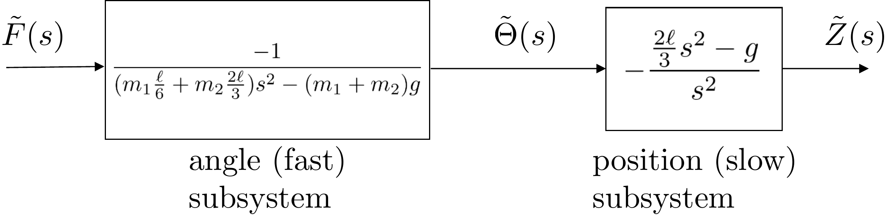
Use the cascade structure to separate the
fast force-to-angle subsystem from the angle-to-position
subsystem.
Step 1. Simplifying assumption
Show solution for Step
1
Answer: The transfer functions
are simplified by assuming b is negligible.
Step 2.
Force-to-angle subsystem
Show
solution for Step 2
Answer: The
upright pendulum force-to-angle dynamics include an unstable
right-half-plane pole.
Step
3. Angle-to-position subsystem
Show solution for Step
3
Answer: The angle-to-position
transfer function has two free integrators and produces cart position
z.
Complete solution
From HW 3.2.4, the linearized equations of
motion are given by \[\begin{pmatrix}
(m_1+m_2) & m_1 \frac{\ell}{2} \\
m_1 \frac{\ell}{2} & m_1 \frac{\ell^2}{3}
\end{pmatrix}\begin{pmatrix}
\ddot{\tilde{z}} \\ \ddot{\tilde{\theta}} \end{pmatrix} =
\begin{pmatrix} -b\dot{\tilde{z}} + \tilde{F}
\\
m_1 g \frac{\ell}{2} \tilde{\theta} \end{pmatrix}.\] The
second equation in this matrix formulation can be simplified by dividing
both sides of the second equation by \(m_1
\frac{\ell}{2}\) to give \[\begin{pmatrix} (m_1+m_2) & m_1
\frac{\ell}{2} \\
1 & \frac{2 \ell}{3} \end{pmatrix}\begin{pmatrix}
\ddot{\tilde{z}} \\ \ddot{\tilde{\theta}} \end{pmatrix} =
\begin{pmatrix} -b\dot{\tilde{z}} + \tilde{F}
\\
g \tilde{\theta} \end{pmatrix}.\] We can write these
equations with states and state derivatives on the left and inputs on
the right as \[\begin{aligned}
(m_1+ m_2) \ddot{\tilde{z}} + m_1\frac{\ell}{2} \ddot{\tilde{\theta}} +
b\dot{\tilde{z}} &= \tilde{F} \\
\ddot{\tilde{z}} + \frac{2\ell}{3} \ddot{\tilde{\theta}} -
g{\tilde{\theta}} &= 0 .
\end{aligned}\] Taking the Laplace transform gives \[\begin{aligned}
\left[ (m_1+m_2) s^2 + b s \right] \tilde{Z}(s) + m_1\frac{\ell}{2} s^2
\tilde{\Theta}(s) &= \tilde{F}(s) \\
s^2 \tilde{Z}(s) + \left(\frac{2 \ell}{3} s^2 - g
\right)\tilde{\Theta}(s) &= 0 .
\end{aligned}\] These equations can be expressed in matrix form
as \[\begin{pmatrix} (m_1+m_2)s^2 + bs &
m_1 \frac{\ell}{2}s^2 \\
s^2 & \frac{2 \ell}{3}s^2-g \end{pmatrix}\begin{pmatrix}
\tilde{Z}(s) \\ \tilde{\Theta}(s) \end{pmatrix} =
\begin{pmatrix} \tilde{F}(s) \\
0 \end{pmatrix}.\] Inverting the matrix on the left-hand side
and solving for the transfer functions gives \[\begin{aligned}
\tilde{Z}(s) &= \left(\frac{ \frac{2 \ell}{3} s^2 - g}{(m_1
\frac{\ell}{6}+ m_2 \frac{2 \ell}{3}) s^4 +b\frac{2\ell}{3} s^3
-(m_1+m_2)gs^2-bgs}\right) \tilde{F}(s) \\
\tilde{\Theta}(s) &= \left(\frac{-s^2}{(m_1 \frac{\ell}{6}+ m_2
\frac{2 \ell}{3}) s^4 +b\frac{2\ell}{3} s^3 -(m_1+m_2)gs^2-bgs}\right)
\tilde{F}(s).
\end{aligned}\]
If we make the assumption that \(b \approx
0\), then these transfer functions will simplify further and be
even easier to work with from a control design perspective. This is a
reasonable and conservative assumption because the damping force \(b\dot{z}\) is small relative to the other
forces acting on the system. Furthermore, by underestimating the damping
in the system, our control design will be conservative because it
assumes there is no damping provided by the physics of the system and
thus all the damping in the system must come from the feedback control.
Assuming \(b=0\), we get \[\begin{aligned}
\tilde{Z}(s) &= \left(\frac{\frac{2 \ell}{3} s^2 - g}{s^2\left[(m_1
\frac{\ell}{6}+ m_2 \frac{2 \ell}{3}) s^2 -(m_1+m_2)g \right]}\right)
\tilde{F}(s) \\
\tilde{\Theta}(s) &= \left(\frac{-1}{(m_1 \frac{\ell}{6}+ m_2
\frac{2 \ell}{3}) s^2 -(m_1+m_2)g}\right) \tilde{F}(s).
\end{aligned}\]
From a control-systems perspective, we will be interested in how the
pendulum angle \(\theta\) influences
the cart position \(z\), and so we want
to find the transfer function from \(\tilde{\Theta}(s)\) to \(\tilde{Z}(s)\). This can be easily
calculated by recognizing that \[\tilde{Z}(s)
=
\frac{\tilde{Z}(s)}{\tilde{F}(s)}\frac{\tilde{F}(s)}{\tilde{\Theta}(s)}
\tilde{\Theta}(s).\] Accordingly, \[\tilde{Z}(s) = \left(\frac{-\frac{2 \ell}{3} s^2
+ g}{s^2} \right) \tilde{\Theta}(s).\] The block diagram for the
approximate system is shown in Figure 5.2.
Figure 5.2. The inverted pendulum dynamics are
approximated by a cascade of fast and slow subsystems. The fast
subsystem is the transfer function from the force to the angle, and the
slow subsystem is the transfer function from the angle to the
position.
This transfer function cascade makes sense physically. With the
pendulum balanced vertically, a positive force on the cart would cause
the pendulum to fall in the negative direction as indicated by the minus
sign in the numerator. The pendulum falls in an unstable motion due to
the right-half-plane pole in the transfer function. The angle of the rod
influences the position of the cart as shown in the second transfer
function. If the pendulum were balanced vertically with no input force
applied and a small disturbance caused the pendulum to fall in the
positive direction, the cart would shoot off in the negative direction.
Again, this can be seen from the negative sign in the numerator of the
transfer function and the right-half-plane pole in the denominator. Keep
in mind that these equations are linearized about the vertical position
of the pendulum. When the pendulum is hanging down, the equations are
different. How are they different?
The PID and loopshaping techniques that we will discuss in
Parts III
and V will use the
approximate transfer function models of the plant derived above. The
state-space methods discussed in
Part IV will use
a state-space model, which does not depend on neglecting the coupling
between subsystems and does not depend on a separation into fast and
slow subsystems.
(a) Start with the linearized equations for the satellite attitude problem
and use the Laplace transform to convert the equations of motion to the
s-domain.
(b) Find the full transfer matrix from the input \(\tau(s)\) to the outputs \(\Phi(s)\) and \(\Theta(s)\).
(c) From the transfer matrix, find the second-order transfer function from
\(\Theta(s)\) to \(\Phi(s)\).
(d) Under the assumption that the panel moment of inertia \(J_p\) is significantly smaller than the
spacecraft moment of inertia \(J_s\)
(specifically, \((J_s+J_p)/J_s \approx
1\)), find the second-order approximation for the transfer
function from \(\tau(s)\) to \(\Theta(s)\).
(e) From your results on parts (c) and (d), form the approximate transfer
function cascade for the satellite/panel system and justify why it makes
sense physically.
Design Study C guided exercise
Build the satellite transfer-function cascade
The
transfer-function model separates the body-angle dynamics from the
panel-angle dynamics using a physically motivated cascade
approximation.
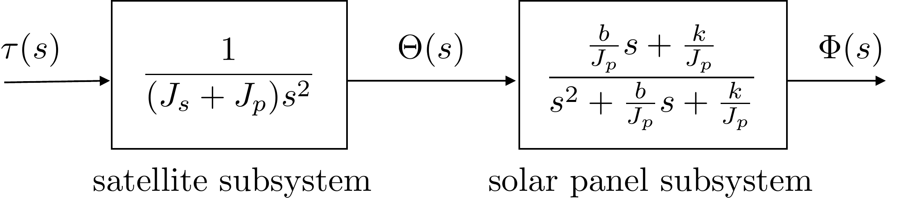
The approximation lets the body angle drive
the panel dynamics while neglecting the panel's back-effect on the
massive satellite body.
Step 1. Identify the s-domain outputs
Show solution for Step
1
Answer: The transfer matrix maps
\(\tau(s)\) to \(\Theta(s)\) and \(\Phi(s)\).
Step 2.
Body angle to panel angle
Show
solution for Step 2
Answer: The
panel subsystem is \(P_{out}(s)=\Phi(s)/\Theta(s)\), a second-order
flexible-mode transfer function.
Step 3.
Torque to body angle approximation
Show solution for Step
3
Answer:\(P_{in}(s)=\Theta(s)/\tau(s)\approx 1/((J_s+J_p)s^2)\),
so the approximate body plant has two free
integrators.
Step 4. Interpret the approximation
Show solution for Step
4
Answer: The cascade assumes the
satellite body significantly influences the panel, while the panel does
not significantly influence the satellite body.
Complete solution
From HW 3.3.3, the linearized equations of
motion are given by \[\begin{pmatrix}\ddot{\theta} \\ \ddot{\phi}
\end{pmatrix}
= \begin{pmatrix}
-\frac{b}{J_s}(\dot{\theta}-\dot{\phi})-\frac{k}{J_s}(\theta-\phi)+\frac{1}{J_s}\tau
\\ -\frac{b}{J_p}(\dot{\phi}-\dot{\theta}) -\frac{k}{J_p}(\phi-\theta)
\end{pmatrix}\] or in other words, the coupled differential
equations \[\begin{aligned}
\ddot{\theta} + \frac{b}{J_s}\dot{\theta} + \frac{k}{J_s}\theta &=
\frac{b}{J_s}\dot{\phi}+\frac{k}{J_s}\phi+\frac{1}{J_s}\tau \\
\ddot{\phi} + \frac{b}{J_p}\dot{\phi} +\frac{k}{J_p}\phi &=
\frac{b}{J_p}\dot{\theta} + \frac{k}{J_p}\theta.
\end{aligned}\] Taking the Laplace transform with initial
conditions set to zero and rearranging gives \[\begin{aligned}
(s^2+\frac{b}{J_s}s+\frac{k}{J_s})\Theta(s) &=
(\frac{b}{J_s}s+\frac{k}{J_s})\Phi(s)+\frac{1}{J_s}\tau(s)
\label{eq:soln_c6_1}\\
(s^2+\frac{b}{J_p}s+\frac{k}{J_p})\Phi(s) &=
(\frac{b}{J_p}s+\frac{k}{J_p})\Theta(s).
\label{eq:soln_c6_2}
\end{aligned}\]
To find the transfer matrix from \(\tau\) to \((\Theta, \Phi)^\top\), write Equation 5.3 and 5.4 in matrix form as \[\left(\begin{array}{c|c}
s^2+\frac{b}{J_s}s+\frac{k}{J_s} & -\frac{b}{J_s}s-\frac{k}{J_s}
\\\hline
-\frac{b}{J_p}s-\frac{k}{J_p} & s^2+\frac{b}{J_p}s+\frac{k}{J_p}
\end{array}\right)
\begin{pmatrix}\Theta(s) \\ \Phi(s) \end{pmatrix}
= \begin{pmatrix} \frac{1}{J_s} \\ 0 \end{pmatrix} \tau(s),\] and
invert the matrix on the left-hand side to obtain \[\begin{pmatrix}\Theta(s) \\ \Phi(s) \end{pmatrix}
= \begin{pmatrix}
\frac{\frac{1}{J_s}s^2+\frac{b}{J_sJ_p}s+\frac{k}{J_sJ_p}}{s^2\left(
s^2+\frac{b(J_s+J_p)}{J_sJ_p}s+\frac{k(J_s+J_p)}{J_sJ_p} \right)}
\\
\frac{\frac{b}{J_sJ_p}s+\frac{k}{J_sJ_p}}{s^2\left(
s^2+\frac{b(J_s+J_p)}{J_sJ_p}s+\frac{k(J_s+J_p)}{J_sJ_p} \right)}
\end{pmatrix} \tau(s).\]
By dividing the bottom transfer function of the transfer matrix \(\Phi(s)/\tau(s)\) by the top transfer
function of the transfer matrix \(\Theta(s)/\tau(s)\), we can find the
transfer function from the satellite angular position to the panel
angular position \[\frac{\Phi(s)}{\Theta(s)}
= \frac{\frac{b}{J_p}s+\frac{k}{J_p}}{s^2+\frac{b}{J_p}s+\frac{k}{J_p}}.
\label{eq:soln_c6_4}\]
From the transfer matrix, the transfer function from \(\tau(s)\) to \(\Theta(s)\) is given by \[\frac{\Theta(s)}{\tau(s)} =
\frac{\frac{1}{J_s}s^2+\frac{b}{J_sJ_p}s+\frac{k}{J_sJ_p}}{s^2\left(
s^2+\frac{b(J_s+J_p)}{J_sJ_p}s+\frac{k(J_s+J_p)}{J_sJ_p}
\right)}\] Under the assumption that the moment of inertia of the
panel is significantly smaller than the inertia of the satellite (which
is true for this problem), we can infer that \((J_s+J_p)/J_s \approx 1\). Taking this into
account, we can simplify \(\Theta(s)/\tau(s)\) as \[\begin{aligned}
\frac{\Theta(s)}{\tau(s)} &=
\frac{\frac{1}{J_s}\left(s^2+\frac{b}{J_p}s+\frac{k}{J_p}\right)}{s^2
\left( \frac{J_s+J_p}{J_s} \right)\left( \frac{J_s}{J_s+J_p}
s^2+\frac{b}{J_p}s+\frac{k}{J_p} \right)} \\
&\approx \frac{1}{(J_s+J_p)s^2} .
\end{aligned}\]
The block diagram for the approximate system is shown in Figure 5.3.
Figure 5.3. The satellite attitude dynamics are
approximated by a cascade of the satellite and panel
subsystems.
The cascade approximation has the exact transfer function for the
panel subsystem, but it has an approximate transfer function for the
satellite subsystem. The approximation implies that the dynamics of the
satellite affects the dynamics of the panel, but the dynamics of the
panel do not affect the dynamics of the satellite. Notice that the
transfer function for the satellite has the dynamics of a rigid body
with a moment of inertia of \(J_s+J_p\). As long as the moment of inertia
of the satellite is significantly greater than the moment of inertia of
the panel, this assumption is reasonable and approximates the fully
coupled dynamics of the system with acceptable accuracy.
5.6 Interactive Transfer Function
Check
Chapter 5 activity
Read a second-order transfer function
Adjust the coefficients in
H(s)=b0/(s2+a1s+a0) and
watch how the denominator determines poles while
b0/a0 sets the DC gain when a0 is
nonzero.
Transfer function
Poles
DC gain
System order
Transfer functions describe zero-initial-condition input-output
behavior. Poles come from the denominator roots; zeros come from
numerator roots.
5.7 Knowledge Check
Q1. Initial conditions
What initial-condition assumption is used when
forming a transfer function?
Q2.
Poles
Where do the poles of a transfer
function come from?
Q3. DC gain
For H(s)=6/(s2+4s+3), enter the DC gain H(0).
Show solution
Answer: 2, because H(0)=6/3.
Q4. First-order pole
For the denominator s+4, enter the pole location.
Show solution
Answer: -4, because s+4=0 gives s=-4.
Q5. Numerator roots
What are the roots of a transfer function numerator called?
Show solution
Answer: They are zeros.
Q6. Transfer-function assumption
Which assumption is used when deriving a transfer
function from a differential equation?
Q7. Pole-zero identification
For G(s)=(s+4)/((s+1)(s+3)), which statement is
correct?
Q8. DC
gain
For stable
G(s)=(s+2)/(s2+6s+8), what final value should a unit step
input approach?
Q9. Cascade approximation
When is a cascade approximation most
useful?
5.8 Notes and References
The Laplace transform can be found in introductory textbooks on
signals and systems like [16] and in introductory textbooks on
differential equations. The transfer function of a linear time-invariant
system is also covered in introductory textbooks on signals and systems,
and in most introductory textbooks on control like [4].
6 State-Space Models
6.1 Theory
The transfer function models discussed in the previous chapter are a
frequency-domain representation of the system because they describe how
the system responds to sinusoidal inputs at specific frequencies. In
contrast, differential equation models are time-domain representations
of the systems that directly model the time-evolution of the system. The
state-space model is also a time-domain
representation that is essentially a reformatting of the differential
equations. In essence, the state-space model represents the system by an
input, an output, and a memory element, called the state. In this book,
the input will always be denoted as \(u(t)\), the output as \(y(t)\), and the state as \(x(t)\). The state represents all of the
memory elements in the system. For example, the state may represent a
storage register, the altitude of an aircraft, the velocity of a car,
the voltage across a capacitor, or the current through an inductor.
The state-space model is composed of two equations. The first
equation is called the state evolution equation and represents how the
memory elements, or states, change as a function of the current state
and the inputs to the system. The second equation is called the
output equation and describes how the
current output of the system depends on the current state and the
current input. The general state-space equations for a continuous time
system are written as \[\begin{aligned}
\dot{x} &= f(x,u) \label{eq:dm_state_evolution_nonlinear} \\
y &= h(x,u), \label{eq:dm_output_equation_nonlinear}
\end{aligned}\] where
Equation 6.1
is the state evolution equation and
Equation 6.2
is the output equation. Note that for continuous time systems the state
evolution equation is a system of coupled first order nonlinear
differential equations. The general state-space equations for a discrete
time system are written as \[\begin{aligned}
x[k+1] &= f(x[k],u[k])
\label{eq:dm_state_evolution_nonlinear_discrete} \\
y[k] &= h(x[k],u[k]),
\label{eq:dm_output_equation_nonlinear_discrete}
\end{aligned}\] where again
Equation 6.3
is the state evolution equation, this time given by a system of coupled
first order difference equations, and
Equation 6.4
is the output equation.
Any nonlinear \(n^{th}\) order
differential equation can be transformed into state-space form. For
example, consider the nonlinear differential equation \[\dddot{y} + y^2\ddot{y} + \sin(y\dot{y}) + e^y =
u,\] where \(u\) is the input
and \(y\) is the output. Define the
state as \[x=\begin{pmatrix}x_1 \\ x_2 \\ x_3
\end{pmatrix}\stackrel{\triangle}{=}\begin{pmatrix} y \\ \dot{y} \\
\ddot{y} \end{pmatrix}.\] Then the state evolution equation can
be derived as \[\begin{aligned}
\dot{x} &= \begin{pmatrix} \dot{x}_1 \\ \dot{x}_2 \\ \dot{x}_3
\end{pmatrix} = \begin{pmatrix} \dot{y} \\ \ddot{y} \\ \dddot{y}
\end{pmatrix}
= \begin{pmatrix} \dot{y} \\ \ddot{y} \\ -y^2\ddot{y} - \sin(y\dot{y}) -
e^y + u \end{pmatrix} \\
&= \begin{pmatrix} x_2 \\ x_3 \\ -x_1^2x_3 - \sin(x_1x_2) - e^{x_1}
+ u \end{pmatrix}
\stackrel{\triangle}{=}f(x,u),
\end{aligned}\] and the output equation is \[y = x_1 \stackrel{\triangle}{=}h(x,u).\]
As another example, consider the coupled differential equations \[\begin{aligned}
\ddot{y}_1 + \dot{y}_1y_2 + y_2 &=u \\
\ddot{y}_2 + \dot{y}_2\cos(y_1)+\dot{y_1} &=0.
\end{aligned}\] Defining the output as \(y=(y_1, y_2)^{\top}\) and the state as
\[x=\begin{pmatrix} x_1 \\ x_2 \\ x_3 \\ x_4
\end{pmatrix} \stackrel{\triangle}{=}\begin{pmatrix} y_1 \\ y_2 \\
\dot{y}_1 \\ \dot{y}_2 \end{pmatrix},\] the state evolution
equation can be derived as \[\begin{aligned}
\dot{x} &= \begin{pmatrix} \dot{x}_1 \\ \dot{x}_2 \\ \dot{x}_3 \\
\dot{x}_4 \end{pmatrix} = \begin{pmatrix} \dot{y}_1 \\ \dot{y}_2 \\
\ddot{y}_1 \\ \ddot{y}_2 \end{pmatrix}
= \begin{pmatrix} \dot{y}_1 \\ \dot{y}_2 \\ -\dot{y}_1y_2 - y_2 +u \\
-\dot{y}_2\cos(y_1)-\dot{y_1} \end{pmatrix}
\\
&= \begin{pmatrix} x_3 \\ x_4 \\ -x_3x_2 - x_2 +u \\
-x_4\cos(x_1)-x_3 \end{pmatrix}
\stackrel{\triangle}{=}f(x,u),
\end{aligned}\] and the output equation is given by \[y = \begin{pmatrix} x_1 \\ x_2 \end{pmatrix}
\stackrel{\triangle}{=}h(x,u).\]
6.1.1 Jacobian Linearization
Revisited
Jacobian linearization of the system is more
straightforward when the equations are in state-space form. Given the
nonlinear state-space equations \[\begin{aligned}
\dot{x} &= f(x,u) \label{eq:dm_state_evolution_nonlinear_2} \\
y &= h(x,u) \label{eq:dm_output_equation_nonlinear_2}
\end{aligned}\] an equilibrium point is defined as any \((x_e,u_e)\) such that \(f(x_e,u_e)=0\). In other words, equilibrium
points are combinations of states and inputs where the state stops
evolving in time. To linearize about an equilibrium point,
Equations 6.5
and 6.6
can be expanded in a Taylor series about \((x_e,u_e)\) as \[\begin{aligned}
f(x,u) &\approx f(x_e,u_e) + \left.\frac{\partial f}{\partial
x}\right|_e (x-x_e) + \left.\frac{\partial f}{\partial
u}\right|_e(u-u_e) + H.O.T.
\label{eq:dm_taylor_series_f}\\
h(x,u) &\approx h(x_e,u_e) + \left.\frac{\partial h}{\partial
x}\right|_e (x-x_e) + \left.\frac{\partial h}{\partial
u}\right|_e(u-u_e) + H.O.T.,
\label{eq:dm_taylor_series_h}
\end{aligned}\] where the Jacobian matrices are defined as \[\begin{aligned}
\frac{\partial f}{\partial x}
&\stackrel{\triangle}{=}\begin{pmatrix} \frac{\partial f_1}{\partial
x_1} & \dots & \frac{\partial f_1}{\partial x_n} \\
\vdots & & \vdots \\
\frac{\partial f_n}{\partial x_1} & \dots & \frac{\partial
f_n}{\partial x_n} \end{pmatrix} \\
\frac{\partial f}{\partial u}
&\stackrel{\triangle}{=}\begin{pmatrix} \frac{\partial f_1}{\partial
u_1} & \dots & \frac{\partial f_1}{\partial u_m} \\
\vdots & & \vdots \\
\frac{\partial f_n}{\partial u_1} & \dots & \frac{\partial
f_n}{\partial u_m} \end{pmatrix} \\
\frac{\partial h}{\partial x}
&\stackrel{\triangle}{=}\begin{pmatrix} \frac{\partial h_1}{\partial
x_1} & \dots & \frac{\partial h_1}{\partial x_n} \\
\vdots & & \vdots \\
\frac{\partial h_p}{\partial x_1} & \dots & \frac{\partial
h_p}{\partial x_n} \end{pmatrix} \\
\frac{\partial h}{\partial u}
&\stackrel{\triangle}{=}\begin{pmatrix} \frac{\partial h_1}{\partial
u_1} & \dots & \frac{\partial h_1}{\partial u_m} \\
\vdots & & \vdots \\
\frac{\partial h_p}{\partial u_1} & \dots & \frac{\partial
h_p}{\partial u_m} \end{pmatrix}.
\end{aligned}\] Therefore, \(\frac{\partial f}{\partial x}\) is an \(n\times n\) matrix, \(\frac{\partial f}{\partial u}\) is an \(n\times m\) matrix, \(\frac{\partial h}{\partial x}\) is a \(p\times n\) matrix, and \(\frac{\partial h}{\partial u}\) is a \(p\times m\) matrix.
Defining \(\tilde{x}\stackrel{\triangle}{=}x-x_e\) and
\(\tilde{u}=u-u_e\) and letting \(A=\left.\frac{\partial f}{\partial
x}\right|_e\) and \(B=\left.\frac{\partial f}{\partial
u}\right|_e\), and noting that \(\dot{\tilde{x}}=\dot{x}-\dot{x}_e=\dot{x}\),
results in the linearized state evolution equation \[\dot{\tilde{x}}=A\tilde{x} + B\tilde{u}.\]
At the equilibria, the output may not necessarily be zero. If we define
the equilibrium output to be \(y_e=h(x_e,u_e)\) and the linearized output
as \(\tilde{y}=y-y_e\), and define
\(C\stackrel{\triangle}{=}\left.\frac{\partial
h}{\partial x}\right|_e\) and \(D\stackrel{\triangle}{=}\left.\frac{\partial
h}{\partial u}\right|_e\), then using
Equation 6.8
in 6.6
gives \[\begin{aligned}
\tilde{y} &= y-y_e \\
&\approx h(x_e,u_e)+C\tilde{x} + D\tilde{u} - h(x_e,u_e) \\
&= C\tilde{x} + D\tilde{u}.
\end{aligned}\] The linearized state-space equations are therefore \[\begin{aligned}
\dot{\tilde{x}} &= A\tilde{x} + B\tilde{u} \\
\tilde{y} &= C\tilde{x} + D\tilde{u}.
\end{aligned}\]
6.1.2 Converting State-Space Models
to Transfer Function Models
Linear state-space models can be converted to transfer function
models using the following
technique. Suppose that the linear state-space model is given by \[\begin{aligned}
\dot{x} &= Ax + Bu
\label{eq:dm_linear_ss_evolution} \\
y &= Cx + Du.
\label{eq:dm_linear_ss_output}
\end{aligned}\] Defining the Laplace transform of a vector to be the
Laplace transform of each element, i.e., \[\mathcal{L}\left\{\begin{pmatrix} x_1 \\ \vdots
\\ x_n \end{pmatrix}\right\} = \begin{pmatrix}
\mathcal{L}\left\{x_1\right\} \\ \vdots \\
\mathcal{L}\left\{x_n\right\}\end{pmatrix},\] and noting that the
Laplace transform is a linear operator, which implies that \[\mathcal{L}\{Ax\} = A\mathcal{L}\{x\},\]
taking the Laplace transform of
Equations 6.9
and 6.10,
and setting the initial conditions to zero, gives \[\begin{aligned}
sX(s) &= AX(s) + BU(s)
\label{eq:dm_linear_ss_laplace_evolution_1} \\
Y(s) &= CX(s) + DU(s).
\label{eq:dm_linear_ss_laplace_output_1}
\end{aligned}\]
Solving 6.11
for \(X(s)\) gives \[\begin{aligned}
& sX(s)-AX(s) = BU(s) \notag \\
\implies & (sI-A)X(s) = BU(s) \notag \\
\implies & X(s) = (sI-A)^{-1}BU(s),
\label{eq:dm_linear_ss_laplace_evolution_2}
\end{aligned}\] where \(I\) is
the \(n\times n\) identity matrix.
Substituting 6.13
into 6.12
gives \[\begin{aligned}
& Y(s) = C(sI-A)^{-1}BU(s) + DU(s) \\
\implies & Y(s) = \left[ C(sI-A)^{-1}B + D\right]U(s).
\end{aligned}\] The transfer function from \(u\) to \(y\) is therefore \[\label{eq:dm_tf_from_ss}
H(s) = C(sI-A)^{-1}B + D.\] As an example, suppose that the
state-space equations are given by \[\begin{aligned}
\dot{x} &= \begin{pmatrix} 0 & 1 \\ -4 & -3 \end{pmatrix} x
+ \begin{pmatrix} 0 \\ 2 \end{pmatrix} u \\
y &= \begin{pmatrix} 1 & 0 \end{pmatrix} x + (0)u,
\end{aligned}\] then the transfer function from \(u\) to \(y\) is given by \[\begin{aligned}
H(s) &= C(sI-A)^{-1}B + D \\
&= \begin{pmatrix} 1 & 0\end{pmatrix}\left(s\begin{pmatrix} 1
& 0 \\ 0 & 1\end{pmatrix} - \begin{pmatrix} 0 & 1 \\ -4
& -3 \end{pmatrix}\right)^{-1}\begin{pmatrix} 0 \\ 2\end{pmatrix} +
0 \\
&= \begin{pmatrix} 1 & 0\end{pmatrix}\begin{pmatrix} s & -1
\\ 4 & s+3\end{pmatrix}^{-1}\begin{pmatrix} 0 \\ 2\end{pmatrix}\\
&= \begin{pmatrix} 1 & 0\end{pmatrix}\frac{\begin{pmatrix} s+3
& 1 \\ -4 & s\end{pmatrix}}{s^2+3s+4}\begin{pmatrix} 0 \\
2\end{pmatrix}\\
&= \frac{\begin{pmatrix} s+3 & 1
\end{pmatrix}}{s^2+3s+4}\begin{pmatrix} 0 \\ 2\end{pmatrix}\\
&= \frac{2}{s^2+3s+4}.
\end{aligned}\]
The form of the transfer function in
Equation 6.14 allows us to
derive a simple relationship between the poles of the transfer function
\(H(s)\) and the eigenvalues of \(A\). Recall (see
Appendix 31) that for any square
invertible matrix \(M\), we have that
\[M^{-1} =
\frac{\text{adj}(M)}{\text{det}(M)},\] where \(\text{adj}(M)\) is the adjugate of \(M\) defined as the
transpose of the cofactors of \(M\),
and \(\text{det}(M)\) is the
determinant of \(M\). Therefore \[\begin{aligned}
H(s) &= C(sI-A)^{-1}B+D \\
&=\frac{C\text{adj}(sI-A)B}{\text{det}(sI-A)}+D \\
&= \frac{C\text{adj}(sI-A)B+D\text{det}(sI-A)}{\text{det}(sI-A)}.
\end{aligned}\] This expression implies that the zeros of \(H(s)\) are given by the roots
of the polynomial \[C\text{adj}(sI-A)B+D\text{det}(sI-A) =
0,\] and that the poles of \(H(s)\) are given by the roots of the
polynomial \[\label{eq:dm_poles_tf_eig}
\text{det}(sI-A) = 0.\] Recall from linear algebra (see
Appendix 31) that
Equation 6.15 also
defines the eigenvalues of \(A\).
Therefore, the poles of \(H(s)\) are
equivalent to the eigenvalues of \(A\).
In Chapters 14
and 16 we will show two general
techniques for converting SISO transfer function models into state-space
models.
For the feedback linearized equations of motion for the single-link
robot arm given in
Equation 4.7,
define the states as \(x=(\theta,\dot{\theta})^{\top}\), the input
as \(\tilde{u}=\tilde{\tau}\), and the
measured output as \(y=\theta\). Find
the linear state-space equations in the form \[\begin{aligned}
\dot{x} &= Ax + B\tilde{u} \\
y &= Cx + D\tilde{u}.
\end{aligned}\]
Design Study A guided exercise
Work through the arm state-space model
Use the
feedback-linearized arm equation and the state definitions in the
problem statement. For compact entry, use \(a = 3b/(m\ell^2)\) and \(\beta = 3/(m\ell^2)\).
Step 1. Convert the second-order equation to state
derivatives
With \(x_1 = \theta\) and \(x_2 = \dot{\theta}\), enter the two state derivative
equations in coefficient form.
Show solution
for Step 1
Answer:\(\dot{x}_1 = x_2\) and \(\dot{x}_2 = -a x_2 + \beta\tilde{u}\),
where \(a = 3b/(m\ell^2)\) and
\(\beta = 3/(m\ell^2)\).
Step
2. Fill in the state-space matrices
Enter the entries of
\(A\), \(B\), \(C\), and
\(D\). Use \(a\) and \(\beta\) as defined above.
Step 3. Check the transfer function from the state-space
model
The transfer function should match the result from
Chapter 5. Enter the numerator and denominator coefficients of \(H(s)=C(sI-A)^{-1}B+D\).
Show solution for Step
3
Answer:\(H(s) = \beta/(s^2 + as)\), which is \((3/(m\ell^2))/(s^2 + (3b/(m\ell^2))s)\).
Complete solution
The linear state-space equations can be derived in two different
ways: (1) directly from the linearized equations of motion and (2) by
linearizing the nonlinear equations of motion.
Starting with the feedback linearized equation in Equation 4.7
and solving for \(\ddot{\theta}\) gives
\[\ddot{\theta} =
\frac{3}{m\ell^2}\tilde{\tau} - \frac{3b}{m\ell^2}\dot{\theta}.\]
Therefore, \[\begin{aligned}
\dot{x} &\stackrel{\triangle}{=}\begin{pmatrix} \dot{x}_1 \\
\dot{x}_2 \end{pmatrix}
= \begin{pmatrix}\dot{\theta} \\ \ddot{\theta}\end{pmatrix}
= \begin{pmatrix} \dot{\theta} \\ \frac{3}{m\ell^2}\tilde{\tau} -
\frac{3b}{m\ell^2}\dot{\theta} \end{pmatrix}
=\begin{pmatrix} x_2 \\ \frac{3}{m\ell^2}\tilde{u} -
\frac{3b}{m\ell^2}x_2 \end{pmatrix} \\
&= \begin{pmatrix} 0 & 1 \\ 0 & -\frac{3b}{m\ell^2}
\end{pmatrix} \begin{pmatrix} x_1 \\ x_2 \end{pmatrix} + \begin{pmatrix}
0 \\ \frac{3}{m\ell^2} \end{pmatrix} \tilde{u}.
\end{aligned}\] Assuming that the measured output of the system
is \(y=\theta\), the linearized output
is given by \[y = \theta = x_1 =
\begin{pmatrix} 1 & 0\end{pmatrix}\begin{pmatrix}x_1 \\ x_2
\end{pmatrix} + (0)\tilde{u}.\] Therefore, the linearized
state-space equations are given by \[\begin{aligned}
\dot{x} &= \begin{pmatrix} 0 & 1 \\ 0 & -\frac{3b}{m\ell^2}
\end{pmatrix} x + \begin{pmatrix} 0 \\ \frac{3}{m\ell^2} \end{pmatrix}
\tilde{u}
\notag \\
y &= \begin{pmatrix} 1 & 0\end{pmatrix} x.
\label{eq:dm_arm_linearized_ss}
\end{aligned}\]
Alternatively, the state-space equations can be found directly from
the nonlinear equations of motion given in Equation 3.1,
by forming the nonlinear state-space model as \[\begin{aligned}
\dot{x} &\stackrel{\triangle}{=}\begin{pmatrix} \dot{x}_1 \\
\dot{x}_2 \end{pmatrix}
= \begin{pmatrix}\dot{\theta} \\ \ddot{\theta}\end{pmatrix}
= \begin{pmatrix} \dot{\theta} \\ \frac{3}{m\ell^2}\tau -
\frac{3b}{m\ell^2}\dot{\theta} -
\frac{3g}{2\ell}\cos\theta \end{pmatrix} \stackrel{\triangle}{=}f(x,u).
\end{aligned}\] Evaluating the Jacobians at the equilibrium \((\theta_e, \dot{\theta}_e, \tau_e) = (0, 0,
\frac{mg\ell}{2})\) gives \[\begin{aligned}
A &= \frac{\partial f}{\partial x}\Big|_e = \begin{pmatrix}
\frac{\partial f_1}{\partial \theta} & \frac{\partial f_1}{\partial
\dot{\theta}} \\ \frac{\partial f_2}{\partial \theta} &
\frac{\partial f_2}{\partial \dot{\theta}} \end{pmatrix}\Big|_e
= \begin{pmatrix} 0 & 1 \\ \frac{3g}{2\ell}\sin\theta &
-\frac{3b}{m\ell^2} \end{pmatrix}\Big|_e \\
&= \begin{pmatrix} 0 & 1 \\ 0 & -\frac{3b}{m\ell^2}
\end{pmatrix} \\
B &= \frac{\partial f}{\partial u}\Big|_e = \begin{pmatrix}
\frac{\partial f_1}{\partial \tau} \\ \frac{\partial f_2}{\partial
\tau} \end{pmatrix}\Big|_e
= \begin{pmatrix} 0 \\ \frac{3}{m\ell^2} \end{pmatrix}\Big|_e \\
&= \begin{pmatrix} 0 \\ \frac{3}{m\ell^2} \end{pmatrix}.
\end{aligned}\] Similarly, the output is given by \(y=\theta = x_1
\stackrel{\triangle}{=}h(x,u)\), which implies that \[\begin{aligned}
C &= \frac{\partial h}{\partial x}\Big|_e = \begin{pmatrix}
\frac{\partial h_1}{\partial \theta} & \frac{\partial h_1}{\partial
\dot{\theta}} \end{pmatrix}\Big|_e
= \begin{pmatrix} 1 & 0 \end{pmatrix}\Big|_e \\
&= \begin{pmatrix} 1 & 0 \end{pmatrix} \\
D &= \frac{\partial h}{\partial u}\Big|_e = 0.
\end{aligned}\] The linearized state-space equations are
therefore given by \[\begin{aligned}
\dot{\tilde{x}} &= \begin{pmatrix} 0 & 1 \\
\frac{3g\sin\theta_e}{2\ell} & -\frac{3b}{m\ell^2} \end{pmatrix}
\tilde{x} + \begin{pmatrix} 0 \\ \frac{3}{m\ell^2} \end{pmatrix}
\tilde{u}
\notag \\
\tilde{y} &= \begin{pmatrix} 1 & 0\end{pmatrix} \tilde{x},
\end{aligned}\] which is similar to Equation 6.16
but with linearized state and output.
The transfer function can be found from the linearized state-space
equations using Equation 6.14 as \[\begin{aligned}
H(s) &= C(sI-A)^{-1}B+D \\
&= \begin{pmatrix} 1 & 0 \end{pmatrix}
\left(s\begin{pmatrix}1 & 0 \\ 0 & 1 \end{pmatrix}
-\begin{pmatrix} 0 & 1 \\ 0 & -\frac{3b}{m\ell^2}\end{pmatrix}
\right)^{-1} \begin{pmatrix} 0 \\ \frac{3}{m\ell^2} \end{pmatrix} \\
&= \begin{pmatrix} 1 & 0 \end{pmatrix} \begin{pmatrix} s
& -1 \\ 0 & s+\frac{3b}{m\ell^2}\end{pmatrix}^{-1}
\begin{pmatrix} 0 \\ \frac{3}{m\ell^2} \end{pmatrix} \\
&= \frac{\begin{pmatrix} 1 & 0 \end{pmatrix} \begin{pmatrix}
s+\frac{3b}{m\ell^2} & 1 \\ 0 & s \end{pmatrix} \begin{pmatrix}
0 \\ \frac{3}{m\ell^2}\end{pmatrix}}{s^2 + \frac{3b}{m\ell^2}s} \\
&= \frac{\begin{pmatrix} s+\frac{3b}{m\ell^2} & 1
\end{pmatrix} \begin{pmatrix} 0 \\ \frac{3}{m\ell^2}\end{pmatrix}}{s^2 +
\frac{3b}{m\ell^2}s} \\
&= \frac{\frac{3}{m\ell^2}}{s^2 + \frac{3b}{m\ell^2}s},
\end{aligned}\] which is identical to Equation 5.2.
Defining the states as \(\tilde{x}=(\tilde{z},\tilde{\theta},\dot{\tilde{z}},\dot{\tilde{\theta}})^{\top}\),
the input as \(\tilde{u}=\tilde{F}\),
and the measured output as \(\tilde{y}=(\tilde{z},\tilde{\theta})^{\top}\),
find the linear state-space equations in the form \[\begin{aligned}
\dot{\tilde{x}} &= A\tilde{x} + B\tilde{u} \\
\tilde{y} &= C\tilde{x} + D\tilde{u}.
\end{aligned}\]
Design
Study B guided exercise
Construct the pendulum state-space
model
Confirm the state, output, and key matrix structure
for the four-state linear model.
Step 1. State and output
definitions
Show solution for Step
1
Answer: The state is (z, theta,
zdot, thetadot)\^T and the measured output is (z,
theta)\^T.
Step 2.
Matrix sizes
Show
solution for Step 2
Answer: A is 4
by 4, B is 4 by 1, and C is 2 by 4.
Step 3.
Input channel
Show
solution for Step 3
Answer: The
input is the horizontal force F applied to the cart.
Complete solution
The linear state-space equations can be derived in two different
ways: (1) directly from the linearized equations of motion and (2) by
linearizing the nonlinear equations of motion.
Suppose that a star tracker is used to measure \(\theta\) and a strain gauge is used to
approximate \(\phi-\theta\). Defining
the states as \(x=(\theta,\phi,\dot{\theta},\dot{\phi})^{\top}\),
the input as \(u=\tau\), and the
measured output as \(y=(\theta,\phi-\theta)^{\top}\), find the
linear state-space equations in the form \[\begin{aligned}
\dot{x} &= Ax + Bu \\
y &= Cx + Du.
\end{aligned}\]
Design Study C guided exercise
Build the satellite state-space model
The state vector
is \(x=(\theta,\phi,\dot{\theta},\dot{\phi})^T\), the
input is body torque \(\tau\), and
the measured output is \(y=(\theta,\phi-\theta)^T\).
Step 1.
Assign the states
Show solution for Step
1
Answer:\(x_1=\theta\), \(x_2=\phi\), \(x_3=\dot{\theta}\), and \(x_4=\dot{\phi}\).
Step 2. Fill the kinematic rows of \(A\)
Show solution for Step
2
Answer:\(\dot{x}_1=x_3\) and \(\dot{x}_2=x_4\), so the first two rows of \(A\) place ones in columns 3 and
4.
Step 3.
Place the torque input
Show
solution for Step 3
Answer:\(B=(0,0,1/J_s,0)^T\). The torque directly
enters the \(\ddot{\theta}\)
equation.
Step 4.
Build the measured output
Show solution for Step
4
Answer:\(y=(\theta,\phi-\theta)^T\), so \(C=\begin{pmatrix}1&0&0&0\\-1&1&0&0\end{pmatrix}\) and
\(D=0\).
Start with y” + a1y’ + a0y = b0u.
Define x1=y and x2=y’, then compare the state
equation with the separate output equation.
State
definitions
State
equation
A matrix
B matrix
Current
derivative
Output
equation
Current
output
Key separation: A and B determine how the state moves.
C and D determine what is measured as the output. Changing C or D
changes y(t), but it does not change the state trajectory.
6.6 Knowledge Check
Q1.
State meaning
What role does the state
play in a state-space model?
Q2. Output equation
What does y = Cx + Du describe?
Q3. State count
How many first-order state equations are typically needed for a
third-order differential equation?
Show solution
Answer: 3, because an nth-order differential equation
becomes n first-order state equations.
In
y=Cx+Du, what term names the direct path from input to output?
Show
solution
Answer: The D matrix,
often called the direct feedthrough term.
Q6. State
dimension
A third-order ordinary
differential equation is normally represented with how many
states?
Q7.
Output matrix
If A and B are unchanged
but C is changed, what changes most directly?
Q8. Matrix dimensions
For a model with two states, one input, and one
output, which dimensions are consistent?
Q9.
Transfer function from state-space
Which expression maps a state-space model to its
transfer function?
Q10.
Stability from A
For A with rows (1,
0) and (2, -3), what can you conclude about the open-loop state
dynamics?
6.7 Notes and References
There are numerous resources that derive state-space models from
differential equations and transfer functions. For example [4–6,
17].
Part III
PID Control Design
In this part of the book we will introduce feedback control by
studying the most commonly used industrial control law, the so-called
proportional-integral-derivative control, or PID control. PID controllers are
widely used because they are intuitive and easy to understand, they can
be designed without any understanding of the underlying physics of the
system, and a model of the system is not required, which is especially
important in the chemical processing industry. However, the stability
and performance of the closed-loop system can only be guaranteed when
using PID control on second-order systems. In
Part IV on
observer-based control and
Part V on loopshaping,
we will extend the basic ideas covered in this Part to higher-order
systems.
Fig.6.1 shows a basic
proportional control strategy. The output \(y\) of the physical system is subtracted
from the commanded reference output \(r\) to produce the error
\(e=r-y\). Proportional control
determines the input to the system \(u\) to be proportional to the error, i.e.,
\(u=k_P e\). The constant gain \(k_P\) is called the proportional
gain.
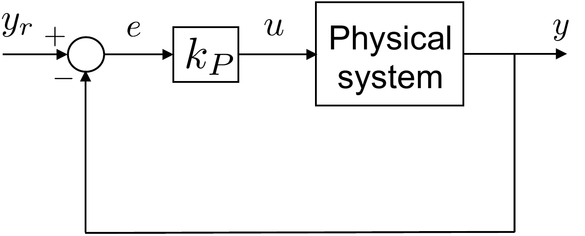
Figure 6.1. Proportional Control. The feedback
control is a gain kp multiplied by
the error.
Proportional control can be augmented with integral control to produce PI
control, as shown in
Fig.6.2. The basic idea is to
integrate the error so that the system responds to error accrued in the
past. The constant gain \(k_I\) is
called the integral gain.
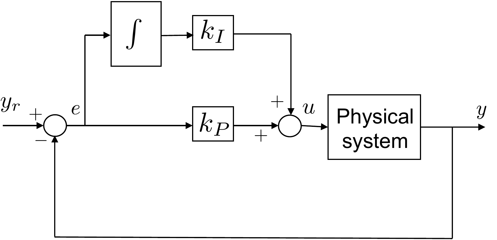
Figure 6.2. Proportional plus Integral (PI) Control.
The feedback control is a linear combination of proportional and
integral control.
Alternatively, proportional control can be augmented with a
derivative control as shown in
Fig.6.3. The idea is to respond to
how fast the error is changing, or the derivative of the error. The
constant gain \(k_D\) is called the
derivative gain.
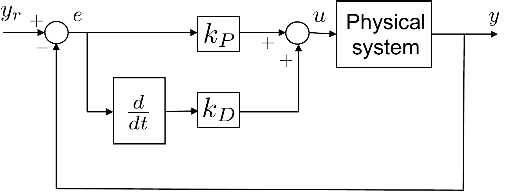
Figure 6.3. Proportional plus Derivative (PD)
Control. The feedback control is a linear combination of proportional
and derivative control.
When all three elements are used, as shown in
Fig.6.4, the resulting controller
is called a PID control. In
Part III of this book, we will explore
various aspects of PID control. Many of these concepts can be
generalized to other control schemes in later chapters, and so our study
of PID control will also help to motivate and understand more advanced
concepts.
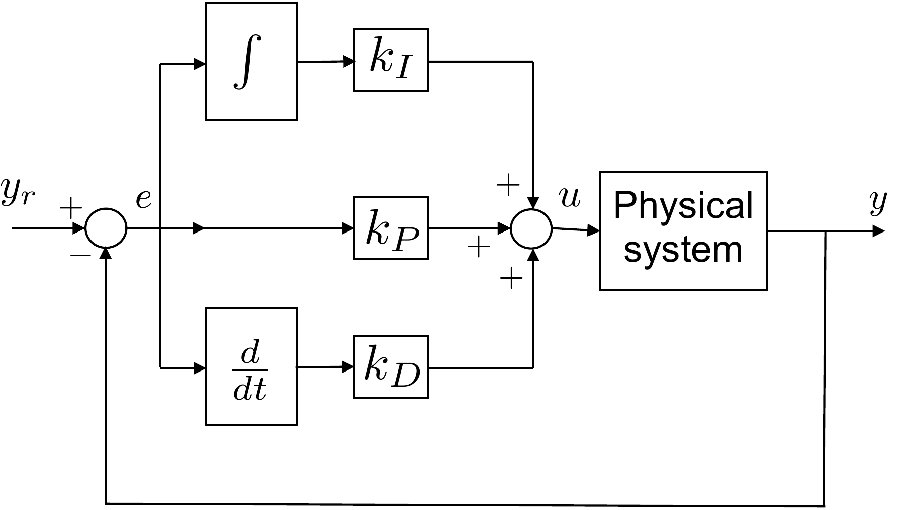
Figure 6.4. Proportional plus Integral plus
Derivative (PID) Control. The feedback control is a linear combination
of proportional, integral, and derivative control.
Intuition for PID control can be gained by considering the step
response shown in
Fig.6.5. At the beginning of the
response, there is a significant error between the current output \(y(t)\) and the reference command \(r(t)\). The proportional control term will
tend to push the system so as to reduce the gap between \(y(t)\) and \(r(t)\). As \(y(t)\) begins to change, a fast response
may lead to significant overshoot due to the momentum in the system.
Therefore, if it is moving too quickly, we may want to slow down the
response, or if it is moving too slowly, we may want to speed up the
response. Derivative control is used to affect these changes. After the
response has settled into steady state, there may be significant
steady-state error, as shown in
Fig.6.5. Integral control adds up this
steady error and will eventually act to reduce the steady-state error. A
good example is an aircraft in a constant crosswind. An integrator can
be used to correct the response of the aircraft so that it crabs into
the wind to maintain its desired flight path.
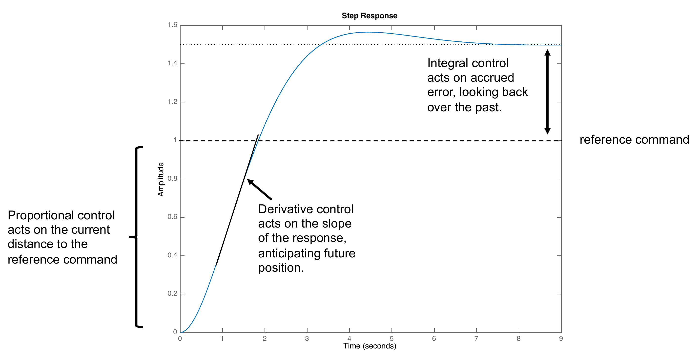
Figure 6.5. Intuitive interpretation of PID control.
Proportional control acts on the current error, integral control acts on
accrued past error, and derivative control acts on anticipated future
error.
Part III of the book is organized as
follows. In
Chapter 10 we will show how PD
control can be used to specify the desired closed-loop poles of a
second-order system. In
Chapter 11 we introduce the concepts
of rise time, natural frequency, and damping ratio for second-order
systems and show how these concepts relate to the location of the
closed-loop poles. We also show how these quantities can be used to
design PD controllers for second-order systems and cascades of
second-order systems. In
Chapter 12 we use the final value
theorem to show the effect of integrators on the closed-loop system. We
introduce the notion of system type in the context of reference
tracking and disturbance rejection. Finally, in
Chapter 13 we show how to
write computer code to implement PID controllers.
7 Pole Placement for Second-Order
Systems
7.1 Theory
Suppose that the model for a linearized physical system is given by
the second-order transfer function \[\label{eq:PD_open_loop_example}
P(s) = \frac{b_0}{s^2 + a_1s + a_0}.\] The open-loop
poles of the plant \(P(s)\) are defined to be the roots of the
open-loop characteristic polynomial\[\Delta_{ol}(s) = s^2 + a_1 s + a_0,\]
which are given by \[p_{ol} = -\frac{a_1}{2}
\pm \sqrt{\left(\frac{a_1}{2}\right)^2-a_0}.\] Note that the
open-loop poles are determined by the physical parameters and that the
poles may be in the right half-plane. If we use PD control to regulate the output
\(y\) to the reference command \(r\), then the block diagram is shown in
Fig.7.1.
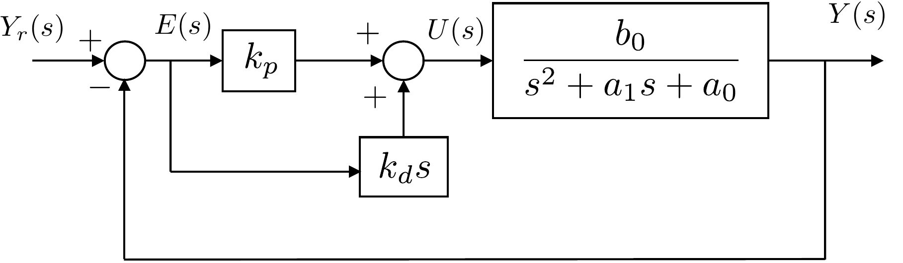
Figure 7.1. PD control of a second-order
system.
The transfer function for the closed-loop system can be derived by
noting from the block diagram that \[\begin{aligned}
& Y(s) = \left(\frac{b_0}{s^2 + a_1s + a_0}\right)\left(k_P + k_D
s\right)\left(R(s)-Y(s)\right) \notag \\
\implies & (s^2 + a_1s + a_0)Y(s) = \left(b_0k_P + b_0k_D
s\right)\left(R(s)-Y(s)\right) \notag \\
\implies & \left[(s^2 + a_1s + a_0)+\left(b_0k_P + b_0k_D
s\right)\right]Y(s) \\
& = \left(b_0k_P + b_0k_D s\right)R(s) \notag \\
\implies & (s^2 + (a_1 + b_0k_D)s + (a_0+b_0k_P))Y(s) \\
& = \left(b_0k_P + b_0k_D s\right)R(s) \notag \\
\implies & Y(s) = \frac{b_0k_D s + b_0k_P}{s^2 + (a_1 + b_0k_D)s +
(a_0+b_0k_P)}R(s). \label{eq:PD_closed_loop_example}
\end{aligned}\]
Equation 7.4
constitutes the closed-loop transfer function for the system under
the influence of PD control. The closed-loop poles are given by the roots
of the closed-loop characteristic polynomial\[\Delta_{cl}(s) = s^2 + (a_1+b_0k_D) s +
(a_0+b_0k_P),\] which are \[p_{cl} =
-\frac{a_1 + b_0k_D}{2} \pm
\sqrt{\left(\frac{(a_1+b_0k_D)}{2}\right)^2-(a_0+b_0k_P)}.\] Note
that the closed-loop poles can be specified by the designer by selecting
\(k_P\) and \(k_D\). The basic idea is to select desired
closed-loop poles \(-p_1^d\) and \(-p_2^d\) and then to form the desired
characteristic polynomial \[\Delta_{cl}^d(s) = (s+p_1^d)(s+p_2^d)
\stackrel{\triangle}{=}s^2 + \alpha_1 s + \alpha_0.\] By setting
\(\Delta_{cl}(s)=\Delta_{cl}^d(s)\) we
can equate the leading coefficients of each term of the polynomial and
solve for the gains \(k_P\) and \(k_D\) as \[\begin{aligned}
k_P &= \frac{\alpha_0-a_0}{b_0} \\
k_D &= \frac{\alpha_1-a_1}{b_0}.
\end{aligned}\]
One of the disadvantages to the PD architecture shown in
Fig.7.1 is the introduction of a
zero in the closed-loop transfer function. Note that while the open-loop
system 7.1
does not have a zero, the closed-loop
system 7.4
has a zero at \[z_{cl} = -
\frac{k_P}{k_D}.\] The presence of the zero will modify the
closed-loop response of the system. A simple trick that removes the zero
is to use the control structure shown in
Fig.7.2. In this particular case,
the differentiator acts only on the output \(y\) and not on the error \(e\). Notice the change of sign on the
signal coming from the differentiator.
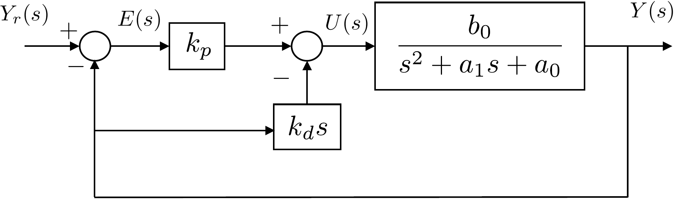
Figure 7.2. PD control of a second-order system,
where the derivative control only differentiates the output y and not the error e.
In this case the closed-loop transfer function is calculated as \[\begin{aligned}
& Y(s) = \left(\frac{b_0}{s^2 + a_1s + a_0}\right)\left(k_P
(R(s)-Y(s)) - k_D s Y(s) \right) \notag \\
\implies & (s^2 + a_1s + a_0)Y(s) = \left(b_0k_P (R(s)-Y(s)) -
b_0k_D s Y(s) \right) \notag \\
\implies & \left[(s^2 + a_1s + a_0)+\left(b_0k_P + b_0k_D
s\right)\right]Y(s) = b_0k_P R(s) \notag \\
\implies & (s^2 + (a_1 + b_0k_D)s + (a_0+b_0k_P))Y(s) = b_0k_P R(s)
\notag \\
\implies & Y(s) = \frac{b_0k_P}{s^2 + (a_1 + b_0k_D)s +
(a_0+b_0k_P)}R(s). \label{eq:PD_closed_loop_example_2}
\end{aligned}\] Note that the closed-loop transfer
function 7.5
has the same poles as
Equation 7.4,
but that the zero has been removed. An added benefit to the structure
shown in
Fig.7.2 is that when \(r(t)\) is a step input, the derivative can
introduce a large signal spike in \(u(t)\). These large spikes are removed by
only differentiating \(y(t)\) instead
of \(e(t)=r(t)-y(t)\).
(a) Given the open-loop transfer function found in problem
3.1.6, find the open-loop poles
of the system, when the equilibrium angle is \(\theta_e=0\).
(b) Using the PD control architecture shown in
Fig.7.2, find the closed-loop
transfer function from \(r_{\theta}\)
to \(\theta\) and find the closed-loop
poles as a function of \(k_P\) and
\(k_D\).
(c) Select \(k_P\) and \(k_D\) to place the closed-loop poles at
\(p_1=-3\) and \(p_2=-4\).
(d) Using the gains from part (c), implement the PD control for the
single-link robot arm in simulation and plot the step response for an
amplitude of 30 degrees.
Design Study A guided exercise
Compute the PD gains
Match the closed-loop
characteristic polynomial to desired poles at \(-3\) and \(-4\).
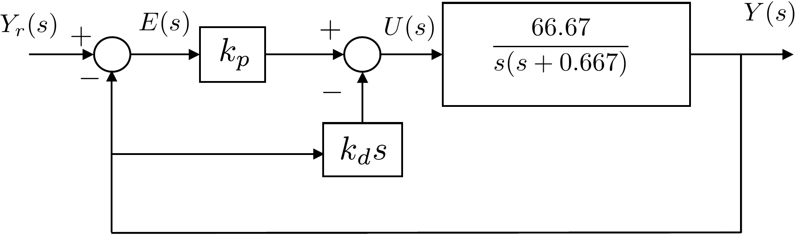
Use this PD feedback structure to derive the
closed-loop characteristic polynomial.
Step 1. Desired characteristic polynomial
Show solution for Step
1
Answer:\((s+3)(s+4)=s^2+7s+12\).
Step 2.
PD gains
Show solution for Step
2
Answer: Matching coefficients
gives \(k_P=0.18\) and \(k_D=0.095\).
Pseudocode
The complete solution includes a PD
controller class and a simulation script. Before opening it, outline
each component separately.
These prompts are ungraded. They are
intended to connect the gain calculation to the implementation code in
the complete solution.
Complete solution
The open-loop transfer function from homework 3.1.6 is \[\Theta(s) =
\left(\frac{\frac{3}{m\ell^2}}{s^2+\frac{3b}{m\ell^2}s}\right)\tilde{\tau}(s).\]
Using the parameters from Section 3.1
gives \[\Theta(s) =
\left(\frac{66.67}{s^2+0.667s}\right)\tilde{\tau}(s).\] The
open-loop poles are therefore the roots of the open loop polynomial
\[\Delta_{ol}(s) = s^2+0.667s,\] which
are given by \[p_{ol} = 0, -0.667.\]
Using PD control, the closed-loop system is therefore shown in
Fig.7.3.
Figure 7.3. PD control of the single-link robot
arm.
The transfer function of the closed-loop system is given by \[\begin{aligned}
& \Theta(s) = \left(\frac{66.67}{s^2+0.667s}\right)\left(k_P
(R_\theta(s)-\Theta(s)) - k_D s \Theta(s) \right) \\
\implies & (s^2+0.667s)\Theta(s) = \left(66.67k_P
(R_\theta(s)-\Theta(s)) - 66.67k_D s \Theta(s) \right) \\
\implies & (s^2 + (0.667 + 66.67k_D)s + 66.67k_P)\Theta(s) =
66.67k_P R_\theta(s) \\
\implies & \Theta(s) = \frac{66.67k_P}{s^2 + (0.667 + 66.67k_D)s +
66.67k_P}R_\theta(s).
\end{aligned}\] Therefore, the closed-loop poles are given by the
roots of the closed-loop characteristic polynomial \[\Delta_{cl}(s) = s^2 + (0.667 + 66.67k_D)s +
66.67k_P\] which are given by \[p_{cl}
= -\frac{(0.667 + 66.67k_D)}{2} \pm \sqrt{ \left(\frac{(0.667 +
66.67k_D)}{2}\right)^2 - 66.67k_P}\] If the desired closed-loop
poles are at \(-3\) and \(-4\), then the desired closed-loop
characteristic polynomial is \[\begin{aligned}
\Delta_{cl}^d &= (s+3)(s+4) \\
&= s^2 + 7s + 12.
\end{aligned}\] Equating the actual closed-loop characteristic
polynomial \(\Delta_{cl}\) with the
desired characteristic polynomial \(\Delta_{cl}^d\) gives \[s^2 + (0.667 + 66.67k_D)s + 66.67k_P = s^2 + 7s +
12,\] or by equating each term we get \[\begin{aligned}
0.667 + 66.67k_D &=7 \\
66.67k_P &= 12.
\end{aligned}\] Solving for \(k_P\) and \(k_D\) gives \[\begin{aligned}
k_P &= 0.18 \\
k_D &= 0.095.
\end{aligned}\]
A Python class that implements a PD controller for the single link
robot arm is shown below.
# 3rd-partyimport numpy as np# local (controlbook)import case_studies.A_arm.params as Pfrom case_studies.common.controller_base import ControllerBaseclass ArmControllerPD(ControllerBase):def__init__(self, use_feedback_linearization: bool=True):# tuning parameters p1 =-3.0 p2 =-4.0# system parameters b0 = P.tf_num[-1] a1, a0 = P.tf_den[-2:]# desired characteristic equation parameters# des_CE: s^2 + alpha1*s + alpha0 = s^2 + (a1 + b0*kd)s + (a0 + b0*kp) des_CE = np.poly([p1, p2]) alpha1, alpha0 = des_CE[-2:]# find gainsself.kp = (alpha0 - a0) / b0self.kd = (alpha1 - a1) / b0print(f"{self.kp =:.2f}, {self.kd =:.3f}")self.tau_eq = P.tau_eqself.use_feedback_linearization = use_feedback_linearizationdef update_with_measurement(self, r, y):raiseNotImplementedError("This controller only uses state feedback.")def update_with_state(self, r, x):# unpack references and states theta_ref = r[0] theta, thetadot = x# theta (modified) PD error = theta_ref - theta tau_tilde =self.kp * error -self.kd * thetadotifself.use_feedback_linearization: tau_fl = P.m * P.g * P.ell /2* np.cos(theta) tau = tau_tilde + tau_flelse: # use equilibrium (Jacobian linearization)# NOTE: likely not work well (or at all) for large angles tau = tau_tilde +self.tau_eq u = np.array([tau])return u
Code that simulates closed-loop system is given below.
Complete simulation code for MATLAB, Python, and Simulink can be
downloaded at http://controlbook.byu.edu.
7.3 Interactive PD Pole Placement
Check
Chapter 7 activity
Match desired poles to PD gains
For a plant b0/(s2+a1s+a0),
choose desired closed-loop poles at -sigma +/- j omegad. The
activity computes the desired characteristic equation and the PD gains.
Plant
denominatorDesired characteristic
equationPD gainsClosed-loop coefficient
checkDamping
ratioNatural
frequency
Derivative gain changes the coefficient on s, while proportional gain
changes the constant term in the second-order characteristic equation.
7.4 Knowledge Check
Q1.
Transient response
In PD pole
placement, what primarily determines the closed-loop transient
response?
Q2.
Derivative gain
For the chapter's
second-order PD design equation, which term does derivative gain
directly affect?
Q3. Desired polynomial
For desired poles at -2 +/- j3, enter the constant coefficient of the
desired polynomial.
Show solution
Answer: 13, because σ2 +
ωd2 = 22 + 32.
Q4. Proportional gain
For the plant and desired closed-loop coefficient
a0 = 1, b0 = 2, a0 +
b0kP = 13,
enter the proportional gain kP.
Show solution
Answer: 6, because kP = (13 - 1)/2.
Q5. Derivative gain
For the plant and desired coefficient on s,
a1 = 1, b0 = 2, a1 +
b0kD = 4,
enter the derivative gain kD.
Show solution
Answer: 1.5, because kD = (4 - 1)/2.
Q6. Damping from pole location
Which stable pole pair is the most
underdamped?
Q7. Natural frequency trend
If damping ratio is held fixed and natural
frequency is increased, what usually happens to rise time?
Q8. Coefficient matching
A
closed-loop characteristic polynomial is s2 + 4s + k. To
match desired poles at -2 +/- j1, what value of k is needed?
7.5 Notes and References
The concept of using feedback to place the poles of the system at
desired locations is a much deeper topic than is covered in this
chapter. While the method discussed in this chapter is only applicable
to second-order systems, it is usually possible to arbitrarily assign
the poles for an \(n^{th}\) order
system. In general, to assign \(n\)
poles will require \(n\) gains. We will
discuss pole placement in more detail in
Chapter 14 of this book.
8 Design Strategies for
Second-Order Systems
8.1 Theory
In the previous section we saw that for second-order systems, PD
control could be used to exactly specify the pole location of the
closed-loop system. This chapter examines the design problem of how to
select the pole locations to achieve desired
behavior. In
Section 11.1.1 we derive the
relationship between a single pole location and the step
response of the system. In
Section 11.1.2 we show that the
time-domain response for a second-order system can be understood in
terms of natural frequency and damping
ratio. Finally, in
Section 11.1.3 we show the effect that
a zero has on the step response of a second-order system.
8.1.1 First Order Response
Consider a first-order system given by \[Y(s) = \frac{p}{s+p} U(s),\] where \(p>0\). The pole location of the
first-order system is at \(-p\). If
\(U(s)=\frac{A}{s}\) is a step of
magnitude \(A\), then \[Y(s) = \frac{Ap}{s(s+p)}.\] As shown in
Appendix 29, the inverse Laplace
transform is given by \[\label{eq:PID_first_order_response}
y(t) = \begin{cases} A(1-e^{-pt}), & t\geq 0 \\ 0, &
\text{otherwise} \end{cases}.\] The response is shown in
Fig.8.1,
which shows the response to steps of size \(A=1\), \(A=2\), and \(A=3\), respectively.
Interactive Figure 8.I1
First-order step response
Adjust the pole location p and the step magnitudes A to see how
y(t)=A(1-e-pt) changes. The 90 percent rise time is
independent of A, but the initial slope is A p.
Interactive
Figure 8.I1. Step response of a first-order system with pole parameter p
and step magnitude A. The step magnitude changes the final value and
initial slope, while the normalized 90 percent rise time is set by
p.
Live response values
Pole
Rise time
Initial slope
If we define the rise time \(t_r\) of the system to be the time after
the step when the response reaches 90% of its final value, then we note
from
Fig.8.1
that the rise time is independent of the step size \(A\). Also, by differentiating
Equation 8.1
at time \(t=0\), it is straightforward
to show that the slope of the response at \(t=0\) is equal to \(Ap\). This is also shown graphically in
Fig.8.1.
When \(A=1\), the step response for
different pole locations is shown in
Fig.8.2.
Pole locations corresponding to \(p=1\), \(p=2\), and \(p=4\) are shown. Note that as the pole
location moves further into the left half of the complex plane, the rise
time decreases.
Figure 8.2.
Interactive step response of a first-order system. Use the slider to
vary pole location (p); larger (p) values move the pole further left and
produce a faster rise time.
An important concept for the steady-state response of a system is the
DC gain, which is defined as
follows.
The DC gain of a transfer function \(H(s)\) is \[\left.H(s)\right|_{\text{DC gain}} = \lim_{s\to
0} H(s).\]
An important fact is that if the poles of \(H(s)\) are in the open left half-plane,
then the response of \(H(s)\) to a step
of size \(A\) approaches \(A\left.H(s)\right|_{\text{DC gain}}\) as
\(t\to\infty\). This is true for
first-order systems, as well as general \(H(s)\). For example, the DC gain of the
first-order system \(H(s) =
\frac{q}{s+p}\) is \(\frac{q}{p}\), as long as \(p>0\).
8.1.2 Second-Order Response
Suppose that the closed-loop system has a second-order transfer
function with two real poles and no zeros: \[Y(s) = \frac{K}{(s+p_1)(s+p_2)}R(s).\] To
find the output of the system when the input is a step of magnitude
\(A\), we find the inverse Laplace
transform of \[Y(s) =
\frac{K}{(s+p_1)(s+p_2)}\frac{A}{s}.\] Using partial fraction
expansion we get \[Y(s)
= \frac{\frac{KA}{p_1p_2}}{s} +
\frac{\frac{KA}{(-p_1)(p_2-p_1)}}{s+p_1} +
\frac{\frac{KA}{(-p_2)(p_1-p_2)}}{s+p_2}.\] Taking the inverse
Laplace transform gives \[y(t) = \begin{cases}
\frac{KA}{p_1p_2} + \frac{KA}{(-p_1)(p_2-p_1)}e^{-p_1t} +
\frac{KA}{(-p_2)(p_1-p_2)} e^{-p_2t}, & t\geq 0 \\
0, & \text{otherwise}
\end{cases}.\] Note that as \(t\to\infty\), \(y(t)\to \frac{KA}{p_1p_2}\), which is equal
to the step size \(A\) times the DC
gain of the system.
Now suppose that the closed-loop system has two complex poles and no
zeros. We will write a generic second-order system with poles in the
left half-plane using the notation \[H(s) =
\frac{K\omega_n^2}{s^2 + 2\zeta\omega_n s + \omega_n^2},\] where
\(K\) is the DC gain of the system
(typically \(K=1\)), \(\omega_n>0\) is called the natural
frequency, and \(\zeta>0\) is called the damping
ratio. The poles are given by
the roots of the characteristic polynomial \[\Delta(s) = s^2 + 2\zeta\omega_n s +
\omega_n^2=0,\] in other words, the poles are \[\begin{aligned}
p_{1,2} &= -\zeta\omega_n \pm \sqrt{(\zeta\omega_n)^2-\omega_n^2} \\
&= -\zeta\omega_n \pm \omega_n\sqrt{\zeta^2-1}.
\end{aligned}\] If \(0<\zeta<1\), then the roots are
complex and given by \[\label{eq:complex_poles}
p_{1,2} = -\zeta\omega_n \pm j\omega_n\sqrt{1-\zeta^2}.\] Using
the Python code
import control as cnt
import matplotlib.pyplot as plt
#start by varying the natural frequency
plt.figure(1), plt.clf()
zeta = 0.707
for wn in [0.5, 1.0, 2.0, 5.0]:
G = cnt.tf(wn**2, [1, 2*zeta*wn, wn**2])
t,y = cnt.step_response(G)
plt.plot(t, y)
plt.plot([0, 20.0] , [1, 1], 'k--')
plt.xlabel('Time (seconds)')
plt.ylabel('Amplitude')
plt.title('Step Response')
plt.legend(('wn=0.5', 'wn=1.0', 'wn=2.0', 'wn=5.0'))
#now we'll see the effect of varying zeta
plt.figure(2), plt.clf()
wn = 1.0
for zeta in [0.2, 0.4, 0.707, 1.0, 2.0]:
G = cnt.tf(wn**2, [1, 2*zeta*wn, wn**2])
t,y = cnt.step_response(G)
plt.plot(t, y)
plt.plot([0, 35.0] , [1, 1], 'k--')
plt.xlabel('Time (seconds)')
plt.ylabel('Amplitude')
plt.title('Step Response')
plt.legend(('zeta=0.2', 'zeta=0.4', 'zeta=0.707',
'zeta=1.0', 'zeta=2.0'))
plt.show() # necessary to make plots appear
we obtain second-order response plots similar to the
ones shown in
Figures 8.3
and 8.4.
Note from
Fig.8.3
that as the natural frequency increases, the rise time
decreases. We should note that a
similar phenomenon to
Fig.8.1
also occurs, where the rise time is independent of the size of the step.
Note from
Fig.8.4
that the damping ratio affects the amount of ringing in the system. For
a small damping ratio, e.g., \(\zeta=0.2\), there is a large overshoot and
significant ringing in the system. At the other extreme, when \(\zeta\) is larger than one, the poles are
real and the response is highly damped. The sweet spot is when \(\zeta=0.707\), where the rise time is small
but the overshoot is minimal.
Figure 8.3.
Interactive second-order step response with fixed damping ratio ζ =
0.707. Use the slider to vary natural frequency ω_n; increasing ω_n
decreases rise time.
Figure 8.4.
Interactive second-order step response with fixed natural frequency ω_n
= 1. Use the slider to vary damping ratio ζ; lower ζ increases overshoot
and ringing.
Note from
Equation 8.2 that when \(\zeta = 0.707 = \frac{1}{\sqrt{2}}\), the
poles are at \[p_{1,2} =
-\frac{\omega_n}{\sqrt{2}} \pm j\frac{\omega_n}{\sqrt{2}}.\] In
the complex plane, the pole locations are shown in
Fig.8.5, where \(\omega_n\) is the distance from the origin
to the poles. When \(\zeta=\frac{1}{\sqrt{2}}\) the angle \(\theta\) equals \(45\) degrees.
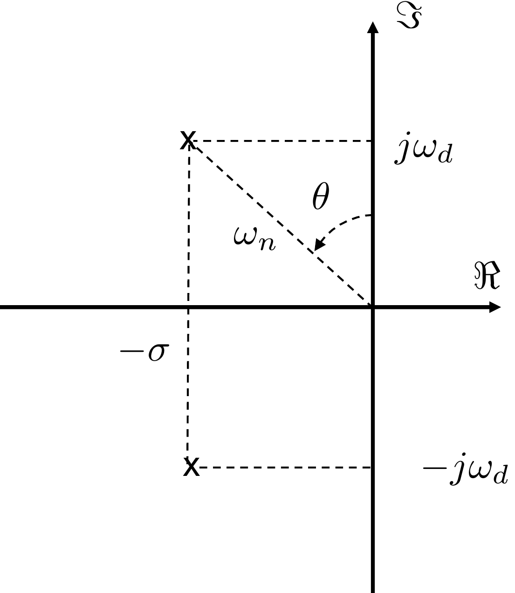
Figure 8.5. Complex conjugate poles in the left
half-plane.
In rectangular coordinates, the poles are given by \[\label{eq:complex_rectangular}
p_{1,2} = -\sigma \pm j\omega_d,\] as shown in
Fig.8.5.
Equations 8.2
and 8.3
give \[\begin{aligned}
\sigma &= \zeta \omega_n \\
\omega_d &= \omega_n\sqrt{1-\zeta^2}.
\end{aligned}\] From
Fig.8.5 it is also clear that
\[\sin\theta = \frac{\sigma}{\omega_n} =
\zeta.\] Therefore \[\theta =
\sin^{-1} \zeta.\]
Since the pole locations are at \(-\zeta\omega_n \pm
\omega_n\sqrt{\zeta^2-1}\), the poles are both real if \(\zeta\geq 1\). When \(\zeta=1\) the poles are both located at
\(-\omega_n\). When \(0<\zeta<1\) the poles are imaginary
and occur in complex conjugate pairs. As shown in
Fig.8.6, we say that the system
is overdamped when \(\zeta>1\), we say that the system is
critically damped when \(\zeta=1\), and we say that the system is
underdamped when \(0<\zeta<1\).
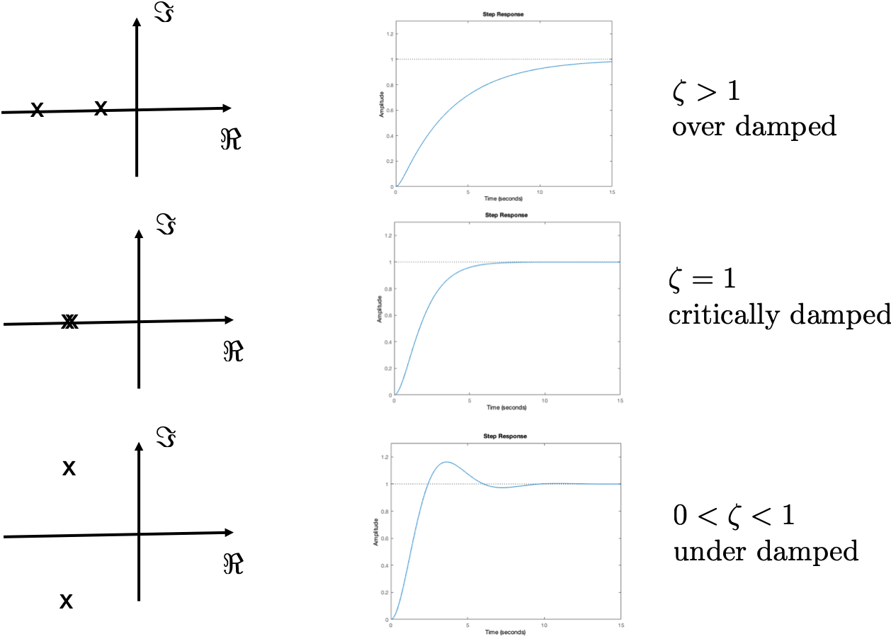
Figure 8.6. Second-order response as a function of
the damping ratio ζ.
Figure 8.6 (Interactive). Adjust damping ratio zeta to see under-damped,
critically-damped, and over-damped regimes.
The response of \(H(s)\) to a step
of size \(A\) is the inverse Laplace
transform of \[Y(s) =
\frac{A\omega_n^2}{s(s^2+2\zeta\omega_n s + \omega_n^2)},\]
which, as shown in
Appendix 29, when the poles are
complex results in \[\label{eq:y_time_response}
y(t) = A\left[ 1-\frac{1}{\sqrt{1-\zeta^2}}e^{-\sigma
t}\cos\left(\omega_d t -
\tan^{-1}\left(\frac{\sigma}{\omega_d}\right)\right)\right].\] A
plot of this signal is shown in
Fig.8.7.
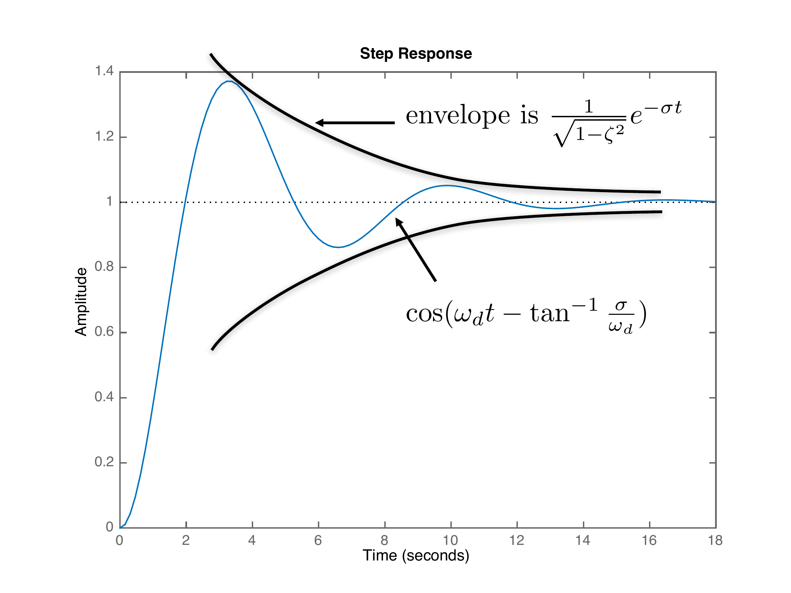
Figure 8.7. Second-order response. The steady-state
value is A. The response
envelope decays exponentially, and the oscillation frequency and phase
shift are set by the complex pole locations.
The rise time is defined to be the
time that it takes the output to transition from 10% to 90% of its final
value \(A\). A suitable approximation
is that the rise time is one half of the peak time, which is the time
when \(y(t)\) reaches its first peak.
To find the peak time \(t_p\),
differentiate \(y(t)\) in
Equation 8.4 and then
solve for the first instance when the derivative is zero. The result is
\[t_p = \frac{\pi}{\omega_d} =
\frac{\pi}{\omega_n\sqrt{1-\zeta^2}}.\] Therefore, the rise time
is approximately \[t_r \approx \frac{1}{2}t_p
= \frac{1}{2}\frac{\pi}{\omega_n\sqrt{1-\zeta^2}}.\] When \(\zeta=0.707\) we get \[\label{eq:rise_time}
t_r \approx \frac{2.2}{\omega_n}.\]
Specifications for second-order systems are usually given either in
terms of the rise time \(t_r\) and the
damping ratio \(\zeta\), or in terms of
the natural frequency \(\omega_n\) and
the damping ratio \(\zeta\).
8.1.3 Effect of a Zero on the Step
Response
In the previous section, we looked at the step response when there
were two complex poles and no zeros. In this section we will briefly
discuss the effect of zeros on the step response
of the system. This is a topic that
we could treat at a much deeper level.
A transfer function is called rational if it is the ratio of
two polynomials in \(s\). For example,
\[H(s) = \frac{s+1}{s^3+3s^2+s+4}\] is
a rational transfer function, whereas \[H(s)
= \frac{(s+1)e^{-s}}{s^3+3s^2+s+4}\] is not. A rational transfer
function can be written as \[H(s) =
\frac{N(s)}{D(s)},\] where \(N(s)\) is the numerator polynomial and
\(D(s)\) is the denominator polynomial.
The zeros of the transfer function are roots of the equation
\(N(s)=0\), and the poles of the system
are the roots of the equation \(D(s)=0\).
One way to understand the effect of zeros is to consider the effect
that zeros have on the partial fraction expansion of a transfer
function. For a review of partial fraction expansion, see
Appendix 29. First consider a
two-pole system with characteristic equation given by \(\Delta(s) = (s+2)(s+3)\). The transfer
function with DC gain equal to one and without zeros is given by \[H(s) = \frac{6}{(s+2)(s+3)}.\] The
response to a unit step is given by \[\begin{aligned}
y(t) &= \mathcal{L}^{-1}\left\{\frac{6}{s(s+2)(s+3)}\right\} \notag
\\
&= \mathcal{L}^{-1}\left\{ \frac{1}{s} + \frac{-3}{s+2} +
\frac{2}{s+3}\right\} \notag \\
&= 1 - 3e^{-2t} + 2e^{-3t}, \quad t\geq 0.
\label{eq:response_no_zero}
\end{aligned}\] Now consider the step response when a zero has
been added at \(z=-2.1\) and the gain
adjusted so that the DC gain is still one, i.e., when \[H(s) =
\frac{\frac{6}{2.1}(s+2.1)}{(s+2)(s+3)}.\] The response to a unit
step is given by \[\begin{aligned}
y(t) &=
\mathcal{L}^{-1}\left\{\frac{\frac{6}{2.1}(s+2.1)}{s(s+2)(s+3)}\right\}
\\
&= \mathcal{L}^{-1}\left\{ \frac{1}{s} + \frac{-0.1429}{s+2} +
\frac{-0.8571}{s+3}\right\}\\
&= 1 - 0.1429e^{-2t} - 0.8571e^{-3t}, \quad t\geq 0.
\end{aligned}\] Note that \(y(t)\) still settles to one, but the
response of the pole at \(-2\) has
almost been removed. If, however, the zero is far away from the poles,
then the effect is much less. Suppose that the zero is at \(z=-60\) and the gain is adjusted so that
the DC gain is still one, i.e., \[H(s) =
\frac{\frac{6}{60}(s+60)}{(s+2)(s+3)}.\] The response to a unit
step is given by \[\begin{aligned}
y(t) &=
\mathcal{L}^{-1}\left\{\frac{\frac{6}{60}(s+60)}{s(s+2)(s+3)}\right\} \\
&= \mathcal{L}^{-1}\left\{ \frac{1}{s} + \frac{-2.9}{s+2} +
\frac{1.9}{s+3}\right\}\\
&= 1 - 2.9e^{-2t} + 1.9e^{-3t}, \quad t\geq 0.
\end{aligned}\] In this case, the response is similar to
Equation 8.6.
Another way to understand the effect of zeros on the system is to
recall that an \(s\) in the numerator
is essentially a differentiator. Therefore \[\begin{aligned}
H(s) &= \frac{\omega_n^2(\tau s+1)}{s^2 + 2\zeta\omega_n s +
\omega_n^2} \\
&= \tau\frac{\omega_n^2 s}{s^2 + 2\zeta\omega_n s + \omega_n^2}
+ \frac{\omega_n^2}{s^2 + 2\zeta\omega_n s + \omega_n^2}.
\end{aligned}\] Therefore, the step response is given by \[\begin{aligned}
y(t) &= \mathcal{L}^{-1}\left\{\tau\frac{\omega_n^2s}{s(s^2 +
2\zeta\omega_n s + \omega_n^2)} + \frac{\omega_n^2}{s(s^2 +
2\zeta\omega_n s + \omega_n^2)}\right\} \\
&= \tau\frac{d}{dt}\mathcal{L}^{-1}\left\{\frac{\omega_n^2}{s(s^2 +
2\zeta\omega_n s + \omega_n^2)}\right\}
%
+ \mathcal{L}^{-1}\left\{\frac{\omega_n^2}{s(s^2 + 2\zeta\omega_n s
+ \omega_n^2)}\right\}.
\end{aligned}\] Therefore, the effect of the zero is to add \(\tau\) times the derivative of the step
response to what the step response would have been without the zero.
Fig.8.8
shows the step response for different values of \(\tau\), illustrating that adding a zero has
a strong effect on the rise time and damping of the response. Note also
that when \(\tau<0\), i.e., when
zeros are in the right half-plane, the system response first goes
negative before going positive. Right-half-plane zeros are often called
nonminimum-phase zeros , and the associated
response is often called a nonminimum-phase response. Physical systems
that have right-half-plane zeros include the inverted pendulum and
aircraft altitude-control systems. For the inverted pendulum, to move
the cart to the right from a stopped position, the cart must first move
left so that the rod leans right before the cart can move to its desired
position. Similarly, an aircraft pitches up to climb. However, when the
aircraft pitches up, it loses speed, which causes it to lose lift and
altitude. As the aircraft loses altitude, it gains speed and produces
the lift necessary to climb.
Figure 8.8.
Interactive step response of a second-order system with a single zero.
Vary tau to see the effect of left-half-plane and right-half-plane zero
behavior.
8.1.4 Successive Loop Closure
The natural frequency \(\omega_n\)
and the damping ratio \(\zeta\) are
only defined for second-order systems, and therefore, the PD design
technique based on \(\omega_n\) and
\(\zeta\) are only valid for
second-order systems. However, these concepts can be extended to
higher-order systems through a technique called successive loop
closure, or inner-loop,
outer-loop design. When we derived the Laplace transform in
Chapter 8, we saw that for
many systems, the transfer functions can be arranged in cascade form as
shown in
Fig.8.9 where the input to the
system is \(u_1\) and the output is
\(y_2\), but where \(y_1\) and \(u_2\) are intermediary values that
represent the natural physical coupling between internal variables. Many
physical systems can be represented by a cascade of systems.
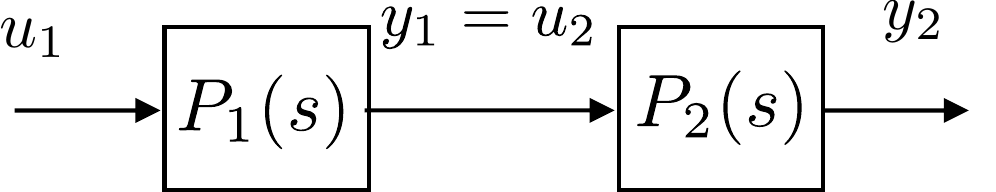
Figure 8.9. Open-loop transfer function modeled as a
cascade of two transfer functions.
When the system is represented as a cascade, the control strategy can
be designed using successive loop closure. The basic idea is to
close feedback loops in succession around the open-loop plant dynamics
rather than designing a single control system. To illustrate this
approach, consider the open-loop system shown in
Fig.8.9. The open-loop dynamics
are given by the product of two transfer functions in series: \(P(s)=P_1(s)P_2(s)\). We assume that each of
the transfer functions has an output (\(y_1\), \(y_2\)) that can be measured and used for
feedback. Typically, each of the transfer functions, \(P_1(s)\) and \(P_2(s)\), is of relatively low order –
usually first or second-order. In this case, we are interested in
controlling the output \(y_2\). Instead
of closing a single feedback loop around \(y_2\), we will close feedback loops around
\(y_1\) and \(y_2\) in succession as shown in
Fig.8.10.
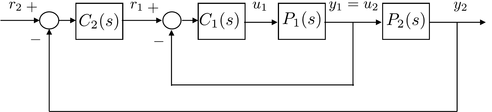
Figure 8.10. Successive loop closure
design.
We will design the compensators \(C_1(s)\) and \(C_2(s)\) in succession. A necessary
condition in the design process is that the inner loop must be much
faster than each successive loop. As a rule of thumb, if the rise time
of the inner loop is \(t_{r_1}\), the
rise time of the next loop should be 5 to 10 times longer, i.e., \(t_{r_2}> W_1 t_{r_1}\), where \(W_1\) is a design parameter, usually on the
order of \(5-10\). In
part V of this book,
we will talk about the frequency response of the system. At that time,
we will provide a deeper explanation that can be understood in terms of
the bandwidth of each successive loop.
Examining the inner loop shown in
Fig.8.10, the goal is to design a
closed-loop system from \(r_1\) to
\(y_1\) having a rise time of \(t_{r_1}\). If the rise time of the inner
loop is significantly faster than the rise time of the outer loop, and
if the DC gain of the inner loop is
\(k_{DC_1}\), then relative to the
outer loop the inner loop can be effectively modeled as the DC gain.
This is depicted schematically in
Fig.8.11. With the inner-loop
transfer function modeled as its DC gain, design of the outer loop is
simplified because it only includes the plant transfer function \(P_2(s)\) and the compensator \(C_2(s)\) and the DC gain \(k_{DC_1}\).
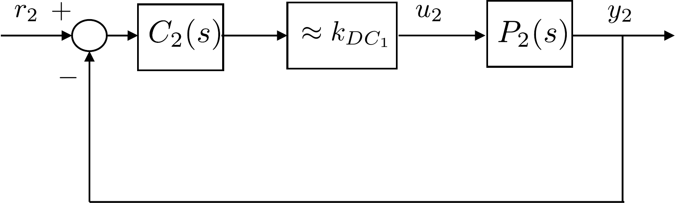
Figure 8.11. Successive loop closure design with inner
loop modeled as a unity gain.
Because both plant models \(P_1(s)\)
and \(P_2(s)\) are first or
second-order, conventional PID compensators can be employed. The
loopshaping techniques discussed in
Part V can also be
used for successive loop closure of higher-order systems.
8.1.5 Input Saturation and Limits
of Performance
A natural question is to ask if the rise time can be made arbitrarily
small. Unfortunately, saturation limits on the actuators place a lower
bound on the achievable rise time. All physical systems have saturation
limits on their actuators. For example, in the robot arm problem, the
torque that can be applied to the arm is limited by the motor that is
used to apply that torque. Force and torque will always be limited by
physical constraints like current limits. Similarly, for an airplane,
the rudder command is limited by how far the rudder can physically move,
which is typically on the order of \(\pm
40\) degrees. A natural way to model input constraints is to add
a saturation block preceding the physical plant.
Fig.8.12 shows a saturation
block in conjunction with a PD control scheme.
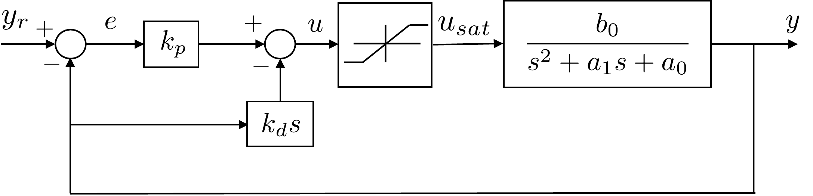
Figure 8.12. Control system with input saturation. The
input saturation places a lower bound on the achievable rise
time.
Mathematically, the saturation block is given by \[u_{sat} = \begin{cases}
u_{\max}, & \text{~if~} u\geq u_{\max} \\
u, & \text{~if~} -u_{\max} \leq u \leq u_{\max} \\
-u_{\max}, & \text{~otherwise}
\end{cases},\] where the input to the block is \(u\), the output is \(u_{sat}\), and the saturation limit is
\(u_{\max}\). Note that the saturation
block is non-linear. Therefore, one design strategy is to select the
feedback gains so that the system remains linear by keeping the input
out of saturation.
To see how this might be done, consider the second-order system shown
in
Fig.8.12 with proportional
feedback on the output error and derivative feedback on the output. When
the input is not saturated, the closed-loop transfer function is \[Y(s) = \left(\frac{b_0 k_p}{s^2 + (a_1 + b_0
k_D)s + (a_0 + b_0 k_p)}\right) R(s).
\label{eq:loop-sat-cl-tf}\] We can see that the closed-loop
poles of the system are defined by the selection of the control gains
\(k_p\) and \(k_D\). Note also that the actuator effort
\(u\) can be expressed as \(u=k_p e - k_D\dot{y}\). When \(\dot{y}\) is zero or small, the size of the
actuator effort \(u\) is primarily
governed by the size of the control error \(e\) and the control gain \(k_p\). If the system is stable, the largest
control effort in response to a step input will occur immediately after
the step when \(\dot{y}=0\). If the
system is to be kept just out of saturation, then immediately after the
step we have \(\left|u\right|=u_\text{max} =
k_p e_\text{max}\). Rearranging this expression, we find that the
proportional control gain can be determined from the maximum anticipated
output error and the saturation limits of the actuator as \[k_p = \pm \frac{u_\text{max}}{e_\text{max}},
\label{eq:loop-sat-kp}\] where \(u_{\max}\) is the maximum control effort
the system can provide, \(e_{\max}\) is
the step error that results from a step input of nominal size, and the
sign of \(k_p\) is determined by the
physics of the system.
Suppose that the desired closed-loop characteristic polynomial is
given by \[\Delta_{cl}^d(s) = s^2 +
2\zeta\omega_n s + \omega_n^2,\] then by comparing with the
actual closed-loop characteristic polynomial \[\Delta_{cl}(s) = s^2 + (a_1 + b_0 k_D)s + (a_0 +
b_0 k_p)\] we have that \[\begin{aligned}
\omega_n &= \sqrt{a_0 + b_0 k_p}
\leq \sqrt{a_0 + b_0 \frac{u_\text{max}}{e_\text{max}}},
\end{aligned}\] which is an upper limit on the natural frequency
of the closed-loop system, ensuring that saturation of the actuator is
avoided. The corresponding rise time constraint is \[t_r \geq \frac{2.2}{\omega_n} =
\frac{2.2}{\sqrt{a_0 + b_0 \frac{u_\text{max}}{e_\text{max}}}},\]
which is the smallest possible rise time for an error step of \(e_{\text{max}}\).
If the input has an equilibrium value, then the saturation constraint
used in the above calculation must be modified to account for the
equilibrium. For example, suppose that \(u=u_e+\tilde{u}\) where \(u_e\) is the equilibrium value and \(\tilde{u}\) is the output of the PID
controller. Also suppose that the input saturation constraint is given
by \(u_{\min}\leq u\leq u_{\max}\). The
objective is to find a value for \(\tilde{u}_{\max}\) where \(\left|\tilde{u}\right|\leq
\tilde{u}_{\max}\) guarantees that \(u_{\min}\leq u\leq u_{\max}\). We have that
\[\begin{aligned}
& u_{\min}\leq u \leq u_{\max} \\
\implies & u_{\min} \leq u_e + \tilde{u} \leq u_{\max} \\
\implies & u_{\min}-u_e \leq \tilde{u} \leq u_{\max}-u_e.
\end{aligned}\] The desired value for \(\tilde{u}_{\max}\) is therefore the minimum
(in absolute value) of the right and left-hand sides of this expression.
The situation is shown in
Fig.8.13, where it is clear
that the value for \(\tilde{u}_{\max}\)
can be written as \[\tilde{u}_{\max} =
\begin{cases}
\left|u_{\max}-u_e\right|, & \text{~if~} u_e \geq
\frac{u_{\max}+u_{\min}}{2} \\
\left|u_e - u_{\min}\right|, & \text{~if~} u_e \leq
\frac{u_{\max}+u_{\min}}{2}.
\end{cases}\]
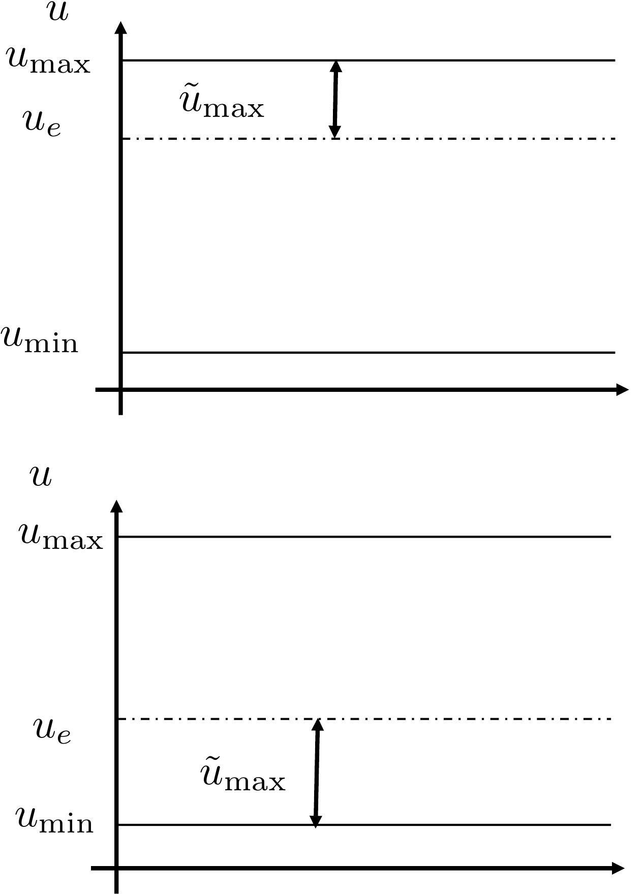
Figure 8.13. The saturation constraint for ũ depends on the value of the
equilibrium input ue.
The takeaway from this discussion is that the rise time is limited by
the input saturation constraint and cannot be made arbitrarily small. In
practice, the control parameters are tuned so that the closed-loop
system has the fastest possible rise time without driving the plant
input into saturation.
(a) Suppose that the design requirements are that the rise time is \(t_r \approx 0.8\) seconds, with a damping
ratio of \(\zeta=0.707\). Find the
desired closed-loop characteristic polynomial \(\Delta_{cl}^d(s)\) and the associated pole
locations. Find the proportional and derivative gains \(k_P\) and \(k_D\) to achieve these specifications, and
modify the simulation from
HW 3.1.8 to verify that the step
response satisfies the requirements.
(b) Suppose that the input torque for the robot arm is limited to \(\left|\tau\right|\leq\tau_{\max}=1\) Nm.
Modify the simulation to include a saturation on the torque \(\tau\). Using the rise time \(t_r\) and damping ratio \(\zeta\) as tuning parameters, tune the PD
control law so that the input just saturates when a step of size \(50\) degrees is placed on \(\tilde{r}_{\theta}\).
Design Study A guided exercise
Use rise time and damping ratio
Translate the
time-domain design specifications into a desired second-order
polynomial.
Step 1. Natural frequency rule
Show solution
for Step 1
Answer: Use \(\omega_n\approx 2.2/t_r\).
Step 2. Desired polynomial coefficients
Show solution for Step
2
Answer: The standard form is
\(s^2+2\zeta\omega_n s+\omega_n^2\).
Step 3. Saturation check
Show solution for Step
3
Answer: The gains can satisfy the
linear pole placement equations but still demand torque beyond the
actuator limit.
Pseudocode
The complete solution includes a PD
controller class and a simulation script. Before opening it, outline
each component separately.
These prompts are ungraded. They are
intended to connect the design specifications to the implementation code
in the complete solution.
Complete solution
A rise time of \(t_r\approx 0.8\)
seconds, implies that the natural frequency is \[\omega_n = 2.2/0.8 = 2.75.\] Therefore,
the desired characteristic polynomial is \[\label{eq:hwa10_1}
\Delta_{cl}^d = s^2 + 2\zeta\omega_n s + \omega_n^2 = s^2 + 3.889 s +
7.5625.\] From HW 3.1.7
the actual closed-loop characteristic polynomial is \[\label{eq:hwa10_2}
\Delta_{cl}(s) = s^2 + (0.667 + 66.67k_D)s + 66.67k_P.\] Equating
Equations 8.9 and 8.10
and solving for the gains gives \[\begin{aligned}
k_P &= 0.1134 \\
k_D &= 0.0483.
\end{aligned}\]
A Python class that implements a PD controller for the single link
robot arm is shown below.
# 3rd-partyimport numpy as np# local (controlbook)import case_studies.A_arm.params as Pfrom case_studies.common.controller_base import ControllerBaseclass ArmControllerPD(ControllerBase):def__init__(self, use_feedback_linearization: bool=True):# tuning parameters p1 =-3.0 p2 =-4.0# system parameters b0 = P.tf_num[-1] a1, a0 = P.tf_den[-2:]# desired characteristic equation parameters# des_CE: s^2 + alpha1*s + alpha0 = s^2 + (a1 + b0*kd)s + (a0 + b0*kp) des_CE = np.poly([p1, p2]) alpha1, alpha0 = des_CE[-2:]# find gainsself.kp = (alpha0 - a0) / b0self.kd = (alpha1 - a1) / b0print(f"{self.kp =:.2f}, {self.kd =:.3f}")self.tau_eq = P.tau_eqself.use_feedback_linearization = use_feedback_linearizationdef update_with_measurement(self, r, y):raiseNotImplementedError("This controller only uses state feedback.")def update_with_state(self, r, x):# unpack references and states theta_ref = r[0] theta, thetadot = x# theta (modified) PD error = theta_ref - theta tau_tilde =self.kp * error -self.kd * thetadotifself.use_feedback_linearization: tau_fl = P.m * P.g * P.ell /2* np.cos(theta) tau = tau_tilde + tau_flelse: # use equilibrium (Jacobian linearization)# NOTE: likely not work well (or at all) for large angles tau = tau_tilde +self.tau_eq u = np.array([tau])return u
Code that computes the control gains is given below.
(a) Using the principle of successive loop closure, draw a block diagram
that uses PD control for both inner loop control and outer loop control.
The input to the outer loop controller is the desired cart position
\(r_z\) and the output of the
controller is the desired pendulum angle \(r_{\theta}\). The input to the inner loop
controller is the desired pendulum angle \(r_{\theta}\) and the output is the force
\(F\) on the cart.
(b) Focusing on the inner loop, find the PD gains \(k_{P_\theta}\) and \(k_{D_\theta}\) so that the rise time of the
inner loop is \(t_{r_\theta}=0.5\) seconds, and the damping
ratio is \(\zeta_{\theta}=0.707\).
(c) Find the DC gain \(k_{DC_\theta}\) of
the inner loop.
(d) Replace the inner loop by its DC gain and consider the outer loop. Add a
low-pass filter that cancels the left-half-plane zero, and then design a
PD control strategy to stabilize the position of the cart.
(e) Implement the control design to control on the inverted pendulum. Modify
the simulation to include saturation on the force \(F\) to limit the size of the input force on
the cart to \(F_{\max}=5\) N. Give the
pendulum angle an initial condition of 10 deg and simulate the response
of the system for 10 seconds to verify that the cart is able to balance
the pendulum. You may also tune rise times or damping to improve
performance.
Design
Study B guided exercise
Organize the successive-loop
pendulum controller
Separate the inner angle loop from the
outer cart-position loop.
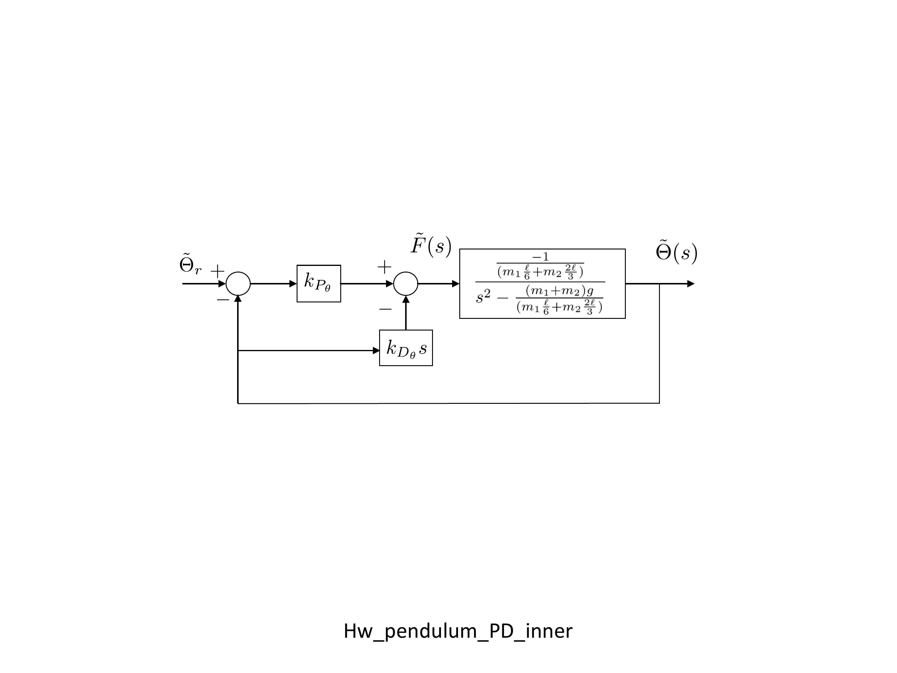
The inner loop stabilizes pendulum angle
before the outer loop commands cart position.
Step 1. Loop signal order
Show solution for Step
1
Answer: The outer position
command produces an angle command, which the inner loop converts to
force.
Step 2.
Inner-loop design target
Show
solution for Step 2
Answer: The
inner loop controls theta with a 0.5 second rise-time
target.
Step 3.
Outer-loop design feature
Show
solution for Step 3
Answer: A
low-pass filter is added in the outer loop to cancel the left-half-plane
zero.
Pseudocode
The complete solution includes a nested PD
controller class and a zero-canceling filter class. Before opening it,
outline each component separately.
These prompts are
ungraded. They are intended to connect the derivation to the
implementation code in the complete solution.
Complete solution
The block diagram for the inner loop is shown in
Fig.8.14.
Figure 8.14. Block diagram for inner loop of inverted
pendulum control
The closed-loop transfer function from \(\tilde{R}_{\Theta}\) to \(\tilde{\Theta}\) is given by \[\tilde{\Theta}(s) =
\frac{-\frac{k_{P_\theta}}{m_1 \frac{\ell}{6} +m_2\frac{2\ell}{3}}}{s^2
- \frac{k_{D_\theta}}{m_1 \frac{\ell}{6}
+m_2\frac{2\ell}{3}}s-\left(\frac{(m_1+m_2)g}{m_1 \frac{\ell}{6}
+m_2\frac{2\ell}{3}}+\frac{k_{P_\theta}}{m_1 \frac{\ell}{6}
+m_2\frac{2\ell}{3}}\right)} \tilde{R}_{\Theta}(s).\] Therefore,
the closed-loop characteristic equation is \[\Delta_{cl}(s) =s^2 - \frac{k_{D_\theta}}{m_1
\frac{\ell}{6} +m_2\frac{2\ell}{3}}s-\left(\frac{(m_1+m_2)g}{m_1
\frac{\ell}{6} +m_2\frac{2\ell}{3}}+\frac{k_{P_\theta}}{m_1
\frac{\ell}{6} +m_2\frac{2\ell}{3}}\right)\] The desired
closed-loop characteristic equation is \[\Delta_{cl}^d(s) = s^2 +
2\zeta_{\theta}\omega_{n_\theta} s + \omega_{n_\theta}^2,\] where
\[\begin{aligned}
\omega_{n_\theta} &= \frac{2.2}{t_{r_\theta}} = 4.4 \\
\zeta_{\theta} &= 0.707.
\end{aligned}\] Therefore \[\begin{aligned}
k_{P_\theta} &= -(m_1+m_2)g - \left(m_1 \frac{\ell}{6}
+m_2\frac{2\ell}{3}\right)\omega_{n_\theta}^2 = -26.0 \\
k_{D_\theta} &= -2\zeta_{\theta}\omega_{n_\theta}\left (m_1
\frac{\ell}{6} +m_2\frac{2\ell}{3}\right) = -4.41.
\end{aligned}\] The DC gain of the inner loop is given by \[k_{DC_{\theta}} =
\frac{k_{P_\theta}}{(m_1+m_2)g+k_{P_\theta}} = 1.89.\]
Replacing the inner loop by its DC gain, the block diagram for the
outer loop is shown in Fig.8.15.
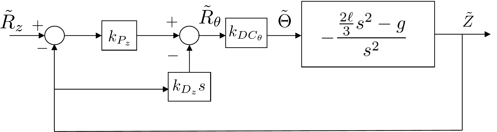
Figure 8.15. Block diagram for outer loop of inverted
pendulum control.
The closed-loop transfer function from \(\tilde{R}_z\) to \(\tilde{Z}\) is given by \[\tilde{Z}(s) =
\frac{\frac{k_{P_z}}{k_{D_z}}(s^2-\frac{3g}{2\ell})}{s^3 + s^2 (\frac{
k_{P_z}}{k_{D_z}}-\frac{3}{2 k_{DC_\theta} k_{D_z} \ell} ) - s \frac{3
g}{2 \ell} - \frac{3 k_{P_z} g}{2 k_{D_z} \ell}} \tilde{R}_z.\]
Note that the DC gain for the outer loop is equal to one. The
closed-loop characteristic equation is \[\Delta_{cl}(s) = s^3 + s^2 (\frac{
k_{P_z}}{k_{D_z}}-\frac{3}{2 k_{DC_\theta} k_{D_z} \ell}) - s \frac{3
g}{2 \ell} - \frac{3 k_{P_z} g}{2 k_{D_z} \ell}.\] Since the
desired characteristic equation is \[\label{eq:delta_cl_d_pendulum_outer}
\Delta_{cl}^d(s) = s^2 + 2\zeta_z\omega_{n_z}s +
\omega_{n_z}^2,\] it is not possible to pick PD gain values that
will create a match between the actual characteristic equation and the
desired characteristic equation.
To resolve this problem, note that the transfer function of the outer
loop can be written as \[H(s) =
\frac{-\frac{2\ell}{3}s^2 + g}{s^2}
= \frac{-\frac{2\ell}{3}(s +
\sqrt{\frac{3g}{2\ell}})(s-\sqrt{\frac{3g}{2l}})}{s^2},\] where
we see that the system has two zeros, one in the right half-plane and
one in the left half-plane. The strategy for making the numerator
polynomial have degree one is to add a low-pass filter after the PD
controller that attempts to cancel the left-half-plane zero, as shown in
Figure 8.16. An important
part of this filter is also including an additional gain to cancel the
effect of \(K_{DC_\theta}\), which is
not one.
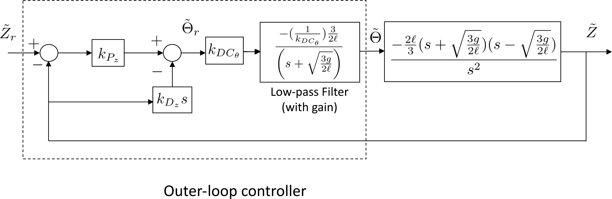
Figure 8.16. Block diagram for outer loop of inverted
pendulum control, with low-pass filter to cancel the LHP
zero.
After accounting for the cancellations introduced by the low-pass
filter, the equivalent closed-loop system is shown in Figure 8.17.
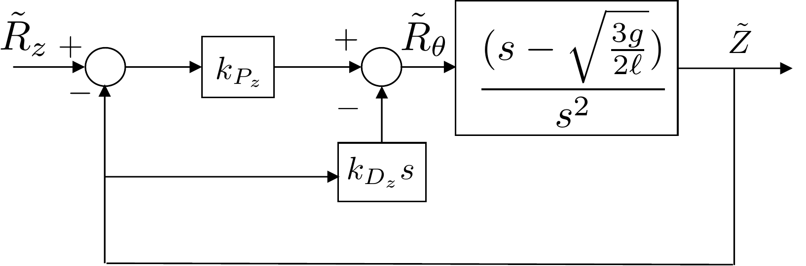
Figure 8.17. Block diagram for the equivalent outer
loop of inverted pendulum control with low-pass filter.
In this case, the closed-loop characteristic equation from \(\tilde{R}_z\) to \(\tilde{Z}\) is given by \[\tilde{Z}(s) = \left(
\frac{\left(\frac{k_{P_z}}{1+k_{D_z}}\right)
(s-\sqrt{\frac{3g}{2\ell}})}
{s^2 + \left(\frac{k_{P_z} -
k_{D_z}\sqrt{\frac{3g}{2\ell}}}{1+k_{D_z}}\right)s -
\frac{k_{P_z}\sqrt{\frac{3g}{2\ell}}}{1+k_{D_z}}}
\right) \tilde{R}_z.\] Setting the closed-loop
characteristic equation equal to the desired closed-loop characteristic
equation in Equation 8.11
gives \[\begin{aligned}
- \sqrt{\frac{3g}{2\ell}} \frac{k_{P_z}}{1+k_{D_z}} &=
\omega_{n_z}^2 \\
\frac{k_{P_z}}{1+k_{D_z}} -
\sqrt{\frac{3g}{2\ell}}\frac{k_{D_z}}{1+k_{D_z}} &= 2\zeta_z
\omega_{n_z},
\end{aligned}\] which implies that \[\begin{aligned}
\frac{k_{P_z}}{1+k_{D_z}} &= - \sqrt{\frac{2\ell}{3g}}
\omega_{n_z}^2 \stackrel{\triangle}{=}a \\
\frac{k_{D_z}}{1+k_{D_z}} &= \sqrt{\frac{2\ell}{3g}}
\left[\frac{k_{P_z}}{1+k_{D_z}} - 2\zeta_z \omega_{n_z} \right] \\
&= \sqrt{\frac{2\ell}{3g}} \left[-
\sqrt{\frac{2\ell}{3g}} \omega_{n_z}^2 - 2\zeta_z \omega_{n_z}
\right] \stackrel{\triangle}{=}b.
\end{aligned}\] Solving for the gains in terms of \(a\) and \(b\) gives \[\begin{aligned}
k_{D_z} &= \frac{b}{1-b} \\
k_{P_z} &= \frac{a}{1-b}.
\end{aligned}\]
A Python class that implements a PD controller for the inverted
pendulum is shown below.
# 3rd-partyimport numpy as np# local (controlbook)# TODO: decide whether to use global vs relative imports for public case studies# (it might depend on what you want to show up in the book)import case_studies.B_pendulum.params as Pfrom case_studies.common.controller_base import ControllerBase# from . import params as Pclass CartPendulumControllerPD(ControllerBase):def__init__(self):# tuning parameters tr_theta =0.5# original tr_theta =0.15# tuned to saturate for single time step zeta_theta =0.707 M =10# time separation factor between inner and outer loop tr_z = tr_theta * M zeta_z =0.707# system parameters a1_inner, a0_inner = P.tf_inner_den[-2:] b0_inner = P.tf_inner_num[-1] b2_outer, _, b0_outer = P.tf_outer_num# Inner loop wn_theta =2.2/ tr_theta alpha0_inner = wn_theta**2 alpha1_inner =2* zeta_theta * wn_thetaself.kp_theta = (alpha0_inner - a0_inner) / b0_innerself.kd_theta = (alpha1_inner - a1_inner) / b0_innerprint(f"Inner loop (theta): {self.kp_theta =:.3f}, {self.kd_theta =:.3f}")# DC gain of inner loop DC_gain = (b0_inner *self.kp_theta) / (a0_inner + b0_inner *self.kp_theta)print(f"{DC_gain =:.3f}")# Outer loop wn_z =2.2/ tr_z zero_LHP =-np.sqrt(b0_outer /-b2_outer) a = wn_z**2/ zero_LHP # eq 8.12 from controlbook b = (a -2* zeta_z * wn_z) /-zero_LHP # eq 8.13 from controlbookself.kd_z = b / (1- b)self.kp_z = a * (1+self.kd_z)print(f"Outer loop (z): {self.kp_z =:.3f}, {self.kd_z =:.3f}")self.filter= ZeroCancelingFilter(zero_LHP, DC_gain)def update_with_measurement(self, r, y):raiseNotImplementedError("This controller only uses state feedback.")def update_with_state(self, r, x): z_ref = r[0] z, theta, zdot, thetadot = x# outer loop control error_z = z_ref - z theta_ref_pre =self.kp_z * error_z -self.kd_z * zdot# low-pass filter the reference angle to cancel the zero and DC gain theta_ref =self.filter.update(theta_ref_pre) r[1] = theta_ref # if you want to visualize the "reference" angle# inner loop control error_theta = theta_ref - theta F =self.kp_theta * error_theta -self.kd_theta * thetadot u_unsat = np.array([F]) u =self.saturate(u_unsat, u_max=P.force_max)return uclass ZeroCancelingFilter:def__init__(self, zero_LHP, DC_gain):# TODO: book uses b for numerator coeffcients and a for denominator# coefficients for all of the system transfer functions, so why does it# switch here? (I switched them so b is on top...is that OK?)# system parameters sys_b2 = P.tf_outer_num[0]# low-pass filter parametersself.b0 =1/ (sys_b2 * DC_gain)self.a0 =-zero_LHPself.state =0.0def update(self, input_):# Euler (RK1) integration state_dot =-self.a0 *self.state +self.b0 * input_self.state =self.state + state_dot * P.tsreturnself.state
Complete simulation code for MATLAB, Python, and Simulink can be
downloaded at http://controlbook.byu.edu.
(a) For the simple satellite system, using the principle of successive loop
closure, draw a block diagram that uses PD control for the inner and the
outer loop control. The input to the outer loop controller is the
desired angle of the solar panel \(r_{\phi}\) and the output is the desired
angle of the satellite \(r_{\theta}\).
The input to the inner loop controller is \(r_{\theta}\) and the output is the torque
on the satellite \(\tau\).
(b) Focusing on the inner loop, find the PD gains \(k_{P_\theta}\) and \(k_{D_\theta}\) so that the rise time of the
inner loop is \(t_{r_\theta}=1\) second, and the damping
ratio is \(\zeta_{\theta}=0.9\).
(c) Find the DC gain \(k_{DC_\theta}\) of
the inner loop.
(d) Replacing the inner loop by its DC gain, find the PD gains \(k_{P_\phi}\) and \(k_{D_\phi}\) so that the rise time of the
outer loop is \(t_{r_\phi}= 10
t_{r_\theta}\) with damping ratio \(\zeta_{\phi}=0.9\).
(e) Implement the successive loop closure design for the satellite system in
simulation where the commanded solar panel angle is given by a square
wave with magnitude \(15\) degrees and
frequency \(0.015\) Hz.
(f) Suppose that the size of the input torque on the satellite is limited to
\(\tau_{\max}=5\) Nm. Modify the
simulation to include saturation on the torque \(\tau\). Use rise time as a tuning parameter
and tune the PD control law to get the fastest possible response without
input saturation when a step of size \(30\) degrees is placed on \(r_\phi\).
Design Study C guided exercise
Plan the satellite successive-loop controller
Use the
body loop as the fast inner loop and the flexible-panel loop as the
slower outer loop.
Step 1. Signal
architecture
Show solution for Step
1
Answer: The inner loop controls
\(\theta\) using \(\tau\); the outer loop controls \(\phi\) by commanding \(r_\theta\).
Step 2.
Inner-loop design target
Show solution for
Step 2
Answer: The inner-loop
target is \(t_{r_\theta}=1\) s and
\(\zeta_\theta=0.9\), giving \(k_{DC_\theta}=1\) in the approximation
used here.
Step 3. Outer-loop
separation
Show solution for Step
3
Answer: The outer rise time is
chosen as \(t_{r_\phi}=10t_{r_\theta}\). Faster tuning risks
torque saturation and flexible-panel oscillation.
Pseudocode
Before opening the implementation code,
outline the nested PD controller and saturation check.
Complete solution
The block diagram for the inner loop is shown in
Fig.8.18.
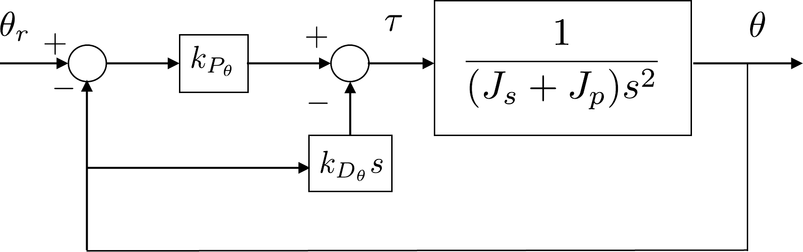
Figure 8.18. Block diagram for inner loop of satellite
control
The closed-loop transfer function from \(R_{\theta}\) to \(\Theta\) is given by \[%
\Theta(s) = \frac{\frac{k_{P_\theta}}{J_s + J_p}}{s^2
+\left(\frac{k_{D_\theta}}{J_s +
J_p}\right)s+\left(\frac{k_{P_\theta}}{J_s + J_p}\right)}
R_{\theta}(s).\] Therefore, the closed-loop characteristic
equation is \[%
\Delta_{cl}(s) = s^2 +\left(\frac{k_{D_\theta}}{J_s +
J_p}\right)s+\left(\frac{k_{P_\theta}}{J_s + J_p}\right).\] The
desired closed-loop characteristic equation is \[\Delta_{cl}^d(s) = s^2 +
2\zeta_{\theta}\omega_{n_\theta} s + \omega_{n_\theta}^2,\]
where
\[\begin{aligned}
\omega_{n_\theta} &=
\frac{1}{2}\frac{\pi}{t_{r_\theta}\sqrt{1-\zeta_{\theta}^2}} \\
\zeta_{\theta} &= 0.9.
\end{aligned}\] Therefore \[\begin{aligned}
%
k_{P_\theta} &= \omega_{n_\theta}^2(J_s + J_p) = 77.9 \\
%
k_{D_\theta} &= 2\zeta_{\theta}\omega_{n_\theta}(J_s + J_p) = 38.9.
\end{aligned}\] The DC gain of the inner loop is given by \[%
k_{DC_{\theta}} = 1.\]
Replacing the inner loop by its DC gain, the block diagram for the
outer loop is shown in Fig.8.19.
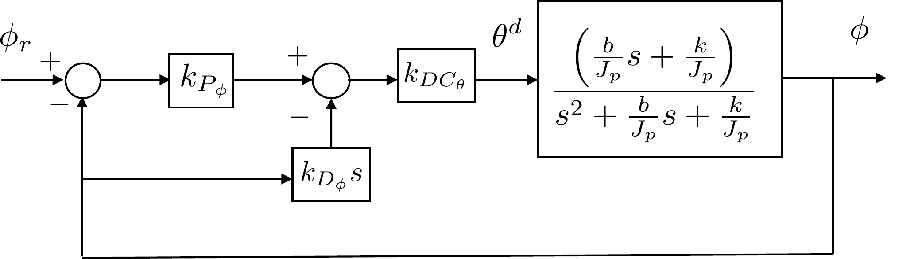
Figure 8.19. Block diagram for outer loop of satellite
attitude control
To find the closed-loop transfer function from \(r_{\phi}\) to \(\phi\), follow the loop backwards from
\(\phi\) to obtain \[\Phi(s) =
\left(\frac{\frac{b}{J_p}s+\frac{k}{J_p}}{s^2+\frac{b}{J_p}s+\frac{k}{J_p}}\right)\left[k_{DC_\theta}k_{P_\phi}(\Phi_r-\Phi)-k_{DC_\theta}k_{D_\phi}s\Phi\right].\]
After some manipulation we get \[\begin{gathered}
\big[(J_p+bk_{DC_\theta}k_{D_\phi})s^2 +
(b+bk_{DC_\theta}k_{P_\phi}+kk_{DC_\theta}k_{D_\phi})s
+ (k+kk_{DC_\theta}k_{P_\phi})\big]\Phi \\ =
\left[bk_{DC_\theta}k_{P_\phi}s+kk_{DC_\theta}k_{P_\phi}\right]\Phi_r,
\end{gathered}\] which results in the monic transfer function
\[\Phi(s)=\frac{\left(\frac{bk_{DC_\theta}k_{P_\phi}}{J_p+bk_{DC_\theta}k_{D_\phi}}\right)s+\left(\frac{kk_{DC_\theta}k_{P_\phi}}{J_p+bk_{DC_\theta}k_{D_\phi}}\right)}{s^2
+
\left(\frac{b+bk_{DC_\theta}k_{P_\phi}+kk_{DC_\theta}k_{D_\phi}}{J_p+bk_{DC_\theta}k_{D_\phi}}\right)s
+
\left(\frac{k+kk_{DC_\theta}k_{P_\phi}}{J_p+bk_{DC_\theta}k_{D_\phi}}\right)}
\Phi_r.\] The desired closed-loop characteristic equation for the
outer loop is \[\Delta_{cl}^d(s) = s^2 +
2\zeta_{\phi}\omega_{n_\phi} s + \omega_{n_\phi}^2,\] where \[\begin{aligned}
t_{r_\phi} &= 10~t_{r_\theta} = 10 \\
\omega_{n_\phi} &=
\frac{1}{2}\frac{\pi}{t_{r_\phi}\sqrt{1-\zeta_{\phi}^2}} \\
\zeta_{\phi} &= 0.9.
\end{aligned}\] Therefore, the gains \(k_{P_\phi}\) and \(k_{P_\phi}\) satisfy \[\begin{aligned}
\frac{k+kk_{DC_\theta}k_{P_\phi}}{J_p+bk_{DC_\theta}k_{D_\phi}} &=
\omega_{n_\phi}^2 \\
\frac{b+bk_{DC_\theta}k_{P_\phi}+kk_{DC_\theta}k_{D_\phi}}{J_p+bk_{DC_\theta}k_{D_\phi}}
&= 2\zeta_{\phi}\omega_{n_\phi}.
\end{aligned}\] Expressing these equations in matrix form gives
\[\begin{pmatrix} kk_{DC_\theta} &
-bk_{DC_\theta}\omega_{n_\phi}^2 \\ bk_{DC_\theta} &
kk_{DC_\theta}-2bk_{DC_\theta}\zeta_\phi\omega_{n_\phi}
\end{pmatrix}\begin{pmatrix}k_{P_\phi}\\k_{D_\phi}\end{pmatrix} =
\begin{pmatrix} -k + J_p\omega_{n_\phi}^2 \\ -b +
2J_p\zeta_\phi\omega_{n_\phi} \end{pmatrix},\] implying that
\[\begin{aligned}
%
\begin{pmatrix}k_{P_\phi}\\k_{D_\phi}\end{pmatrix} &=
\begin{pmatrix} kk_{DC_\theta} & -bk_{DC_\theta}\omega_{n_\phi}^2 \\
bk_{DC_\theta} &
kk_{DC_\theta}-2bk_{DC_\theta}\zeta_\phi\omega_{n_\phi}
\end{pmatrix}^{-1}
\begin{pmatrix} -k + J_p\omega_{n_\phi}^2 \\ -b +
2J_p\zeta_\phi\omega_{n_\phi} \end{pmatrix} \\
&= \begin{pmatrix} 0.834 \\ 8.253 \end{pmatrix}
\end{aligned}\]
The DC gain of the outer loop is given by \[%
k_{DC_{\phi}} =
\frac{kk_{DC_\theta}k_{P_\phi}}{k+kk_{DC_\theta}k_{P_\phi}} =
0.455.\] Note that the DC gain of the outer loop is not equal to
one, so there will be significant steady-state error. To remedy this, a
feedforward term can be used to ensure that \(\theta\) and \(\phi\) are made to be equal in steady
state, resulting in an overall DC gain of one. This configuration is
depicted in Fig.8.20.
Feedforward control will be discussed in a later chapter.
Figure 8.20. Block diagram for outer loop of satellite
attitude control with a feedforward term.
A Python class that implements a PD controller using state feedback
is shown below.
# 3rd-partyimport numpy as np# local (controlbook)import case_studies.C_satellite.params as Pfrom case_studies.common.controller_base import ControllerBaseclass SatelliteControllerPD(ControllerBase):def__init__(self):# tuning parameters tr_theta =1.5# original already saturated, so increased rise time. zeta_theta =0.9 M =10# time separation factor between inner and outer loop tr_phi = tr_theta * M zeta_phi =0.9# system parameters a1_inner, a0_inner = P.tf_inner_den[-2:] b0_inner = P.tf_inner_num[-1]# Inner loop wn_theta =0.5* np.pi / (tr_theta * np.sqrt(1- zeta_theta**2)) alpha0_inner = wn_theta**2 alpha1_inner =2* zeta_theta * wn_thetaself.kp_theta = (alpha0_inner - a0_inner) / b0_innerself.kd_theta = (alpha1_inner - a1_inner) / b0_innerprint(f"Inner loop (theta): kp = {self.kp_theta:.3f}, kd = {self.kd_theta:.3f}")# DC gain of inner loop DC_theta = (b0_inner *self.kp_theta) / (a0_inner + b0_inner *self.kp_theta)print(f"{DC_theta =}") # a0 is 0, so DC_gain is 1# Outer loop wn_phi =0.5* np.pi / (tr_phi * np.sqrt(1- zeta_phi**2)) AA = DC_theta * np.array( [ [P.k, -P.b * wn_phi**2], [P.b, P.k - P.b *2* zeta_phi * wn_phi], ] ) bb = np.array([-P.k + P.Jp * wn_phi**2, -P.b + P.Jp *2* zeta_phi * wn_phi])self.kp_phi, self.kd_phi = np.linalg.solve(AA, bb)print(f"Outer loop (phi): kp = {self.kp_phi:.3f}, kd = {self.kd_phi:.3f}")# DC gain of outer loop DC_phi = P.k * DC_theta *self.kp_phi / (P.k + P.k * DC_theta *self.kp_phi)print(f"{DC_phi =:.3f}")self.tau_eq = P.u_eq[0]def update_with_measurement(self, r, y):raiseNotImplementedError("This controller only uses state feedback.")def update_with_state(self, r, x):# unpack references and states phi_ref = r[1] theta, phi, thetadot, phidot = x# outer loop (modified) PD error_phi = phi_ref - phi theta_ref_tilde =self.kp_phi * error_phi -self.kd_phi * phidot theta_ref_ff = phi_ref # feedforward term because outer loop DC gain isn't 1 theta_ref = theta_ref_tilde + theta_ref_ff r[0] = theta_ref # if you want to visualize the "reference" angle# inner loop (modified) PD error_theta = theta_ref - theta tau_tilde =self.kp_theta * error_theta -self.kd_theta * thetadot tau = tau_tilde +self.tau_eq u_unsat = np.array([tau]) u =self.saturate(u_unsat, u_max=P.torque_max)return u
Complete simulation code for MATLAB, Python, and Simulink can be
downloaded at http://controlbook.byu.edu.
8.5 Coding Lab: PD Controller
Implementation
Figure 8.21. Block-diagram setup for the Chapter 8 coding lab on
second-order closed-loop control.
Plant
model used in this lab:
ÿ +
2ζωnẏ +
ωn2y =
ωn2u
Section 8.6 coding lab objective: complete the
controller template and use the targeted checks to evaluate
step-response performance for the second-order system.
Evaluation criteria: rise time ≤ 1.2 s,
overshoot ≤ 20 percent, and steady-state error ≤ 0.03.
Use the code editor to complete the controller class.
Use these quick checks to test understanding of Chapter 8 concepts
before moving on.
Q1. Effect of ωn
If ζ is fixed and ωn increases,
what happens to rise time?
Show
solution
Answer: B. Larger
ωn usually yields a faster response and shorter rise
time.
Q2. Damping classification
Which damping range gives an oscillatory step
response in a standard second-order system?
Show
solution
Answer: C. Complex
conjugate poles (underdamped case) produce oscillation and possible
overshoot.
Q3. Pole
interpretation
A system has poles at s
= -0.8 ± j1.5. Enter the damping type.
Show
solution
Answer: Underdamped.
Nonzero imaginary parts indicate oscillatory
behavior.
Q4. Overshoot trend
If ωn is fixed and ζ increases
from 0.3 to 0.9, what happens to percent overshoot?
Show
solution
Answer: B. Increasing
damping ratio reduces oscillation and
overshoot.
Q5. Effect of a nonminimum-phase zero
Changing the zero parameter to produce
nonminimum-phase behavior most directly causes:
Show
solution
Answer: B. A
nonminimum-phase zero can produce an inverse initial
response.
Q6. PD
characteristic equation
For unity
negative feedback with \(P(s)=\frac{2}{s^2+3s+1}\) and \(C(s)=k_P+k_Ds\), which characteristic equation should
be used for pole placement?
Q7. Matching desired poles
Using
the same plant and controller, the desired poles are -2 +/- j2. Which
gains match the desired characteristic polynomial?
Q8.
Pole-placement tradeoff
Why is it
usually not a good design rule to place the closed-loop poles as far
left as possible?
8.7 Notes and References
9 System Type and Integrators
9.1 Theory
In the previous chapter we explored design techniques for
second-order systems where the feedback controller was a PD-type
control. Since second-order systems have two degrees of freedom, their
transient response can be completely determined by the proportional and
derivative gains. However, from the simulation results it can easily be
observed that if there is a disturbance on the system, or if the
controller does not know the system parameters exactly, then there will
be a steady-state error in the output. The steady-state error can be
effectively removed using an integrator in the control law. In this
chapter we will explore these ideas in more detail and explain when and
how integral control can be used to enhance steady-state tracking and to
reduce the effect of disturbances.
9.1.1 Final Value Theorem
The key theoretical tool to understanding the steady-state
error and the effect of
integrators is the final value
theorem, which we state and prove below.
.
Suppose that \(z(t)\) and \(Z(s)\) are Laplace transform pairs, and
suppose that \(\lim_{t\to\infty}z(t)\)
is finite, then \[\lim_{t\to\infty}z(t) =
\lim_{s\to 0} sZ(s).\]
Interactive check
Final value theorem validity explorer
The final value theorem is useful only when the final value exists.
Select a transform, predict whether the theorem applies, and then check
the poles of sY(s).
Step 1: form sY(s)
Step 2: check poles of sY(s)
Step 3: make a prediction before checking
Algebraic limit
Interpretation
Process
Compute sY(s).
Check the poles of sY(s).
If the pole check is valid, compute lims->0 sY(s).
Interpret that value as the final value.
Numeric final-value check
For Y(s) = 3 / (s(s + 4)), enter the final value
if the final value theorem applies.
Show
solution
Answer: 0.75. Since sY(s)
= 3/(s + 4), the pole is at s = -4 and the theorem applies;
lims->0 3/(s + 4) = 3/4.
9.1.2 System Type for Reference
Tracking
Figure 9.1. Block diagram for reference
tracking.
Consider the closed-loop system shown in
Fig.9.1. The transfer
function from the reference \(r\) to
the error \(e=r-y\) is computed as
\[\begin{aligned}
& E(s) = R(s) - P(s)C(s)E(s) \\
\implies & E(s) = \frac{1}{1+P(s)C(s)}R(s)
\end{aligned}\]
Suppose that \(r(t)\) is a step of
size one, then \(R(s)=\frac{1}{s}\) and
\[E(s) =
\frac{1}{1+P(s)C(s)}\frac{1}{s}.\] Assuming that the closed-loop
system is stable and therefore that \(\lim_{t\to\infty}e(t)\) is finite, then the
final value theorem gives \[\begin{aligned}
\lim_{t\to\infty}e(t) &= \lim_{s\to 0} sE(s) \\
&= \lim_{s\to 0} s\frac{1}{1+P(s)C(s)}\frac{1}{s} \\
&= \lim_{s\to 0}\frac{1}{1+P(s)C(s)} \\
&= \frac{1}{1+\lim_{s\to 0} P(s)C(s)}.
\end{aligned}\] Let \[M_p
\stackrel{\triangle}{=}\lim_{s\to 0} P(s)C(s),\] then \[\lim_{t\to\infty}e(t) =
\frac{1}{1+M_p}.\]
Now suppose that \[P(s)C(s) =
\frac{K(s+z_1)(s+z_2)\cdots(s+z_m)}{(s+p_1)(s+p_2)\cdots(s+p_n)},\]
then \[M_p = \lim_{s\to 0} P(s)C(s) =
\frac{Kz_1z_2\cdots z_m}{p_1p_2\cdots p_n}.\] In this case, the
steady-state error is \(\frac{1}{1+M_p}\) which is finite. Note
also that the DC gain of the closed-loop system is \[k_{DC} = \frac{1}{1+M_p}.\]
Now suppose that \(P(s)C(s)\)
contains a pole at the origin, or in other words, one free integrator,
i.e., \[P(s)C(s) =
\frac{K(s+z_1)(s+z_2)\cdots(s+z_m)}{s(s+p_1)(s+p_2)\cdots(s+p_n)}.\]
In this case we have \[M_p = \lim_{s\to 0}
P(s)C(s) = \infty,\] and the steady-state error is \[\lim_{t\to\infty}e(t) = \frac{1}{1+\infty} =
0.\] Therefore, one free integrator in \(P(s)C(s)\) implies that the steady-state
error to a step is zero. Note that multiple free integrators, i.e.,
\[P(s)C(s) =
\frac{K(s+z_1)(s+z_2)\cdots(s+z_m)}{s^q(s+p_1)(s+p_2)\cdots(s+p_n)},\]
gives that same result for \(q\geq
1\).
Now suppose that \(r(t)\) is a unit
ramp, or in other words that \(R(s)=\frac{1}{s^2}\). In this case the
error is given by \[E(s) =
\frac{1}{1+P(s)C(s)}\frac{1}{s^2}.\] Again assuming that the
closed-loop system is stable, the final value theorem gives \[\begin{aligned}
\lim_{t\to\infty} e(t) &= \lim_{s\to 0} sE(s) \\
&= \lim_{s\to 0} s \frac{1}{1+P(s)C(s)}\frac{1}{s^2} \\
&= \lim_{s\to 0} \frac{1}{s+sP(s)C(s)} \\
&= \frac{1}{\lim_{s\to 0} sP(s)C(s)}.
\end{aligned}\] Defining \[M_v =
\lim_{s\to 0} sP(s)C(s),\] gives \[\lim_{t\to\infty} e(t) = \frac{1}{M_v}.\]
If \(P(s)C(s)\) has no free
integrators, i.e., \[P(s)C(s) =
\frac{K(s+z_1)(s+z_2)\cdots(s+z_m)}{(s+p_1)(s+p_2)\cdots(s+p_n)}\]
then \[M_v = \lim_{s\to 0}
s\frac{K(s+z_1)(s+z_2)\cdots(s+z_m)}{(s+p_1)(s+p_2)\cdots(s+p_n)} =
0.\] Therefore \[\lim_{t\to\infty}
e(t) = \frac{1}{0}=\infty.\] If, on the other hand, \(P(s)C(s)\) has one free integrator, i.e.,
\[P(s)C(s) =
\frac{K(s+z_1)(s+z_2)\cdots(s+z_m)}{s(s+p_1)(s+p_2)\cdots(s+p_n)}\]
then \[M_v = \lim_{s\to 0} s
\frac{K(s+z_1)(s+z_2)\cdots(s+z_m)}{s(s+p_1)(s+p_2)\cdots(s+p_n)} =
\frac{Kz_1z_2\cdots z_m}{p_1p_2\cdots p_n},\] therefore the
steady-state error is finite. If \(P(s)C(s)\) has two or more free
integrators, then \[M_v = \lim_{s\to 0} s
\frac{K(s+z_1)(s+z_2)\cdots(s+z_m)}{s^q(s+p_1)(s+p_2)\cdots(s+p_n)} =
\infty,\] when \(q\geq 2\),
therefore \[\lim_{t\to\infty} e(t) =
\frac{1}{\infty} = 0.\] Therefore, the number of free integrators
in \(P(s)C(s)\) is the key parameter
for reference tracking with zero steady-state error.
For the reference tracking problem, we say that the system is
type \(q\) if the steady-state
error to input \(R(s) =
\frac{1}{s^{q+1}}\) is finite and if the steady-state error to
input \(R(s)=\frac{1}{s^p}\) is zero
for \(1\leq p\leq q\). In general, for
the feedback system shown in
Fig.9.1, the steady-state
tracking error when \(R(s)=\frac{1}{s^{q+1}}\) is given by \[\lim_{t\to\infty}e(t) = \lim_{s\to 0} s E(s) =
\lim_{s\to 0}
\left(\frac{1}{1+P(s)C(s)}\right)\left(\frac{1}{s^q}\right).\]
Table 12.1 summarizes the tracking
error for different inputs as a function of system type, where \[\begin{aligned}
M_p &= \lim_{s\to 0}P(s)C(s) \\
M_v &= \lim_{s\to 0}sP(s)C(s) \\
M_a &= \lim_{s\to 0}s^2P(s)C(s).
\end{aligned}\]
System Type
Step (\(\frac{1}{s}\))
Ramp (\(\frac{1}{s^2}\))
Parabola (\(\frac{1}{s^3}\))
\(\cdots\)
\(0\)
\(\frac{1}{1+M_p}\)
\(\infty\)
\(\infty\)
\(\cdots\)
\(1\)
\(0\)
\(\frac{1}{M_v}\)
\(\infty\)
\(\cdots\)
\(2\)
\(0\)
\(0\)
\(\frac{1}{M_a}\)
\(\cdots\)
\(3\)
\(0\)
\(0\)
\(0\)
\(\cdots\)
\(\vdots\)
\(\vdots\)
\(\vdots\)
\(\vdots\)
Reference tracking verse system type.
Interactive figure
Reference-tracking system type explorer
Use the controls to connect the table to a visual prediction. The input
order is determined by R(s), while the tracking type is determined by
the number of free integrators in P(s)C(s).
Figure 1.3. Reference and output. Finite steady-state error
appears as a persistent vertical gap.Figure 1.4. Error response. This is the plot that determines zero,
finite, or infinite steady-state error.Prediction
Why
Error constant effect
As an example, consider the feedback system shown in
Fig.9.2.
Figure 9.2. The system type for reference tracking
for this system is type 1.
The open-loop system \[P(s)C(s) =
\frac{k_P}{s(s+2)}\] has one free integrator (pole at zero) and
therefore the system is type 1. From
Table 12.1 the tracking error when the
input is a step is zero, and the tracking error when the input is a ramp
of slope one is \[\lim_{t\to\infty}e(t) =
\frac{1}{M_v} = \frac{1}{\lim_{s\to 0} sP(s)C(s)} =
\frac{1}{\frac{k_P}{2}} = \frac{2}{k_P}.\] The tracking error
when the input is a parabola, or higher-order polynomial, is \(\infty\), meaning that \(y(t)\) and \(r(t)\) diverge as \(t\to\infty\).
As another example, consider the system shown in
Fig.9.3.
Figure 9.3. The system type for reference tracking
for this system is type 0.
In this case, the open-loop system \[P(s)C(s) = \frac{k_D s +
k_P}{(s+3)(s+4)}\] does not have any free integrators (poles at zero) and
therefore the system is type 0. From
Table 12.1 the tracking error when the
input is a step is \[\lim_{t\to\infty}e(t) =
\frac{1}{1+M_p} = \frac{1}{1+\lim_{s\to 0} P(s)C(s)} =
\frac{1}{1+\frac{k_P}{12}} = \frac{12}{12+k_P}.\] The tracking
error when the input is a ramp, or higher-order polynomial, is \(\infty\), meaning that \(y(t)\) and \(r(t)\) diverge as \(t\to\infty\).
If, on the other hand, a PID controller is used as shown in
Fig.9.4 where \[U(s) = \left(k_P + \frac{k_I}{s} + k_D
s\right)E(s) = \left(\frac{k_D s^2 + k_P s +
k_I}{s}\right)E(s),\]
Figure 9.4. The system type for reference tracking
for this system is type 1.
then the open-loop system \[P(s)C(s) =
\frac{k_D s^2 + k_Ps + k_I}{s(s+3)(s+4)}\] has one free
integrator (pole at zero) and therefore the system becomes type 1 by
design. From
Table 12.1 the tracking error when the
input is a step is zero, and the tracking error when the input is a ramp
is \[\lim_{t\to\infty}e(t) = \frac{1}{M_v} =
\frac{1}{\lim_{s\to 0} sP(s)C(s)} = \frac{1}{\frac{k_I}{12}} =
\frac{12}{k_I}.\] The tracking error when the input is a
parabola, or higher-order polynomial, is \(\infty\), meaning that \(y(t)\) and \(r(t)\) diverge as \(t\to\infty\).
9.1.3 System Type for Input
Disturbances
Consider the general feedback loop shown in
Fig.9.5. There are in
general four inputs to the system, namely the reference input \(r(t)\), the input disturbance \(d_{in}(t)\), the output disturbance \(d_{out}(t)\), and the sensor noise \(n(t)\). In general \(r(t)\), \(d_{in}(t)\), and \(d_{out}(t)\) are signals with low frequency
content, and the sensor noise \(n(t)\)
has high frequency content. The negative sign on the disturbance and
noise terms is for notational convenience.
Figure 9.5. General feedback loop with reference
input r(t), input
disturbance din(t),
output disturbance dout(t),
and sensor noise n(t).
We can compute the transfer function from each input to the error
signal by following the signal flow to obtain \[E(s) = R(s) + N(s) + D_{out}(s) + P(s)D_{in}(s) -
P(s)C(s)E(s).\] Solving for \(E(s)\) gives \[\begin{gathered}
E(s) = \frac{1}{1+P(s)C(s)} R(s) + \frac{1}{1+P(s)C(s)}N(s) \\ +
\frac{1}{1+P(s)C(s)}D_{out}(s) + \frac{P(s)}{1+P(s)C(s)}D_{in}(s).
\end{gathered}\] Since the transfer function from \(N(s)\) and \(D_{out}(s)\) to \(E(s)\) is identical to the transfer
function from \(R(s)\) to \(E(s)\), the system type as defined in the
previous section for reference inputs, also characterizes the
steady-state response to output disturbances and noise. However, the
transfer function from the input disturbance to the error is different,
and so we need to further analyze system type with respect to input
disturbances.
Suppose that the input disturbance is given by \(D_{in}(s) = \frac{1}{s^{q+1}}\), then by
the final value theorem, the steady-state error due to the input
disturbance is \[\lim_{t\to\infty} e(t) =
\lim_{s\to 0} s\frac{P(s)}{1+P(s)C(s)}D_{in}(s) = \lim_{s\to 0}
\left(\frac{P(s)}{1+P(s)C(s)}\right)\left(\frac{1}{s^q}\right).\]
The system type with respect to input
disturbance is the value of \(q\) such
that the steady-state error is finite, and the steady-state error is
zero for \(D_{in}(s) = \frac{1}{s^p}\)
for \(1\leq p \leq q\).
For example, consider the system shown in
Fig.9.6. Recall from the
discussion above, that the system type with respect to the reference
input is type 1.
Figure 9.6. The system type for input disturbances
for this system is type 0.
For the input disturbance we have \[\begin{aligned}
\lim_{t\to\infty} e(t) &= \lim_{s\to 0}
\left(\frac{P(s)}{1+P(s)C(s)}\right)\left(\frac{1}{s^q}\right) \\
&=\lim_{s\to 0}
\left(\frac{\frac{1}{s(s+2)}}{1+\left(\frac{1}{s(s+2)}\right)(k_Ds+k_P)}\right)\left(\frac{1}{s^q}\right)
\\
&=\lim_{s\to 0}
\left(\frac{1}{s(s+2)+(k_Ds+k_P)}\right)\left(\frac{1}{s^q}\right) \\
&=\lim_{s\to 0} \left(\frac{1}{k_P}\right)\left(\frac{1}{s^q}\right)
\end{aligned}\] which is finite when \(q=0\). Therefore, the system type with
respect to input disturbances is type 0 and the steady-state error to a
step input disturbance is \(\frac{1}{k_P}\) whereas the steady-state
error with respect to a ramp and higher-order polynomials is
infinite.
If, on the other hand, we add an integrator as in
Fig.9.7, then \[\begin{aligned}
\lim_{t\to\infty} e(t) &= \lim_{s\to 0}
\left(\frac{P(s)}{1+P(s)C(s)}\right)\left(\frac{1}{s^q}\right) \\
&=\lim_{s\to 0}
\left(\frac{\frac{1}{s(s+2)}}{1+\left(\frac{1}{s(s+2)}\right)(\frac{k_Ds^2+k_Ps+k_I}{s})}\right)\left(\frac{1}{s^q}\right)
\\
&=\lim_{s\to 0}
\left(\frac{s}{s^2(s+2)+(k_Ds^2+k_Ps+k_I)}\right)\left(\frac{1}{s^q}\right)
\\
&=\lim_{s\to 0}
\left(\frac{1}{k_I}\right)\left(\frac{1}{s^{q-1}}\right)
\end{aligned}\] which is finite when \(q=1\). Therefore, the system type with
respect to input disturbances is type 1 and the steady-state error to a
step on the input disturbance is zero. The steady-state error with
respect to a ramp on the input disturbance is \(\frac{1}{k_I}\) whereas the steady-state
error with respect to a parabola and higher-order polynomials on the
input disturbance is infinite.
Figure 9.7. The system type for input disturbances
for this system is type 1.
Therefore, the system type with respect to input disturbances is
related to the number of free integrators in the controller \(C(s)\) and not in the open-loop system
\(P(s)C(s)\). As a consequence, while
an integrator may not be necessary for steady-state tracking, it is
often necessary to reject constant input disturbances.
Interactive figure
Disturbance-path explorer
Select a case to highlight where the signal enters the loop and which
low-frequency path determines the steady-state error. The key
distinction is that an input disturbance passes through P(s), while
output disturbance and sensor noise use the same denominator path as
reference tracking.
The highlighted path shows the signal path being used to compute E(s).
First identify the entry point, then use the matching transfer function
below.
Error path
System type
Implication
Transfer-path practice
Practice problem: derive the error paths
Use the signs
in the block diagram to derive the transfer functions from the external
inputs R, D, and N to the error E. Do this before counting free
integrators.
Figure 9.x. Transfer-path diagram for Problem 5. The
disturbance D enters with a negative sign before the plant. The sensor
noise N is subtracted from the measured output before
H(s).
Q1. Transfer functions
into the error
Which set gives the
transfer functions from R, D, and N to E for the diagram above?
Q2. Intuition for
reference input R
For the reference
path E/R, which free integrators most directly increase the system
type?
Q3. Intuition for disturbance input D
For the disturbance path E/D, which free
integrators should you look at first?
Q4.
Intuition for sensor noise N(s)
For
the low-frequency sensor-noise path E/N, which block or signal has the
free integrators that most directly affect the type?
Figure 9.x. Practice problem with specific transfer
functions. Use your transfer paths from Q1 and the final value theorem
to complete the table.
Final-value computation
For the specific system above, enter the final
value of e(t) for each input path and polynomial input. Use
infinity for an unbounded error.
Input
path
Step
Ramp
Parabola
R to E
D to E
N
to E
Show
solution
Solution: The loop product
is GcGpH = 1/\[s4(s+1)2\]. Therefore, E/R
behaves like s4, E/D behaves like s, and E/N behaves like
2s3 near s = 0. Thus, R gives 0 for step, ramp, and
parabola; D gives 0 for step, 1 for ramp, and infinity for parabola; N
gives 0 for step, ramp, and parabola.
When the controller for the single-link robot arm is PD control, what
is the system type? Characterize the steady-state error when the
reference input is a step, a ramp, and a parabola. How does this change
if you add an integrator?
Consider the case where a constant disturbance acts at the input to
the plant (for example gravity in this case). What is the steady-state
error to a constant input disturbance when the integrator is not present
and when it is present?
Design Study A guided exercise
Classify tracking and disturbance type
Count free
integrators in the relevant loop transfer function before applying the
final value theorem.
Use this closed-loop signal map to decide
which loop transfer function determines tracking and disturbance
error.
Step 1. PD tracking type
Show solution for Step
1
Answer: The arm plant contributes
one free integrator, so the PD loop is type 1 for reference
tracking.
Step
2. PID tracking type
Show solution for Step
2
Answer: Adding integral action
gives two free integrators, so the reference-tracking loop is type
2.
Step 3.
Error interpretation
Show solution for Step
3
Answer: A type 1 loop has finite
ramp error; a type 2 loop has zero ramp error.
Figure 9.8. Closed loop system for problem HW 3.1.12.
Without the integrator, the open-loop transfer function is given by
\[P(s)C(s) =
\left(\frac{\frac{3}{m\ell^2}}{s(s+\frac{3b}{m\ell^2})}\right)\left(k_D
s + k_P\right).\] The system has one free integrator and is
therefore type 1, which, from Table 12.1
implies that the tracking error when the input is a step is zero, and
the tracking error when the input is a ramp is \[\lim_{t\to\infty}e(t) = \frac{1}{M_v} =
\frac{1}{\lim_{s\to 0} sP(s)C(s)} = \frac{1}{\frac{k_P}{b}} =
\frac{b}{k_P}.\] The tracking error when the input is a parabola,
or higher order polynomial, is \(\infty\), meaning that \(\theta(t)\) and \(\theta_r(t)\) diverge as \(t\to\infty\).
With the integrator, the open-loop transfer function is \[P(s)C(s) =
\left(\frac{\frac{3}{m\ell^2}}{s(s+\frac{3b}{m\ell^2})}\right)\left(\frac{k_D
s^2 + k_Ps + k_I}{s}\right).\] which has two free integrators and
is therefore type 2. Therefore, from Table 12.1
the tracking error when the input is either a step or a ramp is zero,
and the tracking error when the input is a parabola is \[\lim_{t\to\infty}e(t) = \frac{1}{M_a} =
\frac{1}{\lim_{s\to 0} s^2P(s)C(s)} = \frac{1}{\frac{k_I}{b}} =
\frac{b}{k_I}.\] The tracking error when the input is \(t^3\) or a higher order polynomial, is
\(\infty\).
For the input disturbance, the transfer function from \(D(s)\) to \(E(s)\) is given by \[E(s) = \frac{P(s)}{1+P(s)C(s)}D(s).\]
Without the integrator, and when \(D(s)=
\frac{A}{s^{q+1}}\), the steady-state error is given by \[\begin{aligned}
\lim_{t\to\infty} e(t) &= \lim_{s\to 0} \frac{P}{1+PC}\frac{A}{s^q}
\\
&= \lim_{s\to 0}
\left(\frac{\left(\frac{\frac{3}{m\ell^2}}{s(s+\frac{3b}{m\ell^2})}\right)}{1+\left(\frac{\frac{3}{m\ell^2}(k_Ds+k_P)}{s(s+\frac{3b}{m\ell^2})}\right)}\right)\left(\frac{A}{s^q}\right)
\\
&= \lim_{s\to 0}
\left(\frac{\frac{3}{m\ell^2}}{s(s+\frac{3b}{m\ell^2})+\frac{3}{m\ell^2}(k_Ds+k_P)}\right)\left(\frac{A}{s^q}\right)
\\
&= \frac{A\frac{3}{m\ell^2}}{\frac{3k_P}{m\ell^2}}
= \frac{A}{k_P},
\end{aligned}\] if \(q=0\).
Therefore, to an input disturbance the system is type 0. The
steady-state error when a constant step of size \(A\) is placed on \(d(t)\) is \(\frac{A}{k_P}\).
With the integrator, and when \(D(s)=
\frac{A}{s^{q+1}}\), the steady-state error is given by \[\begin{aligned}
\lim_{t\to\infty} e(t) &= \lim_{s\to 0} \frac{P}{1+PC}\frac{A}{s^q}
\\
&= \lim_{s\to 0}
\left(\frac{\left(\frac{\frac{3}{m\ell^2}}{s(s+\frac{3b}{m\ell^2})}\right)}{1+\left(\frac{\frac{3}{m\ell^2}}{s(s+\frac{3b}{m\ell^2})}\right)\left(\frac{k_Ds^2+k_Ps+k_I}{s}\right)}\right)\left(\frac{A}{s^q}\right)
\\
&= \lim_{s\to 0}
\left(s\frac{\frac{3}{m\ell^2}}{s^2(s+\frac{3b}{m\ell^2})+\frac{3}{m\ell^2}(k_Ds^2+k_Ps+k_I)}\right)\left(\frac{A}{s^q}\right)
\\
&= \frac{A\frac{3}{m\ell^2}}{\frac{3k_I}{m\ell^2}}
= \frac{A}{k_I},
\end{aligned}\] if \(q=1\).
Therefore, to an input disturbance the system is type 1. The
steady-state error when \(d(t)\) is a
constant step is zero, and the steady-state error when \(d(t)\) is a ramp of slope size \(A\) is \(\frac{A}{k_I}\).
When the inner loop controller for the inverted pendulum is PD
control, what is the system type with respect to tracking of the inner
loop? Characterize the steady-state error when \(\tilde{R}_{\theta}\) is a step, a ramp, and
a parabola. What is the system type with respect to an input
disturbance?
When the outer loop controller for the inverted pendulum is PD
control, what is the system type of the outer loop with respect to
tracking? Characterize the steady-state error when \(r_z\) is a step, a ramp, and a parabola.
How does this change if you add an integrator? What is the system type
with respect to an input disturbance for both PD and PID control?
Design
Study B guided exercise
Classify pendulum system type
Count free integrators separately for the inner and outer
loops.
Use the inner and outer loop diagrams to
decide which loop transfer function determines each steady-state
error.
Step 1.
Inner-loop tracking type
Show
solution for Step 1
Answer: The
inner PD loop has no free integrators for theta tracking, so it is type
0.
Step
2. Outer-loop PD tracking type
Show solution for Step
2
Answer: The outer plant
contributes two free integrators, so the PD outer loop is type 2 for
tracking.
Step
3. Outer-loop PID tracking type
Show solution for Step
3
Answer: Adding the integrator
makes the outer tracking loop type 3.
Complete solution
The block diagram for the inner loop is shown in
Fig.9.9.
Figure 9.9. Inner loop system for problem HW 3.2.12.
The open-loop system is given by \[P(s)C(s) =
\left(\frac{-\frac{1}{m_1\frac{\ell}{6}+m_2\frac{2\ell}{3}}}{s^2-\frac{(m_1+m_2)g}{m_1\frac{\ell}{6}+m_2\frac{2\ell}{3}}}\right)\left(k_Ds+k_P\right).\]
Since there are no free integrators, the system is type 0, and from
Table 12.1 the tracking error when the
input is a step is \[\lim_{t\to\infty}e(t) =
\frac{1}{1+M_p} = \frac{1}{1+\lim_{s\to 0} P(s)C(s)} =
\frac{1}{1+\frac{k_P}{(m_1+m_2)g}}.\] The tracking error when the
input is a ramp, or higher order polynomial, is \(\infty\).
For the disturbance input, the steady-state error to a step on \(d(t)\) is \[\begin{aligned}
\lim_{t\to\infty}e(t) &= \lim_{s\to
0}s\frac{P(s)}{1+P(s)C(s)}\frac{1}{s} \\
&= \lim_{s\to 0}
\frac{\left(\frac{-\frac{1}{m_1\frac{\ell}{6}+m_2\frac{2\ell}{3}}}{s^2-\frac{(m_1+m_2)g}{m_1\frac{\ell}{6}+m_2\frac{2\ell}{3}}}\right)}{1+\left(\frac{-\frac{1}{m_1\frac{\ell}{6}+m_2\frac{2\ell}{3}}}{s^2-\frac{(m_1+m_2)g}{m_1\frac{\ell}{6}+m_2\frac{2\ell}{3}}}\right)\left(k_Ds+k_P\right)}
\\
&= \lim_{s\to 0}
\frac{\left(-\frac{1}{m_1\frac{\ell}{6}+m_2\frac{2\ell}{3}}\right)}{\left(s^2-\frac{(m_1+m_2)g}{m_1\frac{\ell}{6}+m_2\frac{2\ell}{3}}\right)+\left(-\frac{1}{m_1\frac{\ell}{6}+m_2\frac{2\ell}{3}}\right)\left(k_Ds+k_P\right)}
\\
&=\frac{\left(-\frac{1}{m_1\frac{\ell}{6}+m_2\frac{2\ell}{3}}\right)}{\left(-\frac{(m_1+m_2)g}{m_1\frac{\ell}{6}+m_2\frac{2\ell}{3}}\right)+\left(-\frac{k_p}{m_1\frac{\ell}{6}+m_2\frac{2\ell}{3}}\right)}
= \frac{1}{(m_1+m_2)g+k_P}.
\end{aligned}\] The system is type 0 with respect to the input
disturbance.
The block diagram for the outer loop is shown in
Fig.9.10.
Figure 9.10. Outer loop system for problem HW 3.2.12.
The open-loop system is given by \[P(s)C(s) = \left(\frac{\frac{-2\ell
s^2}{3}+g}{s^2}\right)\left(\frac{k_Ds^2+k_Ps+k_I}{s}\right).\]
When \(k_I=0\) there are two free
integrators in \(P(s)C(s)\) and the
system is type 2, and from Table 12.1
the tracking error when the input is a parabola is \[\lim_{t\to\infty}e(t) = \frac{1}{M_a} =
\frac{1}{\lim_{s\to 0} s^2P(s)C(s)} = \frac{1}{k_Pg}.\] When
\(k_I\neq 0\), there are three free
integrators in \(P(s)C(s)\) and the
system is type 3, with zero tracking error for a step, ramp, and
parabola input.
For the disturbance input, the steady-state error when \(D(s) = \frac{1}{s^{q+1}}\) is \[\begin{aligned}
\lim_{t\to\infty}e(t) &= \lim_{s\to
0}s\frac{P(s)}{1+P(s)C(s)}\frac{1}{s^{q+1}} \\
&= \lim_{s\to 0} \frac{\left(\frac{\frac{2\ell
s^2}{3}-g}{s^2}\right)}{1+\left(\frac{\frac{2\ell
s^2}{3}-g}{s^2}\right)\left(\frac{k_Ds^2+k_Ps+k_I}{s}\right)}\frac{1}{s^q}.
\end{aligned}\] Without the integrator, i.e., when \(k_I=0\) we have \[\begin{aligned}
\lim_{t\to\infty}e(t) &= \lim_{s\to 0} \frac{\frac{2\ell
s^2}{3}-g}{s^2+\left(\frac{2\ell
s^2}{3}-g\right)\left(k_Ds+k_P\right)}\frac{1}{s^q}
= \lim_{s\to 0} \frac{g}{g\left(k_P\right)}\frac{1}{s^q}
\end{aligned}\] which is finite when \(q=0\). Therefore, the system is type 0 with
respect to the input disturbance and the steady-state error when \(d_2(t)\) is a unit step is \(1/k_P\).
When \(k_I\neq 0\), we have \[\begin{aligned}
\lim_{t\to\infty}e(t) &= \lim_{s\to 0} \frac{s(\frac{2\ell
s^2}{3}-g)}{s^3+\left(\frac{2\ell s^2}{3}-g
\right)\left(k_Ds^2+k_Ps+k_I\right)}\frac{1}{s^q}
= \lim_{s\to 0} \frac{g}{g\left(k_I\right)}\frac{1}{s^{q-1}}
\end{aligned}\] which is finite when \(q=1\). Therefore, the system is type 1 with
respect to the input disturbance and the steady-state error when \(d_2(t)\) is a unit ramp is \(1/k_I\).
When the inner loop controller of the satellite system is PD control,
what is the system type of the inner loop with respect to the reference
input and with respect to the disturbance input? Characterize the
steady-state error when the reference input is a step, a ramp, and a
parabola. Characterize the steady-state error when the input disturbance
is a step, a ramp, and a parabola.
With PD control for the outer loop, what is the system type of the
outer loop with respect to the reference input and with respect to the
disturbance input? Characterize the steady-state error when each of the
reference and disturbance inputs is a step, a ramp, or a parabola. How
does this change if you add an integrator?
Design Study C guided exercise
Classify satellite system type
Separate the
reference-tracking and disturbance-rejection paths for the inner and
outer loops.
Step 1. Inner loop with PD
control
Show
solution for Step 1
Answer: The
inner reference path is type 2, so step and ramp reference errors are
zero and parabola error is finite.
Step
2. Outer loop with PD control
Show solution for Step
2
Answer: With PD outer-loop
control, the outer reference path is type 0, so a step has finite
nonzero error.
Step 3. Add an
integrator
Show solution for Step
3
Answer: Adding an integrator
makes the outer reference path type 1, giving zero steady-state error
for a step input and finite steady-state error for a ramp
input.
Complete solution
The block diagram for the inner loop is shown in
Fig.9.11.
Figure 9.11. Inner loop system for problem HW 3.3.12.
The open-loop system is given by \[%
P(s)C(s) = \left(\frac{1}{(J_s +
J_p)s^2}\right)\left(k_Ds+k_P\right).\] Since there are two free
integrators, the system is type 2, and from Table 12.1 the tracking error when the
input is a step is \[%
\lim_{t\to\infty}e(t) = \frac{1}{1+M_p} = \frac{1}{1+\lim_{s\to 0}
P(s)C(s)} = 0.\] The tracking error when the input is a ramp is
\[\lim_{t\to\infty}e(t) = \frac{1}{M_v} =
\frac{1}{\lim_{s\to 0} sP(s)C(s)} = 0.\] Finally, the tracking
error when the input is a parabola is \[\lim_{t\to\infty}e(t) = \frac{1}{M_a} =
\frac{1}{\lim_{s\to 0} s^2P(s)C(s)} = \frac{J_p + J_s}{k_p}.\]
The tracking error for higher order polynomials is \(\infty\). For a disturbance input of \(D(s)=1/s^{q+1}\), the steady-state error is
\[\begin{aligned}
\lim_{t\to\infty}e(t) &= \lim_{s\to
0}s\frac{P(s)}{1+P(s)C(s)}\frac{1}{s^{q+1}}
%
= \lim_{s\to 0}\frac{1}{(J_s+J_p)s^2+k_ds+k_p}\frac{1}{s^q}
%
%
\end{aligned}\] which is finite and equal to \(1/k_P\) when \(q=0\). Therefore, the system is type 0 with
respect to the input disturbance, and the steady-state error to a step
on \(d(t)\) is \(1/k_P\) which is infinite to a ramp and
higher order polynomials.
The block diagram for the outer loop is shown in
Fig.9.12.
Figure 9.12. Outer loop system for problem HW 3.3.12.
The open-loop system is given by \[P(s)C(s) =
\left(\frac{\frac{b}{J_P}s+\frac{k}{J_p}}{s^2+\frac{b}{J_p}s+\frac{k}{J_p}}\right)\left(\frac{k_Ds^2+k_Ps+k_I}{s}\right).\]
When \(k_I=0\) there are no free
integrators in \(P(s)C(s)\) and the
system is type 0, and from Table 12.1
the tracking error when the input is a step is \[\lim_{t\to\infty}e(t) = \frac{1}{1+M_p} =
\frac{1}{1+\lim_{s\to 0} P(s)C(s)} = \frac{1}{1+k_P}.\] When the
reference is a ramp or higher order polynomial, the tracking error is
infinite. When \(k_I\neq 0\), there is
one free integrator in \(P(s)C(s)\) and
the system is type 1. From Table 12.1
the tracking error when the input is a ramp is \[\lim_{t\to\infty}e(t) = \frac{1}{M_v} =
\frac{1}{\lim_{s\to 0} sP(s)C(s)} = \frac{1}{k_I}.\] The tracking
error when \(\phi_r\) is a step is
zero, and it is infinite when \(\phi_r\) is a parabola or higher order
polynomial.
For the disturbance input, the steady-state error when \(D(s) = \frac{1}{s^{q+1}}\) is \[\begin{aligned}
\lim_{t\to\infty}e(t) &= \lim_{s\to
0}s\frac{P(s)}{1+P(s)C(s)}\frac{1}{s^{q+1}} \\
&= \lim_{s\to 0}
\frac{\left(\frac{\frac{b}{J_P}s+\frac{k}{J_p}}{s^2+\frac{b}{J_p}s+\frac{k}{J_p}}\right)}{1+\left(\frac{\frac{b}{J_P}s+\frac{k}{J_p}}{s^2+\frac{b}{J_p}s+\frac{k}{J_p}}\right)\left(\frac{k_Ds^2+k_Ps+k_I}{s}\right)}\frac{1}{s^q}.
\end{aligned}\] Without the integrator, i.e., when \(k_I=0\) we have \[\begin{aligned}
\lim_{t\to\infty}e(t) &= \lim_{s\to 0}
\frac{\frac{b}{J_p}s+\frac{k}{J_p}}{(s^2+\frac{b}{J_p}s+\frac{k}{J_p})+(\frac{b}{J_P}s+\frac{k}{J_p})(k_Ds+k_P)}\frac{1}{s^q}
\\
&= \lim_{s\to 0} \frac{1}{1+k_P}\frac{1}{s^q}
\end{aligned}\] which is finite when \(q=0\). Therefore, the system is type 0 with
respect to the input disturbance and the steady-state error when \(d_2(t)\) is a unit step is \(1/(1+k_P)\).
When \(k_I\neq 0\), we have \[\begin{aligned}
\lim_{t\to\infty}e(t) &= \lim_{s\to 0}
\frac{s\left(\frac{b}{J_p}s+\frac{k}{J_p}\right)}{s\left(s^2+\frac{b}{J_p}s+\frac{k}{J_p}\right)+\left(\frac{b}{J_p}s+\frac{k}{J_p}\right)\left(k_Ds^2+k_Ps+k_I\right)}\frac{1}{s^q}
\\
&= \lim_{s\to 0} \frac{1}{k_I}\frac{1}{s^{q-1}}
\end{aligned}\] which is finite when \(q=1\). Therefore, the system is type 1 with
respect to the input disturbance and the steady-state error when \(d_2(t)\) is a unit ramp is \(1/k_I\). It is zero when \(d_2\) is a step, and it is infinite when
\(d_2\) is a parabola or higher order
polynomial.
9.5 Knowledge Check
Use these checks to test final-value theorem conditions,
reference-tracking type, and disturbance-path type before moving on.
Q1. Final value theorem condition
Before accepting lims->0 sY(s) as
the final value, what must be true?
Q2. Type number
For reference tracking, a type 1 system has how
many free integrators in P(s)C(s)?
Q3. Tracking consequence
For a stable type 1 reference-tracking system,
what steady-state tracking behavior should you expect?
Q4. Input-disturbance
type
For input disturbances in the
chapter examples, where is the free integrator that most directly
improves constant disturbance rejection?
Q5. What integral
action most directly helps
Which issue
is integral action most directly intended to improve in this
chapter?
Q6.
Ramp-error calculation
A type 1
reference-tracking system has Mv = 4. For a unit ramp
input, enter the steady-state error.
Show
solution
Answer: 0.25. For a type 1
system tracking a unit ramp, ess = 1/Mv =
1/4.
Q7. Step-error
calculation
For the same type 1
reference-tracking system, enter the steady-state error for a unit step
input.
Show
solution
Answer: 0. A type 1 system
gives zero steady-state error for a step input, assuming the closed loop
is stable.
Q8. Classify tracking
type
If P(s)C(s) has no free
integrators, enter the reference-tracking system type.
Show
solution
Answer: Type 0. The type
equals the number of free integrators in P(s)C(s) for reference
tracking.
Q9.
Disturbance-path identification
In one
word or expression, where should you look first for the free integrator
that improves input-disturbance rejection in the chapter examples?
Show
solution
Answer: The controller
C(s). For input disturbances, the chapter examples show that adding an
integrator to the controller changes the disturbance
type.
Q10.
Error transfer from reference
For
unity negative feedback with plant P(s) and controller C(s), what is the
transfer function from R(s) to E(s)?
Q11. Input-disturbance path
For a disturbance D(s) added at the plant input
in unity feedback, which closed-loop factor determines the error path
magnitude from D(s) to E(s)?
Q12. Count the free
integrators
For reference tracking
with C(s)P(s)H(s) = 10(s + 2)/(s(s + 5)), what is the system type?
Q13. Disturbance
type
When determining the system type
for a disturbance input, what should you count?
Q14. Ramp-error constant
A
stable type 1 reference-tracking system has Mv = 5. What
is the steady-state error for a unit ramp?
9.6 Notes and References
The PID structure analyzed in this chapter uses a differentiator on
the error as shown in
Fig.7.1 instead of
differentiating the output variable as shown in
Fig.7.2. It is straightforward to
show, using the final value theorem, that the system type does not
change under the two configurations. However, the value of the
steady-state error does change and is not necessarily given by the
simple formulas in
Table 12.1.
10 Digital Implementation of PID
Controllers
10.1 Theory
In this book we work primarily with continuous time systems and
continuous time controllers. However, almost all modern control
strategies are implemented digitally on a micro-controller or a
micro-processor, typically implemented using C-code. In this chapter, we
describe how PID controllers can be implemented in
a sampled data system using computer code.
A general PID control signal is given by \[u(t) = k_P e(t) + k_I\int_{-\infty}^t
e(\tau)d\tau + k_D \frac{de}{dt}(t),\] where \(e(t)=r(t)-y(t)\) is the error between the
desired reference output \(r(t)\) and
the current output \(y(t)\). Define
\(u_P(t) = e(t)\), \(u_I(t) = \int_{-\infty}^t e(\tau)d\tau\),
and \(u_D(t) = \frac{de}{dt}(t)\). The
PID controller is therefore given by \(u(t) =
k_p u_P(t) + k_I u_I(t) + k_D u_D(t)\). In the following
paragraphs we will derive discrete sampled-time equivalents for \(u_P(t)\), \(u_I(t)\), and \(u_D(t)\).
First consider a sampled time implementation of \(u_P(t)\). When \(t=nT_s\), where \(T_s\) is the sample period and \(n\) is the sample time, we have \(u_P(nT_s) = e(nT_s)\), or using discrete
time notation \[u_P[n] = e[n].\]
To derive the sample-time implementation of an integrator, note that \[\begin{aligned}
u_I(nT_s) &= \int_{-\infty}^{nT_s} e(\tau) d\tau \\
&= \int_{-\infty}^{(n-1)T_s} e(\tau)d\tau + \int_{(n-1)T_s}^{nT_s}
e(\tau) d\tau \\
&= u_I((n-1)T_s) + \int_{(n-1)T_s}^{nT_s} e(\tau) d\tau.
\end{aligned}\] As shown in
Fig.10.1, a trapezoidal
approximation of the integral between \((n-1)T_s\) and \(nT_s\) is given by \[\int_{(n-1)T_s}^{n T_s} e(\tau) d\tau \approx
\frac{T_s}{2}\left(e(nT_s)+e((n-1)T_s)\right).\]
Figure 10.1. Trapezoidal rule for digital
integration.
Therefore \[u_I(nT_s) \approx
u_I((n-1)T_s) + \frac{T_s}{2}\left(e(nT_s)+e((n-1)T_s)\right).\]
Taking the z-transform we get \[U_I(z) = z^{-1}U_I(z) +
\frac{T_s}{2}(E(z)+z^{-1}E(z)).\] Solving for \(U_I(z)\) gives \[\label{eq:U_I(z)}
U_I(z) = \frac{T_s}{2}
\left(\frac{1+z^{-1}}{1-z^{-1}}\right)E(z).\] Since in the
Laplace domain we have \[U_I(s) =
\frac{1}{s}E(s),\] we have derived the so-called Tustin
approximation where \(s\) in the Laplace domain is replaced with
the \(z\)-transform approximation \[\label{eq:tustin_approximation}
s \mapsto \frac{2}{T_s}\left(\frac{1-z^{-1}}{1+z^{-1}}\right),\]
where \(T_s\) is the sample
period [18]. Taking the inverse
\(z\)-transform of
Equation 10.1 gives the discrete time
implementation of an integrator as \[\label{eq:loop-discrete-integrator}
u_I[n] = u_I[n-1] + \frac{T_s}{2}\left(e[n] +
e[n-1]\right).\]
In the Laplace domain, a pure differentiator is given by \(U_D(s) = s E(s)\). However, since a pure
differentiator is not causal, the standard approach is to use the
band-limited, or dirty derivative \[U_D(s) =
\frac{s}{\sigma s + 1}E(s),\] where \(\sigma\) is small, and \(\frac{1}{\sigma}\) defines the bandwidth of
the differentiator. In practical terms, the dirty derivative differentiates signals
with frequency content less than \(\frac{1}{\sigma}\) radians per second.
Using the Tustin
approximation 10.2,
the dirty derivative in the \(z\)-domain becomes \[\begin{aligned}
U_D(z) &=
\frac{\frac{2}{T_s}\left(\frac{1-z^{-1}}{1+z^{-1}}\right)}{\frac{2\sigma}{T_s}\left(\frac{1-z^{-1}}{1+z^{-1}}\right)+1}E(z)
=
\frac{\left(\frac{2}{2\sigma+T_s}\right)(1-z^{-1})}{1-\left(\frac{2\sigma-T_s}{2\sigma+T_s}\right)z^{-1}}E(z).
\end{aligned}\] Transforming to the time domain, we have \[\label{eq:loop-discrete-differentiator}
u_D[n] = \left(\frac{2\sigma-T_s}{2\sigma+T_s}\right) u_D[n-1] +
\left(\frac{2}{2\sigma+T_s}\right)\left(e[n]-e[n-1]\right).\]
Interactive Figure 10.I1
Dirty derivative noise filtering
A pure finite-difference derivative reacts strongly to measurement
noise. The dirty derivative keeps the derivative causal and
band-limited; increasing sigma lowers the differentiator bandwidth and
smooths the derivative estimate.
Interactive Figure 10.I1. The upper plot
shows the noisy input signal v(t) and the true signal before measurement
noise is added. The lower plot compares the true derivative with the raw
finite-difference derivative and the dirty derivative. Use sigma to see
the tradeoff between noise rejection and lag.
A potential problem
with a straightforward implementation of PID controllers is integrator
windup. When the error \(r-y\) is large
and persists for an extended period, the value of the integrator can
become large, or “wind up.” A large integrator will cause \(u\) to saturate, which will cause the
system to push with maximum effort in the direction needed to correct
the error. Since the value of the integrator will continue to wind up
until the error signal changes sign, the control signal may not come out
of saturation until well after the error has changed sign, which can
cause a large overshoot and may destabilize the system.
Since integrator windup can destabilize the system, it is important
to add an anti-windup scheme. A number of different anti-windup schemes
are possible. In this section we will discuss two schemes that are
commonly used in practice. The first scheme is based on the fact that
integrators are typically used to correct for steady-state error and the
fact that overshoot is caused by integrating error during the transients
of the step response. Therefore, the integrator can be turned off when
the derivative of the error is large. This anti-windup scheme is
implemented by an if-statement conditioned on the size of
\(\dot{e}\).
The second anti-windup scheme is to subtract from the integrator
exactly the amount needed to keep \(u\)
at the saturation bound. In particular, let \[u_{\text{unsat}}=k_P e + k_D u_D + k_I
u_I\] denote the unsaturated control value before applying the
anti-windup scheme. After the saturation block we get \[u = \text{sat}(u_{\text{unsat}}) = \text{sat}(k_P
e + k_D u_D + k_I u_I).\] The idea of anti-windup is to modify
the output of the integrator from \(u_I\) to \(u_I^{+}\) so that \[k_P e + k_D u_D + k_I u_I^{+} = \text{sat}(k_P e
+ k_D u_D + k_I u_I) = u.\] Subtracting \(u_{\text{unsat}}\) from \(u\) gives \[\begin{aligned}
u-u_{\text{unsat}} &= (k_P e + k_D u_D + k_I u_I^{+})-(k_P e + k_D
u_D + k_I u_I) \\
&= k_I(u_I^{+}-u_I).
\end{aligned}\] Solving for \(u_I^{+}\) gives \[u_I^{+} = u_I +
\frac{1}{k_I}(u-u_{\text{unsat}}),\] which is the updated value
of the integrator that ensures that the control signal remains just out
of saturation. Note that if the control value is not in saturation then
\(u=u_{\text{unsat}}\) and the
integrator value remains unchanged.
Interactive Figure 10.I2
Anti-windup response under actuator saturation
Compare a saturated PI controller with and without anti-windup on an
intentionally underdamped second-order plant. The dashed traces show the
no-anti-windup baseline; the colored traces show the selected
controller. Use the actuator limit and integral gain to make windup more
or less severe.
Interactive
Figure 10.I2. The top plot shows the step response, the middle plot
shows uunsat and usat, and the bottom plot
shows the integrator state. Without anti-windup, the controller keeps
integrating error while the actuator is saturated, so
uunsat stays far beyond the actuator limit and the stored
integrator drives a large overshoot. The axes rescale so this growth
remains visible.
Overshoot
Time in saturation
Final error
Peak integrator
state
Interpretation: windup is visible when uunsat remains far
outside the actuator limit and the integrator state keeps growing.
Anti-windup changes the stored integrator state, so the controller
leaves saturation sooner and overshoots less.
10.1.2 Implementation
Python code that implements a general class for a PID loop is shown
below.
import numpy as npclass PIDControl:def__init__(self, kp, ki, kd, limit, sigma, Ts, flag=True):self.kp = kp # Proportional control gainself.ki = ki # Integral control gainself.kd = kd # Derivative control gainself.limit = limit # The output saturates at this limitself.sigma = sigma # dirty derivative bandwidth is 1/sigmaself.beta = (2.0*sigma-Ts)/(2.0*sigma+Ts)self.Ts = Ts # sample rateself.flag = flag# if flag == True, then returns# u = kp * error + ki * integral(error) + kd * error_dot.# else returns# u = kp * error + ki * integral(error) - kd * y_dot.self.y_dot =0.0# estimated derivative of yself.y_d1 =0.0# Signal y delayed by one sampleself.error_dot =0.0# estimated derivative of errorself.error_d1 =0.0# Error delayed by one sampleself.integrator =0.0# integratordef PID(self, r, y):# Compute the current error error = r - y# integrate error using trapazoidal ruleself.integrator =self.integrator + (self.Ts/2) * (error +self.error_d1)# PID Controlif flag isTrue:# differentiate errorself.error_dot =self.beta *self.error_dot + (1-self.beta)/self.Ts * (error -self.error_d1)# PID control u_unsat =self.kp*error +self.ki*self.integrator +self.kd*self.error_dotelse:# differentiate yself.y_dot =self.beta *self.y_dot + (1-self.beta)/self.Ts * (y -self.y_d1)# PID control u_unsat =self.kp*error +self.ki*self.integrator -self.kd*self.y_dot# return saturated control signal u_sat =self.saturate(u_unsat)# integrator anti - windupifself.ki !=0.0:self.integrator =self.integrator +self.Ts /self.ki * (u_sat - u_unsat)# update delayed variablesself.error_d1 = errorself.y_d1 = yreturn u_satdef PD(self, r, y):# Compute the current error error = r - y# PD Controlif flag isTrue:# differentiate errorself.error_dot =self.beta *self.error_dot + (1-self.beta)/self.Ts * (error -self.error_d1)# PD control u_unsat =self.kp*error +self.kd*self.error_dotelse:# differentiate yself.y_dot =self.beta *self.y_dot + (1-self.beta)/self.Ts * (y -self.y_d1)# PD control u_unsat =self.kp*error -self.kd*self.y_dot# return saturated control signal u_sat =self.saturate(u_unsat)# update delayed variablesself.error_d1 = errorself.y_d1 = yreturn u_satdef saturate(self,u):ifabs(u) >self.limit: u =self.limit*np.sign(u)return u
The PID controller class is initialized on lines 4–21, where
kp, ki, and kd are the control
gains, limit is the saturation limit for the control
signal, sigma is the dirty derivative gain, Ts
is the sample rate, and flag is a flag that indicates
whether the controller differentiates the error or the output. The
internal memory used to implement the differentiators and integrators is
initialized to zero in lines 17–21, where y_d1 is the
signal \(y\) delayed by one sample and
error_d1 is the error delayed by one sample. PID control is
implemented in lines 23–55 and PD control is implemented in lines 57–80.
The integrator update is shown in lines 50–51.
10.1.3 Gain Selection for PID
control
Gain selection for PID control usually proceeds in the following
manner. The proportional and derivative gains \(k_P\) and \(k_D\) are first selected according to the
methods discussed in
Chapter 11. The integral gain \(k_I\) is then tuned by starting with zero
and then slowly increasing the gain until the steady-state error is
removed. The parameters associated with the anti-windup scheme,
especially \(\bar{v}\), are also
adjusted during this phase. The proportional and derivative gains can
then be adjusted if necessary by retuning \(\omega_n\) and \(\zeta\). In the case of successive loop
closure, integrators are only
added on the outer loop.
The addition of an integrator has a destabilizing effect on the
feedback system. This effect is most easily understood by using the root
locus method described in
Appendix 30, where it can be seen that
for second-order systems, a large \(k_I\) will always result in closed-loop
poles in the right half-plane. The root locus can also be used to aid in
the selection of the integral gain \(k_I\), where the value of \(k_I\) is selected so that integrator has
minimal impact on the closed-loop poles designed using PD control. A
more effective method for selecting integral gains will be discussed in
Chapter 15.
The objective of this problem is to implement the PID controller
using only measured outputs of the system.
(a) Modify the system dynamics file so that the parameters vary by up to 20%
each time they are run (uncertainty parameter = 0.2).
(b) Change the simulation files so that the input to the controller is the
output and not the state. The controller should only assume knowledge of
the angle \(\theta\) and the reference
angle \(r_\theta\).
(c) Implement the PID controller designed in
Problems 3.1.11. Use the dirty derivative
gain of \(\sigma=0.05\). Tune the
integrator to remove the steady-state error caused by the uncertain
parameters.
Design Study A guided exercise
Assemble the digital PID controller
Identify the
implementation pieces that belong in the sampled controller class.
Step 1. Available feedback signal
Show solution for Step
1
Answer: The controller uses the
measured arm angle \(\theta\) and
the reference command.
Step 2. Discrete implementation choices
Show solution for
Step 2
Answer: Use trapezoidal
integration for the integral term and a dirty derivative for the
derivative term.
Step 3. Why simulate with uncertainty?
Show solution for
Step 3
Answer: The implementation
should be checked against parameter uncertainty and actuator limits, not
only the nominal continuous-time equations.
Pseudocode
The complete solution includes PID
implementation code. Before opening it, outline how you would update the
integrator, compute the dirty derivative, apply anti-windup, and return
the control torque.
This prompt is ungraded. It is intended to
connect the digital PID concepts to the implementation code in the
complete solution.
Complete solution
A Python class that implements a PID controller for the single link
robot arm is shown below.
The objective of this problem is to implement the PID controller
using only measured outputs of the system.
(a) Modify the system dynamics file so that the parameters \(m_1\), \(m_2\), \(\ell\) and \(b\) vary by up to 20% of their nominal
value each time they are run (uncertainty parameter = 0.2).
(b) Change the simulation files so that the input to the controller is the
output and not the state. The controller should only assume knowledge of
the position \(z\) and the angle \(\theta\), as well as the reference position
\(r_z\). Track a square wave with
amplitude of 0.5 meters and a frequency of 0.04 Hz.
(c) Implement the nested PID loops designed in
Problems 3.2.11. Use the dirty derivative
gain of \(\sigma=0.05\). Tune the
integrator to remove the steady-state error caused by the uncertain
parameters.
Design
Study B guided exercise
Prepare the nested digital PID
implementation
Identify measured signals, dirty derivatives,
uncertainty, and integral tuning.
Step 1. Available controller
inputs
Show solution for Step
1
Answer: The controller uses
measured z, measured theta, and the cart-position
reference.
Step 2. Derivative implementation
Show solution for Step
2
Answer: The implementation uses
dirty derivatives with sigma = 0.05.